Sols des comtés d'Argenteuil, Deux-Montagnes et Terrebonne
Agriculture et Agroalimentaire Canada (SISCan) — Transcription numérique haute fidélité
Table des matières (60 séries de sols répertoriées)
LES SOLS
DES COMTÉS
D'ARGENTEUIL, DEUX-MONTAGNES
et
TERREBONNE
(Québec)
Paul G. Lajoie
LES SOLS
DES COMTÉS
D'ARGENTEUIL, DEUX-MONTAGNES
et
TERREBONNE
(Québec)
Paul G. Lajoie
Service de recherches, ministère de l'Agriculture du Canada,
en collaboration avec le
Ministère de l'Agriculture de Québec et le
Collège Macdonald, Université McGill 1960
56831-1--1
REMERCIEMENTS
L'auteur exprime sa vive gratitude aux personnes dont les noms suivent: MM. W. A. Delong, Département de la chimie, Collège Macdonald, qui l'a guidé dans les analyses chimiques des sols; P. C. Stobbe, Ottawa, qui l'a guidé dans la classification et la cartographie des sols; John Day, Ottawa, qui a revisé le manuscrit, et Auguste Scott et ses collègues de Ste-Anne-de-la-Pocatière, ainsi que les membres du personnel du Collège Macdonald, qui lui ont prodigué leurs conseils.
PAGE
QUATRIÈME PARTIE — DESCRIPTION DES SOLS (Suite)
Sols sur sédiments argileux
Série St-Urbain
Série Dalhousie
Série Rideau
Série Ste-Rosalie
Série Laplaine
Série Wendoyer
Série Bearbrook
Sols alluvionnaires
Série Mille-Iles
Série Uplands
Série St-Jude
Complexe St-Amable
Sables Lanoraie
Série St-Thomas
Série Achigan
Série Vaudreuil
Série St-Damase
Série Courval
Série Coteau
Série Soulanges
Série Baudette
Série St-Benoît
Série Chicot
Série Botreaux
Série Châteauguay
Série Macdonald
Série Lachute
Série Duchêne
Alluvions de nature mixte
SOLS DE LA RÉGION ÉLEVÉE
Sols sur till
Type de terrain Larose
Série Ste-Agathe
Série et type de terrain Lakefield
Série et type de terrain St-Colomban
Sols fluvio-glaciaires
Série St-Faustin
Série St-Gabriel
Série Mont-Rolland
Sols sur dépôts éoliens
Série St-Jovite
Sols sur sédiments argileux
Série Brandon
Sols sur matériaux alluvionnaires
Série Lesage
Série Morin
Série Ivry
Série Guindon
Série Bevin
Série Diable
Alluvions non différenciées
Série Piedmont
Série Brébeuf
Série Allumette
Série Demers
Série Pontiac
PAGE
QUATRIÈME PARTIE — DESCRIPTION DES SOLS (Fin)
TYPES DE TERRAINS
Tourbières
Terre noire organique
Marécages
CINQUIÈME PARTIE — AGRICULTURE
Établissement agricole dans la région basse
Établissement agricole dans la région élevée
Exploitation du terrain par les pionniers
Exploitation actuelle du terrain
Rendements des récoltes et méthodes de culture les plus en honneur
Groupement des sols selon leur adaptabilité aux diverses cultures, l'exploitation du terrain, et les exigences d'exploitation
Sols de la classe 1
Sols de la classe 2
Sols de la classe 3
Sols de la classe 4
Sols de la classe 5
RÉFÉRENCES
APPENDICE
Étendues des divers sols dans chaque comté
Méthodes et données analytiques
INTRODUCTION
Le présent travail fait partie d'une série de rapports publiés par le ministère de l'Agriculture du Canada sur les sols de la province de Québec. Le travail dans le champ en vue de cette étude a été fait par l'auteur, aidé de M. R. F. Bishop en 1944 et de M. J. F. G. Millette en 1945 et 1946. Ce dernier adjoint a exécuté la majeure partie du travail de laboratoire. La classification et la cartographie des différents sols des comtés d'Argenteuil, Deux-Montagnes et Terrebonne devraient servir de base à l'exploitation rationnelle de la terre, ainsi qu'à l'établissement de tout programme de recherches visant à l'expansion agricole de la région.
Le présent rapport donne une description générale de la région, examine les agents qui ont contribué à la formation des sols et décrit les méthodes de classification. Les descriptions de sol constituent la partie la plus importante du rapport et traitent des divers aspects des sols pris individuellement, de leurs caractéristiques physiques, de leur fertilité naturelle, de leur emploi et adaptabilité, ainsi que des conditions dans lesquelles on peut en attendre une production optimum. Le rapport se termine par une étude générale des conditions passées et présentes de l'agriculture, des modes de culture les plus en usage, de l'emploi du terrain et des rendements des récoltes sur les différents types de sol. On a tenté aussi de grouper les sols selon leur échelle d'adaptabilité et leur productivité potentielle.
Les comtés à l'étude sont situés en partie dans la région basse du St-Laurent-Outaouais et en partie dans la région laurentienne élevée. Ces deux régions ont des groupes de sols très distincts et cela explique en partie le grand nombre de séries de sols décrites. Il faut souvent examiner séparément les deux régions.
La carte des sols qui accompagne le rapport indique la répartition des différents sols. Il n'a pas toujours été possible de montrer sur les cartes toutes les variations de sol qui se rencontrent sur des fermes particulières. En général, les sols ont été cartographiés plus en détail et les délimitations des sols ont été déterminées de façon plus méticuleuse sur les terres basses cultivées que sur les terres hautes accidentées et boisées.
PARTIE I
DESCRIPTION GÉNÉRALE DE LA RÉGION
Étendue et emplacement
La région à l'étude couvre une étendue de 1,784 mille carrés (1,180,160 acres) et comprend les comtés d'Argenteuil, Deux-Montagnes et Terrebonne. Les trois comtés forment ensemble une sorte de triangle dont le centre est à environ 40 milles au nord-ouest de Montréal. Au sud, les comtés d'Argenteuil, Deux-Montagnes et Terrebonne sont bornés par la rivière Ottawa, le lac des Deux-Montagnes et la rivière des Mille-Îles, respectivement.
Le comté d'Argenteuil est de forme presque carrée et couvre une étendue de 783 milles carrés, dans la partie sud-ouest de la région à l'étude. De dimensions presque égales à celles d'Argenteuil, Terrebonne couvre une étendue de 782 milles carrés; il forme un rectangle irrégulier de 60 milles de long et de 13 milles de large. Le comté de Deux-Montagnes couvre 279 milles carrés. De forme triangulaire il s'insère entre les comtés d'Argenteuil et de Terrebonne.
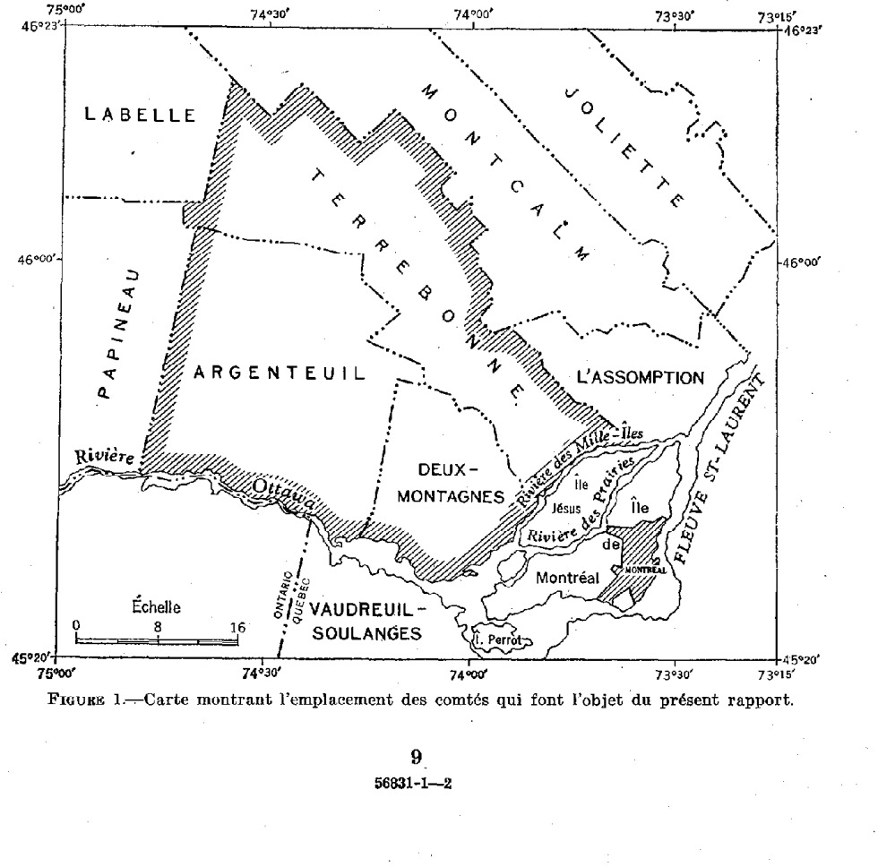
FIGURE 1.—Carte montrant l'emplacement des comtés qui font l'objet du présent rapport.
Population
D'après le recensement du Canada de 1956 (Tableau 1), la population du comté d'Argenteuil était de 28,474, celle de Terrebonne, de 81,329, et celle de Deux-Montagnes, de 26,595. Il s'est produit une forte augmentation de population de 1941 à 1956; selon le recensement de 1941, les populations étaient de 22,670, 46,864 et 16,746, respectivement.
TABLEAU 1.— RÉPARTITION DE LA POPULATION DANS LA RÉGION À L'ÉTUDE, 1956¹
Argenteuil
Deux-Montagnes
Terrebonne
Population globale..................................................
28,474
26,595
81,329
Population agricole................................................
4,415
8,163
8,390
Pourcentage de la population totale sur des fermes...........
16
31
10
Nombre d'habitants par mille carré............................
36
95
104
Nombre de ruraux par 100 acres de terre cultivée..........
2.6
5.9
5.2
¹ Recensement du Canada.
La répartition de la population varie considérablement (Tableau 1). Dans le comté de Deux-Montagnes, 31 p. 100 de la population vivent sur des fermes, alors que seulement 15 et 10 p. 100 de la population sont domiciliés sur des fermes dans les comtés respectifs d'Argenteuil et de Terrebonne. Dans ces deux comtés, en particulier Terrebonne, un fort pourcentage de la population habite des centres urbains, commerciaux et industriels. Sur l'étendue globale du terrain, il y a 104 habitants par mille carré dans Terrebonne, 95 dans Deux-Montagnes et 36 dans Argenteuil. La population agricole la plus dense se trouve dans le comté des Deux-Montagnes, où l'on compte 5.9 habitants par 100 acres de terre comparativement à 5.2 dans Terrebonne et 2.6 dans Argenteuil.
Terrains agricoles
L'étendue totale de terrain occupé par des fermes se chiffre par 166,545 acres dans le comté d'Argenteuil, soit 33 p. 100 de l'étendue totale de terrain, et à 162,906 acres dans Terrebonne, soit 33 p. 100 du total. Le comté des Deux-Montagnes a 138,048 acres de terrain, soit 77 p. 100 de l'étendue totale, en fermes. Ces chiffres illustrent bien la répartition inégale des sols propres à la culture dans ces comtés. On compte 858 fermes dans le comté d'Argenteuil, 1,408 dans Terrebonne et 1,430 dans Deux-Montagnes. Plus de 95 p. 100 de ces fermes sont sous la direction de leurs propriétaires. La grandeur moyenne de la ferme varie considérablement (Tableau 2). Cette variation est due en partie à la nature des sols qui se trouvent dans les régions respectives, mais aussi au régime de concession des terres.
TABLEAU 2.— TERRAINS OCCUPÉS PAR DES FERMES DANS LES COMTÉS À L'ÉTUDE, EN 1956¹
Argenteuil
Deux-Montagnes
Terrebonne
Étendue globale de terrain (acres)...................................
501,120
178,560
500,480
Étendue occupée par des fermes (acres)........................
166,545
138,048
162,906
Pourcentage de l'étendue globale...................................
33
77
33
Nombre de fermes.......................................................
858
1,430
1,408
Fermes de moins de 69 acres........................................
57
479
331
Fermes de 70 à 129 acres............................................
222
677
585
Fermes de 130 à 239 acres..........................................
350
228
374
Fermes de 240 acres et plus..........................................
229
44
118
Grandeur moyenne des fermes (acres)...........................
194
97
116
Fermes exploitées par leurs propriétaires (pourcentage)......
96
96
98
¹ Recensement du Canada.
Les fermes établies sous le régime seigneurial français sont longues et étroites (40 ou 20 arpents sur 2 ou 3 arpents) et beaucoup plus petites que les terres concédées en vertu du système anglais des «townships» (supports). Ces dernières fermes sont beaucoup plus courtes et plus larges que les premières. Ainsi, dans le comté de Deux-Montagnes, où toutes les fermes ont été concédées selon le régime seigneurial, la grandeur moyenne de toutes les fermes est de 97 acres, alors que dans le comté d'Argenteuil, où la majorité des fermes ont été établies en vertu du système des «townships», l'étendue moyenne de toutes les fermes est de 194 acres. Dans la région établie sous le régime seigneurial, les fermes étroites et longues où les maisons et bâtiments sont rapprochés sur les deux côtés de la route présentent beaucoup d'avantages au point de vue de la vie sociale et des services, mais elles présentent des inconvénients pour la gestion et le maintien de la fertilité aux endroits les plus éloignés des habitations.
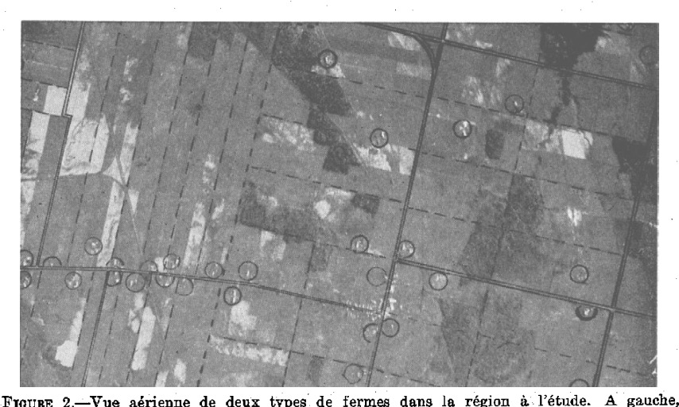
FIGURE 2.—Vue aérienne de deux types de fermes dans la région à l'étude. A gauche, fermes longues et étroites où les habitations sont rapprochées sur un rang double. A droite, ferme courtes et larges dans lesquelles les habitations sont souvent situées au centre du lot.
Photo : A. R. C.
Transports et marchés
Les trois comtés sont desservis par plusieurs routes qui convergent vers Montréal. La route la plus importante de la région va de Ste-Thérèse à St-Jovite et traverse le comté de Terrebonne. C'est une partie de la route Montréal-Mont-Laurier-Senneterre par où s'écoule la dense circulation commerciale et touristique entre Montréal et la région laurentienne. La seconde route d'importance est celle qui va de Montréal à Hull en traversant Deux-Montagnes et la partie sud d'Argenteuil. Une route longe la rive nord de la rivière Ottawa et dessert les nombreux établissements riverains, et une route importante suit l'escarpement laurentien de Lachute à St-Jérôme et New-Glasgow. La portion laurentienne d'Argenteuil est desservie par deux routes principales qui partent toutes deux de Lachute et vont au nord vers la grand-route Montréal-Mont-Laurier. La route de l'est, qui traverse Lakefield, Morin Heights et St-Adolphe, aboutit à la grand-route à Ste-Agathe. La route de l'ouest, qui dessert la région d'Arundel-Huberdeau, débouche sur la grand-route à St-Jovite.
56831-1-2½
Les routes de la région suffisent aux besoins de la population. Les routes principales et plusieurs routes secondaires sont ouvertes à la circulation motorisée durant toute l'année. Pratiquement tous les chemins non pavés sont gravelés et sont carrossables en tout temps. Quatre ponts permettent à la circulation de la région à l'étude de franchir la rivière des Mille-Îles vers l'île Jésus et Montréal. Ces ponts sont situés à Terrebonne, St-Maurice, Ste-Thérèse et St-Eustache. Dans le secteur ouest, un seul pont franchit la rivière Ottawa et relie le village de Grenville du comté d'Argenteuil à la ville de Hawkesbury (Ont.).
La rivière Ottawa ne sert plus au transport commercial; elle forme simplement une barrière entre les habitants de la rive nord et ceux de la rive sud. Des transbordeurs sont en service à Cushing, Carillon et Oka, mais ce moyen de transport est plutôt lent, dispendieux et interrompu par la glace.
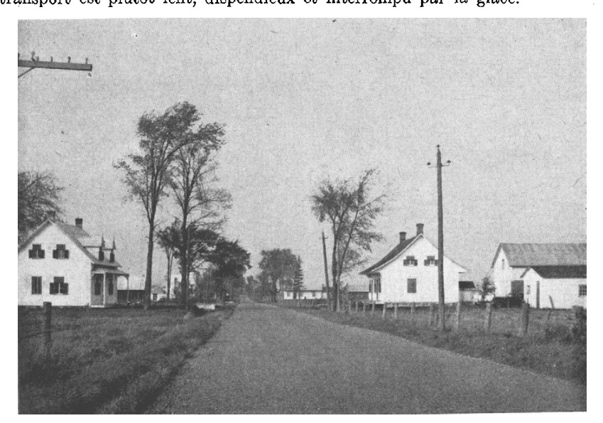
Figure 3. — Chemin de campagne bordé de 18 habitations au mille.
Les chemins de fer, qui ont grandement contribué à l'expansion de la région, constituent encore un important moyen de transport pour les voyageurs et les marchandises. Le Pacifique-Canadien a deux voies ferrées principales dans la région. Celle qui va de Montréal à Mont-Laurier passe par Ste-Thérèse, St-Jérôme, Ste-Agathe et St-Jovite. La seconde, qui va de Montréal à Hull et Ottawa, passe par Ste-Thérèse, Lachute, Grenville et Pointe-au-Chêne. Le National-Canadien dessert les basses-terres par une voie qui traverse St-Eustache, St-Benoît, St-André et Grenville. Une autre voie, qui traverse également St-Eustache, dessert la région laurentienne de St-Jérôme à Morin Heights, Arundel et St-Rémi d'Amherst dans le comté de Papineau. En outre, le Pacifique-Canadien exploite une courte ligne entre Ste-Thérèse et St-Lin dans le comté de l'Assomption, et le National-Canadien entretient une courte voie entre St-Eustache et Pointe-Calumet.
Le marché de Montréal est accessible aux produits agricoles de la région à l'étude. Plusieurs cultivateurs qui habitent dans un rayon de 25 milles de la
ville vendent sur le marché de Montréal les produits frais de leur ferme. La cueillette du lait frais et de la crème se fait souvent jusqu'à une distance de cinquante milles de la ville. Les villages de St-Jovite, St-Eustache et St-Eustache-sur-le-lac dont la population varie de mille à deux mille habitants, ainsi que les villes de Terrebonne, Ste-Thérèse, Ste-Agathe, Brownsburg et Lachute dont la population va de deux à six mille habitants, de même que St-Jérôme avec ses onze mille habitants, sont autant de débouchés pour les produits de la ferme, spécialement le lait et la crème, les fruits et légumes, les œufs et la viande. Des foules de touristes, qui envahissent les Laurentides surtout pendant l'été, augmentent de beaucoup la demande locale de produits agricoles.
PARTIE II
AGENTS FORMATEURS DU SOL
Climat
Le climat de la région à l'étude est frais et humide. Cependant, la région basse est un peu plus chaude et plus sèche que la région élevée. Les données météorologiques de température, de périodes sans gel et de précipitations aux stations de la région et aux postes voisins sont présentées aux tableaux 3, 4 et 5. La figure 4 indique l'emplacement de ces postes.
Poste météorologique ..................................................................... ●
Escarpement qui sépare la région basse
et la région élevée ..................................................................... - - - - - - - - - - - - - - - - - - - -
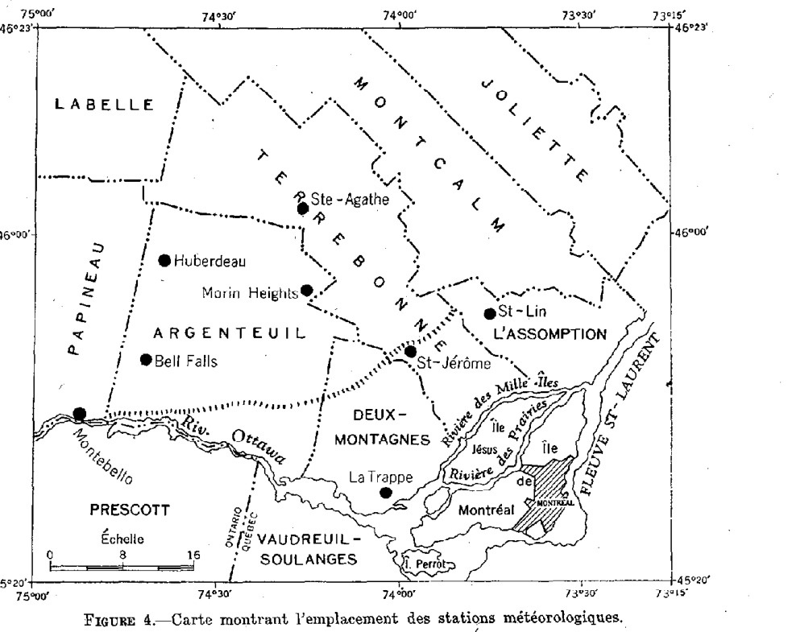
FIGURE 4.—Carte montrant l'emplacement des stations météorologiques.
Température
La température annuelle moyenne va de 43.1°F. dans le secteur sud à 37.5°F. dans le secteur nord (Tableau 3). Aux diverses stations, l'éventail des températures mensuelles moyennes varie depuis 50-55°F. en mai jusqu'à un maximum de 64-70°F. en juillet et entre 40-48°F. en octobre. Normalement, la température moyenne de l'air tombe sous le point de congélation à la novembre dans la région élevée et au début de décembre dans la région basse. Cependant, la profondeur à laquelle le gel pénètre dans le sol dépend de l'épaisseur de la couche de neige. Le gel peut pénétrer à 24 pouces ou davantage
si la terre est encore nue en décembre. Cependant, la neige couvre souvent le sol avant que les grands froids surviennent et elle empêche le sol de geler ou limite le gel à quelques pouces.
Il y a des différences considérables dans les températures des sols selon qu'ils sont exposés au sud ou au nord. Ces différences sont plus marquées sous un couvert de conifères et au printemps. Parfois, sur les pentes exposées au nord, la couche de neige ou le gel du sol subsiste longtemps après le dégel général, et le froid persiste longtemps aux endroits où l'eau séjourne, comme par exemple dans les dépressions tourbeuses.
TABLEAU 3.—TEMPÉRATURE MOYENNE EN DEGRÉS FARENHEIT MÉTÉOROLOGIQUES DE LA RÉGION
Sainte-Agathe
Huberdeau
Saint-Jérôme
Saint-Lin
Montebello
La Trappe
Novembre
29.0
31.9
31.0
31.7
30.1
35.3
Décembre
14.4
17.1
15.0
15.3
16.6
19.1
Janvier
9.4
12.4
10.0
9.5
10.6
13.2
Février
10.5
9.5
10.6
9.8
12.0
15.6
Mars
21.9
24.6
22.9
23.0
22.9
27.2
Avril
35.2
38.9
39.2
39.1
37.8
41.4
Moyenne, de novembre à avril
20.1
22.4
21.5
21.4
21.7
25.3
Mai
50.7
52.2
52.9
53.3
54.2
55.2
Juin
59.4
61.6
62.4
63.1
61.8
65.0
Juillet
64.4
66.2
67.4
68.5
68.0
69.8
Août
62.3
64.3
65.7
66.0
65.9
68.2
Septembre
54.1
55.8
56.7
56.8
57.2
59.1
Octobre
40.3
44.5
44.0
45.2
45.7
47.6
Moyenne, de mai à octobre
55.2
57.4
58.2
58.8
58.8
60.8
Moyenne de l'année
37.5
39.9
39.8
40.1
40.2
43.1
Tiré des données mensuelles d'observations météorologiques, ministère des Transports du Canada, Toronto, 1955.
Périodes sans gel. La période de croissance rapide des plantes et d'activité pédologique intense est celle qui correspond à la température atmosphérique sans gel. La période moyenne sans gel varie de 120 jours dans la partie nord de la région à l'étude à 151 jours dans la partie sud (Tableau 4). En moyenne,
TABLEAU 4.—DONNÉES SUR LE GEL À CERTAINES STATIONS MÉTÉOROLOGIQUES DE LA RÉGION
Ste-Agathe
Huberdeau
St-Lin
St-Jérôme
Montebello
La Trappe
Années d'observation
28
35
36
18
20
12
Période moyenne sans gel (jours)
122
120
125
125
125
151
La plus longue saison sans gel
154
142
167
140
145
175
La plus courte saison sans gel
81
83
75
90
106
119
Date la plus hâtive du dernier gel de printemps
21 avril
1er mai
14 avril
11 mai
4 mai
13 avril
Date moyenne de la dernière gelée de printemps
22 mai
24 mai
18 mai
21 mai
20 mai
7 mai
Date la plus tardive du dernier gel de printemps
30 juin
20 juin
14 juin
8 juin
6 juin
3 juin
Date la plus hâtive du premier gel d'automne
4 sept.
26 août
26 juil.
2 sept.
6 sept.
23 sept.
Date moyenne du premier gel d'automne
21 sept.
21 sept.
20 sept.
23 sept.
22 sept.
5 oct.
Date la plus tardive du premier gel d'automne
9 oct.
9 oct.
9 oct.
3 oct.
8 oct.
20 oct.
Résumés sur le climat, volume 3. Données sur le gel. Ministère des Transports, Toronto, 1956.
cette période s'étend du 7 mai au 5 octobre dans la région de La Trappe, mais seulement du 22 mai au 21 septembre dans la région de Huberdeau-Ste-Agathe.
Précipitation. La précipitation annuelle totale varie de 33.9 à 47.5 pouces (Tableau 5). La station qui inscrit la plus faible précipitation (St-Lin) se trouve juste en dehors de la région à l'étude, à cinq milles au delà de la frontière est. La plus forte précipitation a été inscrite à Morin Heights, au centre de la région. Durant la période de six mois de mai à octobre, la précipitation moyenne est de 18.9 pouces à St-Lin et de 22.8 pouces à Morin Heights. A toutes les stations, sauf Morin Heights, la précipitation moyenne d'août est un peu inférieure à celle des deux mois précédents. De la mi-novembre à la première partie d'avril, presque toute la précipitation tombe sous forme de neige. Occasionnellement, la terre demeure non gelée durant tout l'hiver sous un épais manteau de neige. La couche de neige se maintient généralement en permanence depuis la fin de novembre ou le début de décembre jusqu'au début d'avril (secteur sud) ou la fin d'avril (secteur nord). Il tombe généralement en tout de 50 à 125 pouces de neige dans la partie basse, mais il peut en tomber davantage dans certaines parties des hautes terres.
TABLEAU 5.—PRÉCIPITATION EN POUCES À CERTAINES STATIONS MÉTÉOROLOGIQUES DE LA RÉGION1
Stations
Ste-Agathe
Huberdeau
Morin Heights
St-Lin
St-Jérôme
Bell Falls
Montebello
La Trappe
Altitude (pieds)......
1,200
675
1,025
210
310
475
172
300
Nombre d'années de relevés.........................
32
43
10
43
23
37
27
10
Novembre.........
4.45
3.25
4.74
2.82
4.04
3.70
3.55
3.07
Décembre.........
3.88
2.87
4.35
2.56
4.19
3.28
3.57
2.81
Janvier..........
3.64
2.84
3.91
2.63
3.52
3.25
3.25
2.47
Février..........
2.99
2.24
3.28
2.05
2.85
2.49
2.56
2.21
Mars.............
3.36
2.38
4.58
2.36
3.51
3.04
3.28
2.93
Avril............
3.13
2.65
3.87
2.61
3.42
3.52
3.45
3.18
Total, novembre à avril..
21.35
16.23
24.73
15.03
21.53
19.28
20.16
16.67
Mai..............
3.20
2.96
3.54
2.85
3.42
2.97
3.22
3.55
Juin.............
3.75
3.83
3.82
3.42
3.75
3.53
3.76
3.60
Juillet..........
4.02
3.74
4.11
3.34
3.59
3.58
3.90
3.69
Août.............
3.60
3.36
4.22
3.09
3.60
3.17
3.62
2.94
Septembre........
3.81
3.96
4.04
3.34
3.85
3.99
3.88
3.96
Octobre..........
3.35
3.27
3.05
2.85
3.34
3.07
3.17
2.79
Total, mai à octobre...
21.73
21.12
22.78
18.89
21.55
20.31
21.35
20.53
Total de l'année.......
43.18
37.35
47.51
33.92
43.08
39.50
41.51
37.20
1Tiré du Bulletin météorologique, Bureau de la statistique de Québec, janvier à décembre 1958.
Excès et insuffisance d'eau dans le sol.—En estimant l'effet de la précipitation sur les sols et sur l'agriculture en général, il faut tenir compte de l'évaporation superficielle et de la transpiration des plantes, ainsi que de la quantité et de la répartition de la précipitation. En général, les résultats nets de la précipitation et de l'évapotranspiration sont favorables aux cultures de la région. Les périodes plutôt sèches qui conviennent à la préparation des semis et à la moisson sont généralement courtes. Après le dégel printanier, il y a souvent un excès d'humidité qui maintient le sol frais, paralyse la croissance des plantes, retarde les semis et nuit à la germination. Le drainage efficace aide à corriger cet état de choses.
La précipitation moyenne augmente de mai à juillet, alors que la température et le besoin d'humidité pour l'évapotranspiration augmentent (Tableau 5).
Durant les saisons qui diffèrent de la moyenne, les pluies printanières excessives sont ordinairement plus préjudiciables à l'agriculture que ne le sont les sécheresses printanières plutôt courtes. Les sols plats, à texture fine et dont l'égouttement est insuffisant ou mauvais sont plus gravement dérangés par les pluies excessives du printemps que ne le sont les sols plus poreux, mieux drainés. Durant les années à printemps très pluvieux, le foin et les pâturages viennent mieux que les céréales et le maïs, mais c'est l'inversee qui se produit au cours des années à printemps relativement sec.
En août, alors que la précipitation moyenne est relativement faible et que le taux d'évapotranspiration est élevé, les sols ont généralement moins d'humidité qu'il n'en faut pour les plantes. Bien que les moyennes ne l'indiquent généralement pas, des sécheresses surviennent occasionnellement, particulièrement à la fin de juillet et en août. La sécheresse d'août ne nuit que peu aux céréales, mais les pâturages et les regains de foin peuvent être touchés.
En septembre, les pluies abondantes et la baisse de l'évaporation restaurent généralement l'humidité du sol. La précipitation d'octobre suffit généralement aux besoins des plantes et elle est rarement excessive. Les labours peuvent d'ordinaire se faire avec facilité durant octobre. En novembre, la terre est en général saturée et la croissance des plantes s'arrête complètement; les travaux du sol sont généralement interrompus quand la terre gèle. Il se produit, toutefois, quelque percolation d'eau dans le sol si la terre se recouvre, avant de geler, d'une épaisse couche de neige, et cette percolation peut durer tout l'hiver.
D'après les calculs de Sanderson (2), les excédents d'eau annuels moyens mesurés en pouces aux diverses stations sont les suivants: Ste-Agathe, 29.3; St-Jérôme, 20; Montebello, 17.6; Huberdeau, 16.7; l'Assomption, 15.7, et St-Lin, 11.6. Sanderson situe la région à l'étude dans la zone où chaque année il n'y a pas ou à peu près pas d'insuffisance d'eau. Cependant, ses conclusions sont basées sur les conditions moyennes et, comme nous l'avons déjà indiqué, au cours de certaines années, quelques récoltes dans la région souffrent de la sécheresse. Les forts excédents d'eau dans la région font ressortir l'importance de bons systèmes de drainage de nature à enlever l'excès d'eau sans causer de grave érosion du sol.
Végétation naturelle
La forêt est la végétation naturelle de la région à l'étude; avant l'arrivée des pionniers blancs, elle couvrait tout le terrain le long de la rive nord de l'Ottawa. La forêt recouvre encore une bonne partie de la région laurentienne élevée, mais sur les terres basses elle a été remplacée presque entièrement par les cultures. Apparemment, la forêt primitive était remarquablement dense et comprenait une grande variété d'arbres adaptés aux sols les plus divers. Il est probable que les arbres à feuilles caduques dominaient dans la région entière.
Dans la région haute, où la majorité des sols sont bien drainés, de même que sur les arêtes de till de la région basse l'association présente d'arbres est dominée par l'érable à sucre (Acer saccharum Marsh) et par le hêtre (Fagus grandifolia) avec des mélanges variables de frêne blanc (Fraxinus americana), de tilleul (Tilia glabra) et d'ostryer de Virginie (« bois de fer») (Ostrya virginiana). Selon Dansereau (3), ce climax est remplacé par une association d'érable à sucre, de bouleau jaune (Betula lutea) et de sapin (Abies balsamea) dans les endroits ombragés et sur les pentes très raides. Dans les endroits où le drainage est insuffisant le printemps mais qui s'assèchent vers la fin de l'été,
la pruche (Tsuga canadensis) et l'érable rouge (Acer rubrum) se trouvent en association avec l'érable à sucre et le hêtre. Sur un sol qui est sec tout l'été ou un sol où la matière organique est peu abondante, le chêne rouge (Quercus borealis) est généralement abondant et parfois dominant (3).
Sur les sols argileux à drainage insuffisant ou quelque peu mauvais, ainsi que sur les sols sableux, minces, reposant sur l'argile, sols qui ensemble recouvrent une grande partie de la région basse, la végétation arborescente est caractérisée par une forte proportion d'érable rouge, de frêne rouge (Fraxinus pennsylvanica) et d'orme blanc (4). Parmi les autres arbres relativement peu nombreux sur les sols modérément bien drainés à imparfaitement drainés mais très fertiles de la région basse se trouvent le noyer cendré (Juglans cinerea), le caryer cordiforme et le caryer à fruits doux (Carya cordiformis et C. ovata), le chêne blanc et le chêne à gros fruits (Quercus alba et Q. macrocarpa) et l'érable noir (Acer nigrum).
Dans les parties sableuses et arides de la région basse, comme il s'en trouve près d'Oka, Lachute et Terrebonne, le pin blanc (Pinus strobus) est l'arbre dominant, mais le pin rouge et le pin gris (P. resinosa et P. banksiana) se rencontrent également. Les arbres qui croissent le plus fréquemment sur les sols humides ou marécageux de la région sont le mélèze (Larix laricina), le thuya de l'est (Thuja occidentalis), l'épinette blanche et l'épinette noire (Picea glauca et P. mariana), le frêne noir (Fraxinus nigra) et l'aulne blanchâtre (Alnus incana). Le thuya de l'Est ne se limite pas aux endroits humides mais prospère aussi sur les sols minces bien drainés qui reposent sur une assise rocheuse calcaire. Dans les endroits dont la couverture forestière primitive a été détruite par le feu ou par le défrichement et qui se sont reboisés par la suite, le tremble (Populus tremuloides) et le bouleau (Betula populifolia et B. papyrifera) forment une association transitoire avec d'autres arbres d'adaptabilité variable comme le pin blanc, l'épinette blanche et le thuya.
Topographie
Le territoire à l'étude comprend deux régions physiographiques distinctes, la région laurentienne élevée et la région basse Ottawa-St-Laurent. La région élevée occupe approximativement 1,844 milles carrés et couvre environ 80 p. 100 des comtés d'Argenteuil et de Terrebonne et 10 p. 100 du comté de Deux-Montagnes. La région basse n'occupe qu'environ 540 milles carrés dans les parties sud-est des trois comtés. Les deux régions sont séparées une de l'autre par l'escarpement laurentien qui s'infléchit depuis le bord de la rivière Ottawa à la limite ouest du comté d'Argenteuil, jusqu'au village de New-Glasgow, comté de Terrebonne (figure 3).
La plus grande partie de la région basse est recouverte d'un épais dépôt de sédiments marins et lacustres qui ont donné un aspect général plat à la région. Cependant, dans certaines sections, plusieurs arêtes de till traversent les sédiments de façon à rendre la topographie ondulée. Les arêtes de till sont rares dans le comté de Terrebonne, mais nombreuses dans Argenteuil entre Grenville et St-Philippe et entre Beech Ridge et la rivière Ottawa. Dans le comté de Deux-Montagnes plusieurs basses arêtes de till s'élèvent au-dessus du niveau général de la plaine. L'altitude de la région basse varie de 50 à 300 pieds au-dessus du niveau moyen de la mer, à l'exception des collines d'Oka et de St-André qui atteignent des hauteurs respectives de 450 et de 750 pieds.
Topographie
Altitude
Région base: unie à ondulée25'-300'
Escarpement: en pente raide...
Région élevée: ondulée à vallonnée300'-800'
Région élevée: vallonnée à montueuse800'-1200'
Région élevée: mont agneuse1200'-1600'
Région élevée: sommets de montagnes et pentes raides1600'-3200'
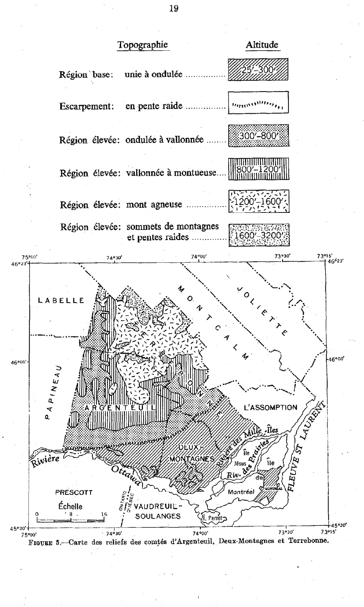
FIGURE 5.—Carte des reliefs des comtés d'Argenteuil, Deux-Montagnes et Terrebonne.
Si l'on excepte ces parties montueuses, la région basse est caractérisée par des platières allongées en forme de canaux séparées par des arêtes de till ondulieuses ou des dépôts sableux sur fonds d'argile. Les canaux d'argile se trouvent généralement à des altitudes de 150 à 200 pieds au-dessus du niveau moyen de la mer et les étendues sableuses à des hauteurs de 200 à 225 pieds. Les arêtes de till dépassent généralement ces altitudes là où l'érosion n'a pas emporté les dépôts marins, comme dans la région de Lachute—Ste-Scolastique, mais ailleurs, sur des basses terrasses et les fonds d'anciens cours d'eau le till se trouve à des altitudes beaucoup plus faibles.
La région basse offre deux particularités frappantes: des escarpements abrupts et de profonds ravins attribuables à l'action des cours d'eau sur l'argile facile à éroder. Les escarpements représentent les anciennes berges de la rivière Ottawa. Ces berges courent généralement de l'ouest vers l'est dans Argenteuil et Deux-Montagnes, bien qu'à certains endroits la direction puisse être modifiée par la présence de matériaux moins sujets à l'érosion, comme le till ou l'assise rocheuse. Dans Terrebonne, les berges se dirigent généralement vers le nord-est puis vers le nord juste en dehors de la limite est de la région à l'étude. Ce point représente apparemment la jonction des cours d'eau pré-Ottawa et pré-St-Laurent. Les cours d'eau ont profondément raviné l'argile des terrasses supérieures et, dans certains cas, l'évidement a atteint le niveau de terrasses inférieures.
La haute région laurentienne s'élève nettement au-dessus de la région basse. Le terrain est plus accidenté et varie d'ondulé à vallonneux et montagneux avec de nombreuses dépressions isolées et collines escarpées. En général, la topographie suit de près le relief inégal des assises précambriennes sous-jacentes. Certaines vallées profondément encastrées serpentent dans la région accidentée.
Les hautes terres peuvent se diviser en quatre régions plus petites selon les aspects topographiques généraux (Figure 5). La première région se situe à la périphérie de la région élevée et s'étend à une profondeur d'approximativement cinq milles de l'escarpement et elle comprend aussi la vallée de la rivière du Nord dans le comté de Terrebonne et la vallée de la rivière Rouge et de sa tributaire, la Diable, dans le comté d'Argenteuil. L'altitude de cette région varie de 300 à 800 pieds; la région se caractérise par une topographie légèrement vallonnée. La seconde région, qui se trouve immédiatement au nord de la première, a une altitude variant entre 800 et 1,200 pieds; elle varie de vallonnée à montueuse. La troisième région a une altitude qui varie de 1,200 à 1,600 pieds, avec quelques sommets atteignant 1,800 pieds. Cette région accidentée est située dans la partie nord-est d'Argenteuil et recouvre un large secteur de la région haute de Terrebonne. La quatrième région compte certaines montagnes les plus élevées du plateau Laurentien. Le mont Tremblant, qui atteint 3,150 pieds, et le mont Noir, qui s'élève à 2,800 pieds, se trouvent dans la partie nord de Terrebonne.
Drainage
Le drainage du sol comprend l'écoulement de l'eau à la surface du sol aussi bien qu'à travers le profil du sol. Il s'agit dans le premier cas de ce qu'on appelle généralement le drainage externe ou ruissellement, qui dépend surtout du relief du terrain. Dans le second cas, il s'agit de ce qu'on appelle souvent le drainage interne, qui subit l'influence de la vitesse de percolation de l'eau à travers le sol et dépend plus de la texture et de la structure du sol que du relief du.
terrain. Les résultats combinés de ces deux types de drainage s’appellent généralement le drainage naturel et effectif du sol.
Environ 75 p. 100 de la précipitation annuelle totale se perdent par ruissellement dans les secteurs élevés de la région à l’étude (1). Un ruissellement de cette importance influe sur la formation des sols par le délavage, l’érosion superficielle et la résédimentation des matériaux érodés.
Le principal réseau de ruissellement de la région est illustré à la Figure 6. La rivière du Nord, avec ses tributaires, draine plus des deux tiers du terrain. Elle prend sa source à l’extrémité nord-est du comté de Terrebonne dans le lac de la Montagne-Noire et dans une chaîne de lacs dont le lac Brûlé est le plus important. Avec ses tributaires, la rivière du Nord draine toute la partie nord-est de Terrebonne depuis Nantel et Ivry jusqu’à Ste-Marguerite, ainsi que toute la moitié est d’Argenteuil.
Escarpement qui sépare la région basse de la région élevée ........................................
FIGURE 6.—Carte hydrographique des comtés d'Argenteuil, Deux-Montagnes et Terrebonne.
A St-Jérôme, la rivière du Nord quitte la vallée des hautes terres et serpente au pied de l'escarpement laurentien jusqu'à Lachute. Sur cette partie de son parcours, la rivière reçoit plusieurs cours d'eau venant de la région élevée. Dans ce secteur, la rivière déborde souvent au printemps et dépose des alluvions fraîches sur le terrain bas avoisinant. La seule tributaire importante entre Lachute et la rivière Ottawa est la rivière St-André qui draine une partie de la région basse. La rivière du Nord compte un barrage en amont de St-Jérôme et un autre en aval de Lachute pour fins de production d'électricité.
Le bassin hydrographique de la rivière Rouge est le deuxième en importance dans la région. La rivière Rouge prend sa source à une soixantaine de milles au nord de la région et elle y pénètre près de Brébeuf. Aux limites ouest d'Argenteuil et de Terrebonne, elle est rejointe par la rivière du Diable qui draine toute la portion nord-ouest de Terrebonne et la région au nord de celle-ci. Dans les environs de Brébeuf et de St-Jovite, la rivière du Diable et la rivière Rouge sont très paresseuses. Elles forment beaucoup de bras morts, dont certains ont été isolés de façon à constituer de petits lacs. Dans Argenteuil, la rivière Rouge coule plus rapidement et elle est profondément encastrée, sauf dans la région d'Arundel. La rivière Rouge est aménagée et génère de l'énergie hydroélectrique près d'Harrington-Est et à Brébeuf. La rivière du Nord, la rivière Rouge et la petite rivière Achigan, qui coule depuis le lac Achigan dans Terrebonne, draînent la région élevée toute entière.
La rivière la plus importante de la région basse est la rivière du Chêne qui draine la plus grande partie de Deux-Montagnes. Sur son parcours on rencontre des sédiments de formation récente et des dépôts en cours de formation durant les inondations périodiques du printemps. Le deuxième bassin hydrographique d'importance est celui de Mascouche qui comprend la rivière St-Pierre et draine la majeure partie de la région basse de Terrebonne. De nombreux autres petits cours d'eau drainent la région basse; les plus importants d'entre eux sont la rivière aux Chiens dans Terrebonne, la rivière Chicot et la rivière aux Serpents dans Deux-Montagnes et la rivière Kingham en Argenteuil.
Le réseau hydrographique de la région basse diffère en plusieurs points de celui de la région haute. Il y a plus de ruissellement dans la région élevée que dans la région basse et il y a de nombreux lacs dans la région élevée alors qu'on n'en trouve aucun dans la région basse. De plus, les cours d'eau des hautes terres coulent rapidement.
A cause du ruissellement excessif, une forte proportion des sols de la région haute varient de modérément à excessivement drainés, alors que les sols imparfaitement drainés ne se rencontrent que rarement. Cependant, dans certaines dépressions entre les versants des montagnes, l'eau s'écoule mal et les sols demeurent saturés. Dans la région haute, il n'est pas rare de trouver des changements brusques de drainage variant d'excessif à mauvais, mais les changements des conditions de drainage sont beaucoup plus graduels dans la région basse où des formes variées de terrain et la présence de sols plus ou moins poreux ont rendu le drainage très variable, d'excessif à modéré, imparfait, mauvais, très mauvais et stagnant. Comme le drainage naturel est un facteur important de la formation du sol et de certaines caractéristiques du sol, nous devrons y revenir dans la classification et la discussion des sols particuliers.
Roches-mères
La composition des matériaux non consolidés à même lesquels les sols de la région se sont formés est, en plusieurs cas, étroitement liée aux formations géologiques sous-jacentes. Un bref exposé de la géologie de l'assise rocheuse est donc d'un grand intérêt dans l'étude des roches mères des sols.
Assises géologiques.—Les formations rocheuses sur lesquelles reposent les terrains élevés sont d'origine précambrienne et consistent largement en roches ignées dures. D'un autre côté, la région basse repose sur des roches sédimentaires de l'âge paléozoïque. Les seules exceptions sont de petites étendues près de St-André et de la région Oka—La Trappe—St-Joseph, où se rencontrent des roches précambriennes. Près de la Trappe, des roches alcalines d'âge plus récent traversent ces formations. La répartition des différentes formations géologiques dans la région à l'étude est présentée à la figure 7.
La plus vieille formation paléozoïque, le Potsdam, repose sur les rochers précambriens et se compose de quartzite et de grès dont la couleur varie de blanc à gris. Cette formation est la plus étendue dans le comté de Deux-Montagnes, principalement près de St-Canut, Mirabel, Côte St-Vincent, Ste-Scholastique et St-Placide.
La formation Beekmantown est la plus répandue de toutes les roches paléozoïques dans la région basse à l'étude. Elle consiste principalement en dolomie et en pierre à chaux magnésienne. Cette formation est généralement recouverte d'un épais sédiment marin. Cependant, des gisements de roches Beekmantown sont exposés à Lachute, Beech Ridge, St-Philippe, Grenville (Argenteuil), Grande Fresnière, Grand Chicot, St-Eustache-sur-le-lac (Deux Montagnes), Ste-Thérèse et St-Janvier (Terrebonne).
La formation Chazy est représentée en Argenteuil dans la région Grenville-Watson-Chatbore par certains schistes et par des grès gris. Dans Terrebonne, une lisière de pierre à chaux Chazy s'étend de Ste-Thérèse à St-Maurice.
Les formations Trenton et Black River sont exposées ou situées près de la surface entre St-Maurice et Terrebonne le long de la rivière des Mille-Îles. Elles consistent en calcaire gris à haute teneur en calcium.
Sur les collines près de St-André et de la Trappe, les roches sous-jacentes sont semblables à celles de la région laurentienne. Elles consistent en granit, syénite, gneiss, anorthosite et en pierre à chaux cristalline. Les étendues de pierre à chaux cristalline sont percées par certains filons de roches très basiques du même âge que les roches intrusives du Mont-Royal. La répartition des roches intrusives (okaïte, alnoéite, camptonite, etc.) et leur influence sont très restreintes. Cependant, à certains affleurements rocheux, on a pu remarquer une différence considérable dans l'aspect et la composition du sol.
Les roches précambriennes de la région élevée comprennent les principales formations suivantes: a) le granit et la syénite Chatham-Grenville b) l'anorthosite et les quartz de la série Morin c) le granit et les gneiss du Mont Tremblant et d) les roches de la série Grenville.
«Le stock Chatham-Grenville est la formation précambrienne la plus récente reconnue dans la région de Lachute. Il occupe une étendue de 36 milles carrés près de la bordure sud du bouclier laurentien. On trouve de petits stocks et dykes connexes près de l'amas principal, et des dykes de roche semblable recoupent l'anorthosite près d'Oka. Le stock se compose de syénite et de granit.
d'un type distinct, au point de vue pétrographique, des autres roches intrusives, à cause de la présence de xénotime comme minéral accessoire et d'amphiboles et pyroxènes alcalins en quelques facics» (6).
PRÉCAMBRIEN
PALÉOZOIQUE
Série de Morin : anorthosite et gabbro-anorthosite
Potsdam : grès
Série de Morin : monzonite quartzifère, granit, syénite
Beekmantown : dolomie et calcaire
Mont Tremblant : granit-gneiss
Chazy : calcaire
Massif Chatham-Grenville : granit et syénite
Chazy : schiste et grès
Série de Grenville : calcaire cristallin, gneiss et quartzite
Trenton et Black River : calcaire
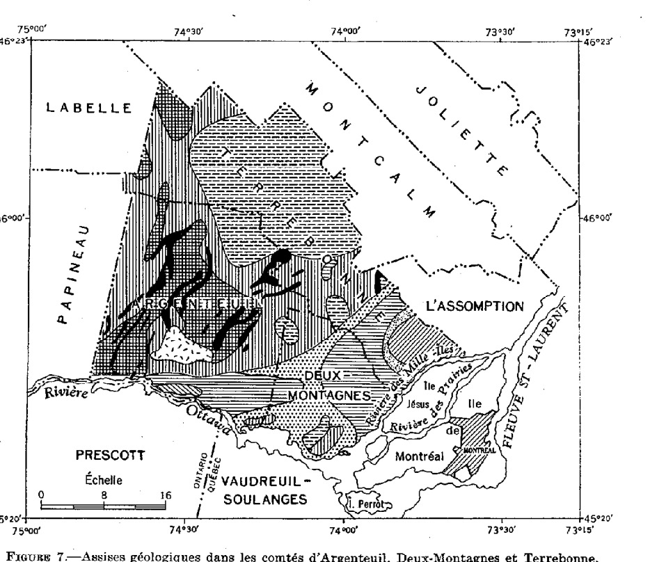
Figure 7.—Assises géologiques dans les comtés d'Argenteuil, Deux-Montagnes et Terrebonne.
La série de Morin consiste principalement en anorthosite et en quartz. L'anorthosite occupe la partie nord-est de la région où elle s'étend depuis St-Faustin à l'ouest jusqu'au lac de l'Achigan à l'est et depuis Morin Heights au sud jusqu'aux limites nord du comté de Terrebonne. De petits gisements d'anorthosite se trouvent également près de New Glasgow, St-Jérôme et Lakefield.
L'anorthosite est une roche basique à grains généralement grossiers et dont les nuances de couleur varient du violet foncé au vert pâle ou presque blanc. L'anorthosite se compose largement de feldspath plagioclase et parfois elle devient un gabbro.
«Le gneiss forme de vastes massifs dans la région située au sud du lac de la montagne Tremblante, mais il apparaît çà et là dans le Grenville sous forme de filons-couches.» (6)
«Sur le côté ouest de la région de Lachute, les masses de gneiss de la montagne Tremblante persistent jusqu'aux environs de l'escarpement d'Ottawa. Comme structure, les masses sont généralement allongées dans une direction nord et sud, i.e., parallèles aux axes des plis qui existent dans la série de Grenville.» (6) «La roche se compose de quartz, d'oligoclase ou l'albite, de microline et de biotite ou de hornblende.» «La roche est plus silicieuse et potassique que la plupart des roches granitiques de la région. La basse teneur en minéraux foncés, comme l'indique la faible proportion de MgO et de FeO, est également caractéristique de cette roche.» (6)
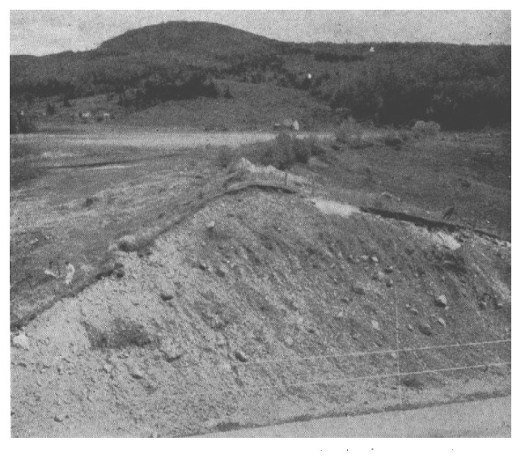
FIGURE 8.—Les dépôts glaciaires de la région de St-Faustin comptent parmi les plus profonds de toute la région à l'étude.
La série Grenville, qui se situe dans la partie sud de la région haute, consiste en quartzites, gneiss, calcaires cristallins et amphibolites. «Ces quartzites passent de roches formées de quartz presque pur à des variétés contenant du feldspath et, même des minéraux silicatés de couleur foncée. On trouve de la pyrite et de la magnétite en quelques variétés. Les calcaires sont principalement composés de carbonate de calcium; il y a un peu de magnésium sous forme de carbonate, mais le gros du magnésium est sous forme de silicates, principalement le diopside et la phlogopite. Les résultats d'analyse chimique suggèrent que le calcaire cristallin normal de la série de Grenville ne contient qu'une faible quantité de magnésium, beaucoup moindre que celle que contient la dolomie.» (6)
Dépôts superficiels non consolidés (roches mères).
— Les dépôts géologiques non consolidés qui recouvrent l'assise rocheuse forment la roche-mère de la majorité des sols de la région à l'étude. Ces dépôts superficiels dans les comtés d'Argenteuil, Deux-Montagnes et Terrebonne peuvent se diviser en six groupes différents selon leur origine :
a) les dépôts de till glaciaire,
b) les dépôts fluvio-glaciaires,
c) les dépôts éoliens,
d) les sédiments marins,
e) les dépôts alluvionnaires et
f) les dépôts organiques.
Dépôts glaciaires.
— Les dépôts de till glaciaire couvrent la majeure partie de la région à l'étude. Ils consistent en un mélange de matériaux disparates dont la grosseur varie depuis l'argile, le limon et le sable, jusqu'au gravier et aux grosses pierres. Les tills proviennent principalement de l'assise rocheuse locale sous-jacente. Cependant, on peut noter dans certaines régions un mélange considérable de matériaux rocheux venant de différentes formations, particulièrement sur les collines de la région d'Oka où l'on trouve une abondance de fragments de roches paléozoïques dans le till qui recouvre les formations précambriennes.
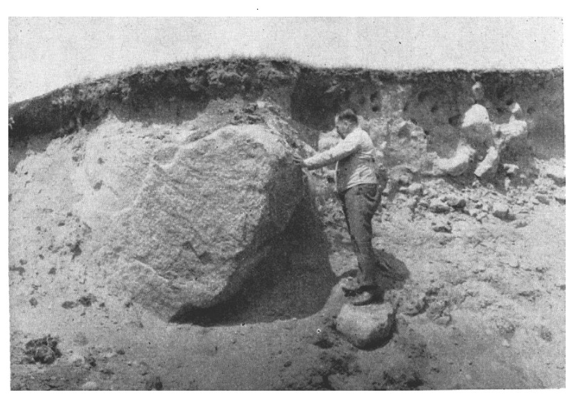
Figure 9. — Till de la région élevée contenant d'énormes boulders formés de roches précambriennes dures.
L'apparence et la texture du till varient considérablement selon la provenance et la nature de la roche mère. Le till qui provient de roches ignées dures, comme le granit, le gneiss et l'anorthosite de la région haute, est généralement sableux et contient de nombreux gros boulders (blocs erratiques). Le till formé de roches sédimentaires plutôt friables, comme les calcaires et les schistes argileux, est généralement de nature loameuse ou argileuse et contient communé-ment plusieurs petits fragments de roche anguleux, et parfois aussi de solides boulders charriés par les glaciers venus de la région élevée. Les formations rocheuses de grès ont produit un till très sableux contenant beaucoup de boulders rectangulaires. L'éventail de texture du till qu'on rencontre dans les trois comtés
varie depuis la terre franche sableuse légère à la terre franche argileuse. Le till de terre franche ou de terre franche sableuse très fine prédomine. La profondeur des dépôts de till sur l'assise rocheuse varie depuis quelques pouces jusqu'à environ 25 pieds dans la région basse et jusqu'à plus de 40 pieds dans certaines parties de la région élevée. C'est dans la région de St-Faustin que le till non assorti atteint la plus grande profondeur.
Dans la région basse, de vastes étendues de till, ont été recouvertes par des sédiments marins et alluvionnaires. Dans cette région, les affleurements de till se rencontrent principalement au-dessus de la courbe de niveau de 225 pieds, ce qui représente le niveau moyen auquel cette partie de la région basse a été remplie de sédiments marins (Figure 11). Au-dessous de ce niveau, le till se rencontre presque exclusivement dans les canaux de la rivière pré-Ottawa, principalement entre les villes de St-Eustache et de Terrebonne, le long de la rivière des Mille-Îles.
La plus grande partie de la région laurentienne est recouverte de till glaciaire, dont une certaine proportion est recouverte à certains endroits de minces dépôts alluvio-lacustres. Sur les roches paléozoïques de la région basse, le till a une topographie ondulée à légèrement vallonnée, mais dans les régions hautes, la topographie est fortement vallonnée à montagneuse. Les différentes formations géologiques de la région donnent naissance à un grand nombre de tills qui diffèrent dans leurs caractéristiques chimiques et physiques. Treize tills ont été reconnus, dont neuf se trouvent dans la région basse et quatre dans la région élevée. Les caractéristiques de chaque till seront traitées dans un chapitre consacré à la description des sols. Parmi les sols qui se sont formés sur till glaciaire, mentionnons les sols Ste-Agathe et St-Bernard.
Dépôts fluvio-glaciaires
Les matériaux fluvio-glaciaires ont été déposés par des cours d'eau alimentés par les glaciers et consistent en matériaux triés de texture grossière et contiennent une forte proportion de sable et de gravier. Ces dépôts se présentent sous forme d'eskers, de kames et de terrasses de délavage, de plages et de plaines. Ils couvrent de grandes étendues du plateau laurentien mais ils sont peu fréquents dans la région basse.
Dans la région élevée, les dépôts fluvio-glaciaires se présentent principalement sous forme de kames à éléments disparates et de delavages bien triés. Les dépôts qui se trouvaient le plus près du front glaciaire sont mal triés et contiennent beaucoup de boulders charriés par les glaces flottantes. Ils sont grossièrement assortis et marqués par des stratifications croisées de diverses épaisseurs et par un relief accidenté. Les plus fortes étendues de dépôts sont situées dans la région St-Faustin-Lac Quenouille-Ste-Lucie. Plusieurs vallées secondaires et étroites sont remplies de ces dépôts.
Les matériaux des plaines de délavage sont généralement bien triés et la stratification est quasi-horizontale. Les dépôts consistent principalement en sable grossier et en gravier avec quelquefois des cailloux mais rarement des boulders. La partie supérieure du dépôt est parfois de texture plus fine que la partie inférieure. La plus grande partie des délavages sont à surface plane, légèrement ondulée ou pentue, mais elle présente parfois des cuvettes formant des étangs ou des tourbières.
Près de la marge du plateau laurentien, ces dépôts peuvent se présenter sous forme de terrasses ou de plages. Cependant, vu que les matériaux dans ces dépôts graveleux ont la même origine, on peut considérer tous ces dépôts comme un seul type de roche-mère. Les dépôts fluvio-glaciaires assortis occupent les principales vallées de la région haute.
Dans la région basse, les dépôts fluvio-glaciaires sont représentés par quelques eskers. La majorité d'entre eux ont été recouverts par des sédiments marins mais dans certains cas, ils ont été partiellement exposés par l'érosion subséquente. Le meilleur exemple d'un esker se trouve près de Ste-Thérèse; il a à peu près un dixième de mille de large et va dans une direction nord-est sur une distance d'environ cinq milles. Il a été recouvert à certains endroits de plusieurs pieds d'argile marine, mais son cours a été repéré et en plusieurs endroits on retire du gravier d'en dessous de l'argile. Le dépôt graveleux qui se trouve le long de la rivière Mascouche est considéré comme une continuation de l'esker mentionné ci-dessus. Un autre esker important se trouve dans des conditions semblables à environ cinq milles à l'est de Lachute, dans le comté d'Argenteuil. Un petit esker se rencontre également entre St-Jérôme et St-Canut (Deux-Montagnes) au pied de l'escarpement laurentien. Les sols St-Faustin et Ste-Philomène sont des exemples de sols formés de matériaux fluvio-glaciaires.
Dépôts éoliens.—Dans les deux principales vallées de la région élevée, les dépôts éoliens se superposent aux tills glaciaires. Ces dépôts, qui se sont faits durant le retrait du glacier continental, ont été transportés par les grands vents qui soufflaient en provenance des champs de glace dans une direction sud ou sud-ouest. Le plus grand de ces dépôts se trouve au sud de St-Jovite, dans la vallée des rivières Rouge et du Diable. La profondeur des dépôts éoliens dépasse rarement trois pieds et elle est généralement de 1.5 à 2.5 pieds. Les dépôts varient en texture de terre franche sableuse très fine à terre franche limoneuse. Ces matériaux n'ont apparemment été transportés qu'à de petites distances et proviennent des dépôts locaux du glacier. Tous les sols formés de dépôts éoliens appartiennent à la série St-Jovite.
Dépôts marins.—Les dépôts marins qu'on trouve dans la région sont de deux sortes, les plages graveleuses et les sédiments argileux. Les plages graveleuses se rencontrent exclusivement près des collines d'Oka et de St-André. Ces dépôts ont rarement plus de dix pieds de profondeur et souvent moins de cinq pieds. Ils se composent de gravier et de sable plus ou moins triés et parsemés de boulders. Les matériaux sont généralement loameux et proviennent apparemment des dépôts glaciaires sur les lieux ou dans le voisinage. Il est difficile de différencier entre les tills et les matériaux de plage dans la région d'Oka-St-André. Il y a un genre de till sur lequel les vagues ont exercé une influence considérable. Le sol St-Joseph est un exemple de sol formé de dépôts marins graveleux.
Les sédiments d'argile en eau profonde sont de beaucoup les dépôts marins les plus importants. On les trouve dans la région basse et dans les vallées laurentiennes directement reliées à la vallée Ottawa-St-Laurent.
Il y a trois sortes d'argile marine: a) l'argile brune, roche-mère des sols Wendover et Bearbrook, b) l'argile grise calcaire, roche-mère des sols St-Urbain, et c) l'argile grise non calcaire, roche-mère des sols Dalhousie, Rideau, Ste-Rosalie et Laplaine, dans la région basse, et du sol Brandon dans les vallées laurentiennes. Cette argile qui se trouve dans les vallées diffère de l'argile de la région basse en ce qu'elle a une plus haute teneur de limon et qu'elle présente des laminations occasionnelles dans la masse d'argile.
Les argiles de la région basse sont généralement massives et très uniformes. Leur profondeur dépasse souvent 100 pieds et dans certains cas des puits artésiens sont forés dans 180 pieds d'argile. Lors de leur déposition, les argiles
marines, à la façon d'une pâte semi-fluide, ont rempli les dépressions de la région basse. Les plus hautes arêtes de till n'ont pas été complètement recouvertes d'argile. La plus forte altitude de la plaine d'argile de la région basse se trouve au pied de l'escarpement laurentien, entre 250 et 300 pieds au-dessus du niveau moyen actuel de la mer. De l'escarpement, la plaine d'argile s'incline légèrement vers le sud ou le sud-est de sorte que les dépôts d'argile les plus élevés dans la partie sud de la région ne dépassent que de 200 pieds le niveau de la mer (Fig. 11).
Après la sédimentation, la topographie primitivement plane de l'argile marine a été profondément modifiée par l'action érosive des cours d'eau, qui en creusant des canaux dans l'argile plastique ont donné naissance à des terrasses, à des falaises et à des ravins.
Dépôts alluvionnaires
Des alluvions se sont déposées sur des matériaux d'origine glaciaire, lacustre et marine. Dans les trois comtés qui font l'objet du présent rapport, à peu près tous les dépôts lacustres sont recouverts de dépôts alluvionnaires. C'est pourquoi il n'est pas nécessaire de faire une description séparée des roches-mères lacustres. Cependant, nous ferons mention des alluvions sous lesquelles reposent des matériaux lacustres.
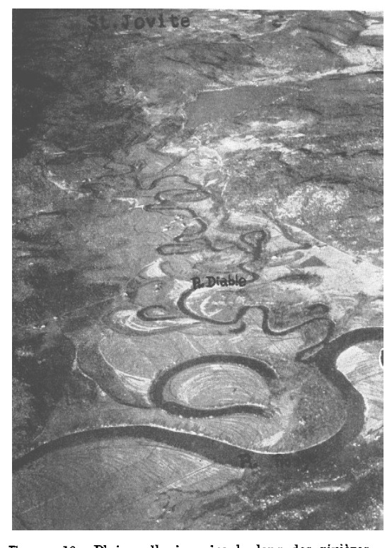
FIGURE 10.—Plaine alluvionnaire le long des rivières Rouge et du Diable.
Photo: A. R. C.
Les alluvions ont un éventail extrêmement étendu de texture, de drainage, de relief et d'âge. Certains dépôts sont profonds et leur substratum n'a que peu d'influence sur la formation et le comportement du profil. Ailleurs, les alluvions sont relativement minces et les caractéristiques du profil, en particulier l'aération et le drainage, dépendent en grande partie du relief du terrain et de la porosité du substratum.
Les sols Lesage et Mille-Îles sont formés de gravier ou de sable grossier déposé sur de l'argile ou autres substratums imperméables. Bien que ces matériaux à texture grossière soient très poreux, le drainage et l'aération ne sont généralement pas excessifs parce que la percolation est retardée par le substratum imperméable.
Des dépôts alluvionnaires profonds de sable moyen à grossier sont les roches-mères des sols excessivement drainés Morin qui se trouvent dans les vallées du plateau laurentien, alors que des sables moyens à fins déposés dans la région basse sont les roches-mères des sols excessivement drainés Upland et des sols St-Amable imparfaitement à mal drainés.
Des dépôts sableux très minces un peu loameux d'une épaisseur d'environ un pied à 2.5 pieds sur un substratum plat d'argile sont les roches-mères des sols St-Damase et Courval.
Des dépôts de sable fin à très fin ou de sable fin loameux se rencontrent dans les vallées du plateau laurentien et sont les roches-mères des sols Ivry, Guindon et Bevin. Des types similaires de dépôts sur l'argile marine sont les roches-mères des sols St-Thomas et Achigan. Des dépôts sableux sur des sols de till de la région basse sont les roches-mères des sols St-Benoît et Botreaux. Des sables fins déposés récemment par les rivières forment les roches-mères des sols Diable.
Les dépôts alluvionnaires de texture loameux sont également fréquents et variables. Dans la région élevée, ces dépôts comprennent les roches-mères des sols Piedmont, Brébeuf, Allumette et Demers. Tous ces sols alluvionnaires surmontent souvent des matériaux d'origine lacustre et de fine texture. Dans la région basse, certains dépôts « loameux » constituent les roches-mères des sols Chicot, Coteau et Soulanges. Des récents dépôts loameux le long des lits actuels des principaux cours d'eau, particulièrement la rivière du Nord, sont les roches-mères des sols Lachute.
De l'alluvion de texture limoneuse et argileuse se rencontre également et constitue la roche-mère des séries de sol Pontiac, Beaudette, Châteauguay, Macdonald et Duchêne. Cette dernière série s'est formée sur un dépôt récent le long de la rivière Duchêne.
Dépôts organiques.
Des dépôts organiques se rencontrent à travers toute la région à l'étude, mais sont plus communs dans la région basse. Les sols organiques n'ont pas été différenciés en séries de sol, mais les dépôts organiques bien décomposés sont classés comme terres noires, alors que les matériaux organiques mal décomposés sont classés parmi les tourbières.
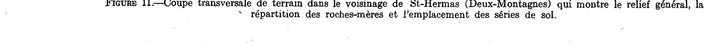
Figure 11. — Coupe transversale de terrain dans le voisinage de St-Hermas (Deux-Montagnes) qui montre le relief général, la répartition des roches-mères et l'emplacement des séries de sol.
Séries de sol :
Ri – Rideau
Lp – Laplaine
Am – St-Amable
Cv – Courval
Ct – Coteau
Au – Alluvion récente
Mk – Terre Noire
R – Ste-Rosalie
Dm – St-Damase
D – Dalhousie
Bn – St-Bernard
Ml – Mille-Îles
G – Ravin profond dans l'argile
Légende
Niveau présumé du terrain avant l'érosion par la rivière Pré-Ottawa : ---
Relief actuel du terrain : ——
Axe de la coupe transversale à travers St-Hermas : - - - -
Routes : =====
Chemins de fer : + + + + +
Cours d'eau : ~~~~~
Altitude (en pieds) au-dessus du niveau moyen de la mer : 200
Distance (en milles) de St-Hermas : 1
Canal d'érosion dans l'argile marine par la rivière Pré-Ottawa : (hachures denses)
Canaux creusés par les cours d'eau actuels : (hachures horizontales)
Affleurements rocheux : (carré noir)
Roches mères
Sable superposé à l'argile (alluvionnaire)
Argile (origine marine)
Till (origine glaciaire)
PARTIE III
CARTOGRAPHIE, MORPHOLOGIE, CLASSIFICATION ET CLÉ DES SOLS
Cartographie
Les cartes de base dont nous nous sommes servi pour déterminer les limites des sols nous ont été fournies par le ministère de la Défense nationale. Nous avons pu disposer pour l'enquête de deux types de cartes. Pour la région basse, nous avons employé des cartes à l'échelle d'un pouce au mille et des courbes de niveau de 25 pieds. Ces cartes étaient passablement précises et convenaient bien à l'enquête de reconnaissance détaillée que nous avons faite dans la région basse. Pour la plus grande partie de la région élevée, les cartes de base avaient une échelle de deux milles au pouce et des courbes de niveau de 100 pieds. Ces cartes n'étaient pas aussi exactes que celles dont nous nous sommes servi pour la région basse et elles n'ont pas permis de délimiter les sols avec autant de précision qu'avec les cartes à plus grande échelle.
Dans la région basse, les routes et les chemins de ferme permettaient un accès facile à presque toute la région et nous avons examiné les sols à des intervalles de 0.3 à 0.6 mille, selon la variabilité du terrain entre les traversées. Cela a permis de cartographier toutes les variations majeures du sol et la majorité des variations mineures avec assez de précision.
Dans la région élevée, la proportion de terrain défriché est petite et les chemins ou sentiers de ferme sont distancés et répartis inégalement. La cartographie précise des limites des sols est extrêmement difficile et fastidieuse dans de telles conditions. Dans les plus importantes régions agricoles qui se situent principalement le long des vallées de la rivière du Nord et de la rivière Rouge et qui sont desservies par un réseau convenable de routes, nous avons pu cartographier le terrain avec assez de précision, dans les grandes étendues de forêt, nous avons cartographié les sols avec moins de détails et moins de précision, d'après les données recueillies le long des routes et des sentiers de la forêt.
Morphologie
Le sol n'est pas seulement examiné en surface, mais aussi à travers le solum et dans le matériau d'origine ou le substratum. Le terme « solum » désigne la partie supérieure des matériaux géologiques non consolidés qui se sont différenciés selon les processus de formation du sol. Dans la région à l'étude, le solum est communément de 2 à 3.5 pieds d'épaisseur. La partie supérieure du solum, désignée par la lettre A, est une zone de délavage ou d'éluviation. La partie inférieure du solum est une zone d'accumulation ou d'illuviation et elle est désignée par la lettre B. La roche-mère dont le sol s'est formé s'appelle C, alors que la lettre D désigne un substratum de nature différente de C et qui a influé sur la formation du sol. Les zones de délavage et d'accumulation se présentent en couches, ou horizons plus ou moins parallèles à la surface du terrain. Tous les horizons forment ensemble le profil du sol.
Classification des sols
L'unité de base de la cartographie est la « série » de sols. Une série de sols se compose de sols particuliers qui ont les mêmes caractéristiques morphologiques et qui se sont formés d'une même roche-mère dans des conditions identiques de drainage. Les séries de sols peuvent varier en deçà de certaines limites dans la texture du solum supérieur et c'est ainsi qu'on est venu à désigner sous le nom de « type » de sols certains membres de la série. Les noms des types se rapportent à la texture: sable, terre franche sableuse, terre franche, terre franche limoneuse, terre franche argileuse et argile; ils s'ajoutent aux noms de la série pour donner le nom complet du type de sol; c'est ainsi que nous avons l'argile Ste-Rosalie et la terre franche argileuse Ste-Rosalie. Le type de sol se subdivise en variantes ou « phases ». Ces dernières se rapportent aux variations de relief, à la présence de pierres, à l'érosion ou à la profondeur du solum, qu'on peut observer à l'intérieur des types, par exemple, terre franche sableuse Chicot, phase ondulée, et terre franche sableuse Chicot, phase légèrement vallonnée.
Sur les cartes qui accompagnent le présent rapport, les séries et les types de sols sont indiqués par différentes lettres-symboles qui figurent sur la légende de la carte, comme R=argile Ste-Rosalie et Rl=terre franche argileuse Ste-Rosalie. De même, les phases qui ont trait à la topographie sont indiquées par des lettres majuscules placées sous le symbole du type de sol, avec des chiffres-symboles qui indiquent les phases ayant trait à la présence de pierres, par exemple signifie argile Ste-Rosalie, phase (topographie) unie, phahe (phahe lisez phase) exempte de pierre.
Les types de sols provenant de la même roche-mère mais dans des conditions différentes de drainage constituent un « catena » de sols. Il y a généralement un catena distinct pour chaque type de roche-mère et généralement deux séries de sols ou davantage dans chaque catena. Par exemple, les sols Rideau, Ste-Rosalie et Laplaine forment un catena parce qu'ils proviennent d'une roche-mère identique, mais ce sont trois séries différentes parce qu'ils diffèrent l'un de l'autre quant à leur drainage naturel.
La classification des sols est basée sur les caractères morphologiques et les sols qui ont une morphologie identique appartiennent au même « grand groupe de sols ». Sous ce rapport, les sols des comtés d'Argenteuil, Deux-Montagnes et Terrebonne peuvent être placés dans les grands groupes suivants de sols: podzols, bruns forestiers, gris brun podzoliques, podzols à gley, gleisoliques gris foncé, organiques minces, organiques, régosols, lithosols, alluvionnaires et sable sec. Les quatre premiers groupes se sont formés dans des conditions de drainage bonnes à imparfaites; les trois groupes suivants dans des conditions de drainage imparfaites à médiocres; les sols organiques dans des milieux marécageux; les régosols, lithosols et sols alluvionnaires se sont formés dans des conditions de drainage bonnes à pauvres; et le sable sec sous un régime de drainage excessif.
Podzols
Bien drainés. Les podzols de la région sont acides et se sont formés à partir de roches-mères acides qui ne contiennent pas de carbonates libres de calcium et de magnésium. Dans des conditions naturelles, il y a une couche superficielle mince et foncé de litière de feuille (A0) sous laquelle se trouve
56831-1-3
une couche grise délavée (A2). Le sous-sol (B2) est brun jaunâtre et parfois cimenté en un ortstein formé par l'accumulation d'humus, de fer et d'aluminium. Dans la région à l'étude, les podzols se sont formés à partir de sable, de terre franche sableuse, de terre franche et de terre franche limoneuse. Le sol Ste-Agathe est un exemple de ce groupe. Un profil schématique de podzol est illustré à la figure 12.
FIGURE 12. Profil schématique de podzol.
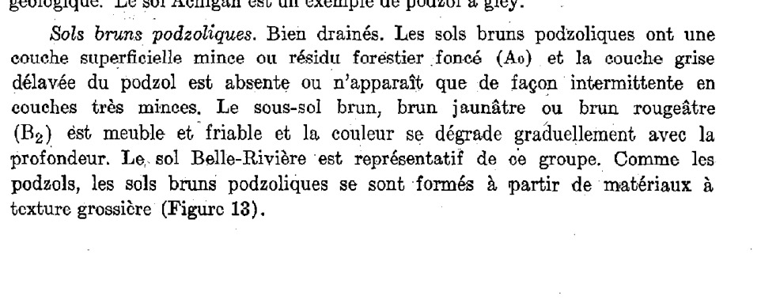
Podzols à gley.—Imparfaitement drainés. Dans les conditions naturelles, ce sol porte un coussin de matière organique mal décomposée (A0) de 4 à 10 pouces d'épaisseur, sous lequel se trouve une couche délavée gris pâle (A2) généralement marquée de points et de stries de gley. Le sous-sol (Bg) est acide, brun rougeâtre, généralement très marbré et occasionnellement cimenté en tuf (hard-pan). Dans la région à l'étude, ces sols se trouvent généralement sur des étendues unies ou ondulées de sable reposant sur l'argile imperméable ou sur l'assise géologique. Le sol Achigan est un exemple de podzol à gley.
Sols bruns podzoliques. Bien drainés. Les sols bruns podzoliques ont une couche superficielle mince ou résidu forestier foncé (A0) et la couche grise délavée du podzol est absente ou n'apparaît que de façon intermittente en couches très minces. Le sous-sol brun, brun jaunâtre ou brun rougeâtre (B2) est meuble et friable et la couleur se dégrade graduellement avec la profondeur. Le sol Belle-Rivière est représentatif de ce groupe. Comme les podzols, les sols bruns podzoliques sont formés à partir de matériaux à texture grossière (Figure 13).
12" -
24" -
36" -
← A00 Litière de feuilles.
← A0 Matière organique variant de brun très foncé à noir.
← Traces d'une couche lessivée A2 parfois présente.
← B21 Couche brune à brun rougeâtre.
← B22 Couche brun jaunâtre.
← C Roche-mère gris brun pâle.
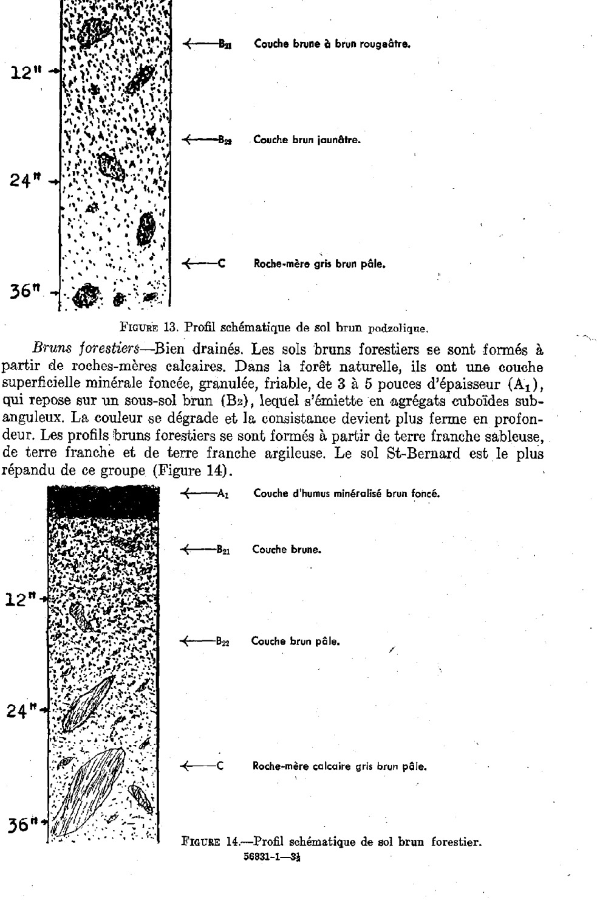
FIGURE 13. Profil schématique de sol brun podzolique.
Bruns forestiers—Bien drainés. Les sols bruns forestiers se sont formés à partir de roches-mères calcaires. Dans la forêt naturelle, ils ont une couche superficielle minérale foncée, granulée, friable, de 3 à 5 pouces d'épaisseur (A1), qui repose sur un sous-sol brun (B2), lequel s'émiette en agrégats cuboïdes sub-anguleux. La couche se dégrade et la consistance devient plus ferme en profondeur. Les profils bruns forestiers se sont formés à partir de terre franche sableuse, de terre franche et de terre franche argileuse. Le sol St-Bernard est le plus répandu de ce groupe (Figure 14).
12" -
24" -
36" -
← A1 Couche d'humus minéralisé brun foncé.
← B21 Couche brune.
← B22 Couche brun pâle.
← C Roche-mère calcaire gris brun pâle.
FIGURE 14.—Profil schématique de sol brun forestier.
56831-1-3½
Gris bruns podzoliques.
— Bien drainés. Les sols gris bruns podzoliques ont sous la couche superficielle d'humus minéralisée, un horizon délavé gris brun dont l'épaisseur varie de 12 à 36 pouces. Cette couche repose sur un horizon brun foncé à fine texture et d'une épaisseur de 2 à 7 pouces, horizon qui contient plus d'argile que les horizons au-dessus. La roche-mère est calcaire. Les profils de sols Ste-Philomène les plus fréquemment rencontrés appartiennent à ce groupe (Figure 15).
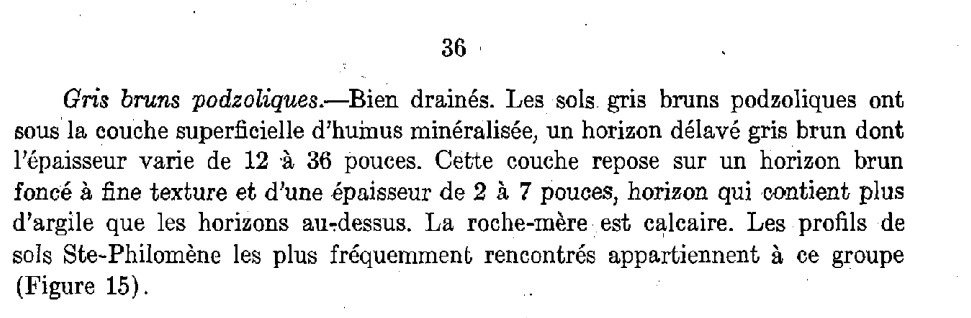
FIGURE 15. — Profil schématique de sol gris brun podzolique.
Gleisoliques gris foncé.
Mal drainés. Les sols gleisoliques gris foncé ont une couche superficielle foncée, friable et granulaire (A1) d'environ 4 à 5 pouces d'épaisseur reposant sur un horizon plutôt mal déterminé de couleur pâle irrégulière et sur un horizon gris brunâtre moucheté de rouille, peu différencié de la roche-mère. L'absence de zones éluviatrices et illuviales bien marquées caractérise ces sols mal drainés qui sont formés à partir de roches-mères d'argile, de terre franche argileuse et de terre franche limoneuse. Les sols Ste-Rosalie appartiennent à ce groupe.
Sols organiques minces.
(ou Gleisols) Mal drainés. Les sols organiques peu profonds ont une couche superficielle brun très foncé à noire riche en matière organique et d'une épaisseur de 4 à 12 pouces. Le sous-sol est gris bleuâtre et généralement moucheté de petits points et de stries de rouille. Dans les rapports antérieurs, ce groupe de sols s'appelait « semi-tourbeux ».
Organiques.
Drainage stagnant. Les sols organiques consistent en matière organique accumulée à une profondeur de 5 pieds ou davantage. Les sols bien décomposés s'appellent « terres noires », alors que les sols bruts, mal décomposés, s'appellent « tourbières ». Ces sols occupent fréquemment les fonds d'anciens lacs.
Régosols. Drainage bon à mauvais. Les régosols sont des sols jeunes, non développés surtout à cause de la haute teneur en argile et de l'imperméabilité des matériaux. Les argiles érodées dans les sols Rideau et Wendover sont des régosols.
Lithosols. Drainage bon à mauvais. Les lithosols sont des sols jeunes et non développés. Ils consistent largement en fragments de roches mal décomposés. Les lithosols comprennent les sols Farmington et Larose.
Alluvions. (Alluvionnaires). Bon à mauvais drainage. Les sols alluvionnaires sont jeunes et se forment sur de l'alluvium récent. Ils se rencontrent tant dans la région haute que la région basse et occupent les rives des cours d'eau actuels sur une grande variété de matériaux de diverses textures. Les sols Diable et Lachute sont des exemples de ce groupe.
Clé de classification
La classification des sols en séries et en types est présentée dans la clé suivante. Dans chaque section, la principale différenciation intéresse les dépôts géologiques: tills, argile marine, alluvium, etc. Puis, chaque type de dépôt géologique est différencié selon les diverses sortes de roches-mères. Sous chaque roche-mère sont énumérés les différents membres du catena, les séries. Enfin, les classes de drainage donnent aux séries la place qui leur convient dans la clé. Les noms se rapportant à la texture et qui indiquent les types sont également donnés parce qu'il y a souvent plus d'un type par série. Les grands groupes de sols sont indiqués par des lettres majuscules après chaque classe de drainage du sol.
Clé des sols des comtés d'Argenteuil, Deux-Montagnes et Terrebonne
1. SOLS DE LA RÉGION BASSE
A. Sols sur till (Symbole de la carte)
a) Roche-mère dérivée principalement de calcaire Trenton
h) Matériel de nature limoneuse (moins de 15 pouces d'épaisseur) sur argile
Bien drainés (P-BP)
Terre franche limoneuse à terre franche limono-argileuse Pontiac …… (Pe)
3. TYPES DE TERRAINS DIVERS
a) Dépôts organiques peu décomposés
Très mal drainés (O)
Tourbe ........................................................................................ (Pt)
b) Dépôts organiques bien décomposés
Mal drainés (O)
Terre noire mince (moins de 2 pieds d'épaisseur) .............................. (Mk-a)
Terre noire profonde (plus de 2 pieds d'épaisseur) ................................ (Mk)
c) Terrains humides non différenciés
Très mal drainés
Marécages ............................................................................................
Symboles désignant les grands groupes de sols dans la clé de classification ou sur la légende de la carte des sols.
Les superficies et les pourcentages de terrain occupé par les différentes séries de sol dans chacun des trois comtés et dans la région toute entière sont présentés au Tableau 11 de l'Appendice.
PARTIE IV
DESCRIPTIONS DES SOLS
Sols de la région basse
Sols sur till
SÉRIE DORVAL (1,548 acres)
Les sols Dorval sur till se rencontrent le long de la rivière Mille-Îles dans le comté de Terrebonne à environ 75 pieds d'altitude. La topographie varie de légèrement ondulée à légèrement vallonnée et l'on voit de gros boulders et beaucoup de petites pierres anguleuses. Sur les terres non défrichées, la végétation consiste principalement en ormes et en érables. Le till provient du calcaire Trenton et fait violemment effervescence sous l'action de l'acide dilué. En général, le till a plus de 6 pieds de profondeur, mais dans certaines régions l'assise rocheuse est plus près de la surface.
Le drainage externe varie de rapide à modéré, mais la percolation de l'eau à travers le solum est plutôt lente à cause de la forte teneur du sous-sol en argile. La capacité de rétention d'eau est élevée.
La texture de la surface varie quelque peu, mais elle consiste généralement en une terre franche argilo-graveleuse et tous les sols de la série sont cartographiés sous cette dénomination de texture (Do). La description suivante de profil représente un sol brun forestier.
Horizon
Profondeur en pouces
Ac
0-6
Terre franche argileuse ou argile brun très foncé; structure moyennement granulaire; assez friable; contenant un peu de pierres et beaucoup de fragments de gravier; fait violemment effervescence mais peu longtemps; pH 7.8.
B21
6-13
Terre franche argileuse ou argile brun grisâtre très foncé à brun foncé; structure granuleuse fine; passablement ferme; contient un peu de pierres et de gravier; effervescence violente de peu de durée; pH 7.8.
B22
13-26
Terre franche argileuse d'un brun grisâtre foncé; mélange de teintes brun grisâtre foncé et jauneâtre formant des marbrures peu contrastantes; structure très ferme à compacte; présence de petits fragments de graviers anguleux; effervescence violente mais de peu de durée; pH 7.8.
C
Till de terre franche argilo-graveleuse; marbrures assez prononcées dont la couleur va du brun grisâtre au brun jaunâtre; de très ferme à compact; massif; effervescence violente; pH 7.9.
La roche-mère contient environ 30 p. 100 de gravier et le sol lui-même à peu près 37 p. 100 de sable, 37 p. 100 de limon et 26 p. 100 d'argile.
Agriculture
Les sols Dorval conviennent bien à la culture mixte et spécialement à l'industrie laitière. A cause de sa haute teneur en chaux, ce sol se prête bien aux légumineuses comme le trèfle et la luzerne. Certaines luzernières de 15 ans ont
produit de 2½ à 4 tonnes de foin par année. A cause de la finesse de leur texture, les sols Dorval ne se prêtent pas aussi bien à la culture maraîchère que les sols Saint-Bernard. Les céréales et le maïs donnent de bons rendements. Lorsque les rotations de culture comportent de longues périodes en légumineuses, le sol ne demande que peu de fertilisation. Une légère application de fumier et d'engrais chimique complet une fois dans la rotation suffit généralement à produire de bonnes récoltes.
Le drainage naturel est bon sur le terrain ondulé, mais il y a, au pied de plusieurs pentes, des endroits humides excessivement difficiles à drainer. Le sol de surface et le sous sol deviennent durs lorsqu'ils sont secs, et pour cette raison la terre est un peu difficile à travailler. La présence de nombreuses petites pierres cause des ennuis dans les cultures sarclées.
SÉRIE TERREBONNE (580 acres)
Le sol Terrebonne est la contrepartie mal drainée du sol Dorval. Il se trouve exclusivement au voisinage de St-Maurice et de Terrebonne, sur terrains presque unis à légèrement déprimés, à des altitudes de 50 à 100 pieds au-dessus du niveau de la mer.
Occasionnellement, de grosses pierres sont présentes sur le sol qui est formé sur till dérivé de la pierre à chaux Trenton riche en calcium, mais il se trouve aussi de nombreux fragments de galettes pierreuses à la surface et dans tout le sol. Le drainage externe et la percolation de l'eau à travers le sol sont lents. La haute teneur en matière organique de la couche superficielle et la forte teneur en argile du solum contribuent à conférer au sol sa grande capacité de retention d'eau et d'éléments nutritifs. L'érosion par l'eau n'est pas un problème.
Seul le type terre franche argileuse (T) est cartographié; il appartient au grand groupe de sols gleysoliques gris foncé. Voici sa description.
Horizon
Profondeur en pouces
Ac
0-7
Terre franche argileuse avec grains de sable ou argile gris très foncé à brun grisâtre très foncé; structure modérément granulaire, souvent en mottes; de consistance un peu ferme lorsqu'elle est humide, dure lorsqu'elle est sèche et plus ou moins plastique et collante lorsqu'elle est trempe; contient quelques pierres anguleuses; effervescence; pH 7.5 à 7.7.
G
7-18
Terre franche argileuse ou argile brun grisâtre foncé ou très foncé; mouchetures à contraste moyen de brun grisâtre foncé et de brun jaunâtre foncé; structure moyenne granuleuse; modérément plastique et collante; contient quelques pierres anguleuses et quelques fragments de pierres; ferme; effervescence violente et de courte durée; pH 7.8.
C
Till de terre franche argilo-graveleuse, brun grisâtre et brun jaunâtre foncé; légèrement tachetée; contient des fragments de pierres calcaires anguleuses; très ferme à compacte; effervescence violente; pH 7.9.
Agriculture
Les sols Terrebonne conviennent à l'industrie laitière et à la culture mixte lorsqu'ils sont drainés. Ils se prêtent mal aux cultures maraîchères de primeurs, à la culture des pommes de terre ou aux vergers mais ils sont parfois employés pour les cultures de conserves comme les pois verts, les haricots verts et le maïs sucré, les tomates, les choux et les légumes feuillus. Il est possible
56831-1-4A
d'obtenir de bonnes récoltes de luzerne lorsque ces sols sont drainés, mais il ne faut pas s'attendre que les luzernières durent aussi longtemps que sur les sols Dorval. Ces sols donnent de bons rendements de maïs et de racines d'ensilage. Les rutabagas sont sujets à des carence de bore. Cette carence produit le cœur brun et peut se corriger par l'application de borax.
SÉRIE LAVAL (845 acres)
Les sols Laval se rencontrent exclusivement près de Rosemere dans le comté de Terrebonne sur des terrains fortement ondulés à légèrement vallonnés et modérément pierreux. La roche-mère est un till de terre franche graveleuse provenant principalement de calcaire Chazy. L'égouttement naturel est bon tant en profondeur qu'à la surface. Le solum est poreux et l'érosion par l'eau varie de légère à modérée selon le genre de culture. Il n'y a que de petites étendues boisées où poussent l'érable à sucre et le hêtre avec quelques autres bois francs. Le profil de sol Laval (Lv) décrit ci-après se rapporte à un sol du groupe brun forestier dans son état primitif.
Horizon
Profondeur en pouces
A1
0-3
Terre franche argileuse granuleuse et friable brun foncé; contient un peu de gravier et de pierres; quelques petites particules de sol font rapidement effervescence; pH 6.5
B1
3-6
Terre franche argileuse brun rougeâtre foncé; structure granuleuse avec petits agrégats nuciformes; quelques petites particules de sol font rapidement effervescence; pH 6.0.
Terre franche argileuse brun à brun jaunâtre foncé; plus graveleuse que l'horizon ci-dessus; structure cuboïde sub-angulaire peu définie; assez ferme; effervescence rapide et forte; pH 7.6.
B3
24-36
Terre franche argilo-graveleuse brun à brun jaunâtre; till désagrégé; structure nuciforme; très ferme; effervescence rapide et forte; pH 7.8.
C
Till de terre franche graveleuse brun jaunâtre; de très ferme à compact; effervescence rapide et très forte; pH 7.9.
On n'a cartographié qu'un type de la série Laval, la terre franche argileuse. La couche arable est de couleur brun foncé et de réaction neutre. Certaines particules du solum font une effervescence rapide mais de peu de durée.
Agriculture
Les sols Laval sont fertiles, mais passablement pierreux. Dans les champs cultivés, on a enlevé à peu près toutes les pierres pour en faire des clôtures. Ces sols conviennent à des productions variées, dont les cultures maraîchères, la production de grains, de foin et de fruits de verger. Ils sont particulièrement propices à la luzerne et autres légumineuses. Une bonne partie de la terre en culture est affectée à la production maraîchère. Les rendements des différentes cultures sont semblables à ceux qu'on obtient sur la terre franche St-Bernard.
SÉRIE ST-BERNARD (24,287 acres)
Les sols St-Bernard sont les plus répandus des sols sur till de la région basse. La terre, en général, est légèrement ondulée, mais la topographie peut varier d'ondulée à vallonnée. Ces sols ont été cartographiés à des altitudes variant de 100 à 200 pieds au-dessus du niveau de la mer.
Les sols St-Bernard étaient à l'origine recouverts de nombreuses pierres et blocs erratiques. Ils se sont formés sur un till provenant principalement de roches dolomitiques Beekmantown. On peut déceler des carbonates libres dans la roche-mère, mais l'effervescence produite au contact de l'acide dilué débute lentement et dure longtemps. Ce comportement forme un contraste frappant avec l'effervescence violente et rapide notée dans le cas de la roche-mère des sols Dorval, Terrebonne et Laval.
Les sols St-Bernard ont un bon égouttement naturel et peuvent retenir une quantité modérée d'eau. La pluie s'infiltre rapidement et il n'y a que peu de risque d'érosion si ce n'est sur les pentes raides ou lorsque le labour est effectué dans le sens des pentes. L'érosion cause une accumulation de graviers et de cailloux à la partie supérieure de la pente, alors que la matière organique et les fines particules minérales s'entassent au pied de la pente.
La végétation arborescente naturelle consiste en érables à sucre, hêtres et bouleaux jaunes. Les thuyas croissent souvent à découvert près des lots boisés ou dans les très vieux pâturages.
Les sols St-Bernard consistent principalement en terre franche, mais on y trouve aussi de la terre franche sableuse fine et quelquefois des terres franches argileuses. Nous n'avons pas tenté de montrer sur la carte ces différences et tous les sols St-Bernard sont classés comme terre franche.
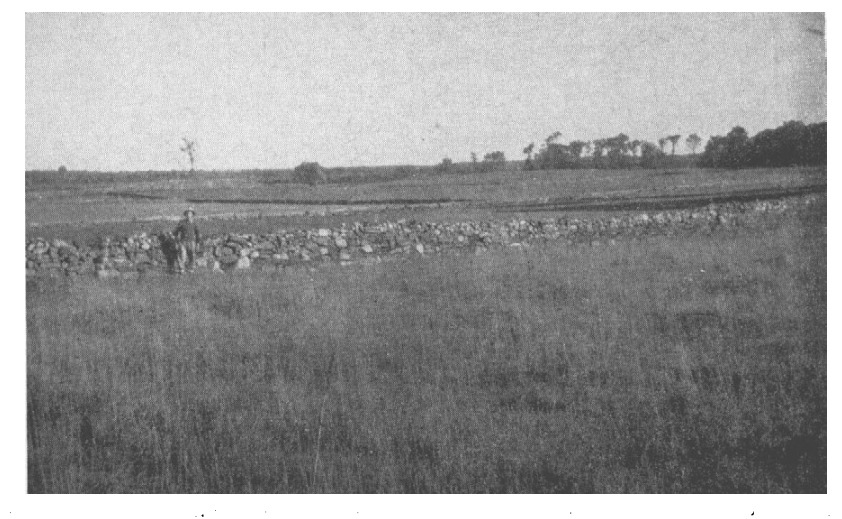
FIGURE 16.—Les clôtures de pierres sont communes sur les sols St-Bernard de till à topographie ondulée ou légèrement vallonnée.
La description suivante représente une terre franche St-Bernard (Bn) du groupe des sols bruns forestiers, telle qu'elle apparaît à l'état d'humidité normale en terrain cultivé.
HorizonProfondeur en pouces
Ae0-6Terre franche brun très foncé, contenant du gravier et des cailloux; structure granuleuse; friable; pH 6.7-7.4.
B26-12Terre franche brun rougeâtre foncé contenant du gravier; quelques pierres; très friable; structure nuciforme fine et structure granuleuse; couleur uniforme; pH 7.5.
B312-18Terre franche graveleuse brun foncé à brun; contient quelques pierres anguleuses; consistance plus ferme que celle de l'horizon ci-dessus, mais encore friable; structure nuciforme; carbonates libres parfois présents mais pas de façon régulière; pH 7.5 à 7.7.
CTill de terre franche graveleuse variant de brun à brun jaunâtre foncé; mouchetures discrètes produites surtout par la désagrégation des pierres et conférant au tout une couleur moins uniforme que dans le cas de l'horizon ci-dessus; carbonates libres; l'effervescence prend du temps à se produire, mais elle s'effectue graduellement et dure longtemps; pH 7.8.
Les carbonates libres se trouvent généralement à une profondeur d'environ 18 pouces de la surface. Toutefois, la chaux libre peut se rencontrer à des profondeurs variant de 15 à 26 pouces. En général, dans les profils ordinaires qui n'ont pas subi d'érosion, les carbonates libres sont plus près de la surface au bas des pentes. Dans le cas des sols sableux, la chaux se tient généralement à un niveau plus bas que dans les sols à texture fine.
La terre franche mince St-Bernard (Bn-a) ne diffère qu'en ce que l'horizon C non désagrégé peut être absent et qu'alors le solum repose directement sur l'assise calcaire.
Dans la région d'Oka, les sols St-Bernard qui se rencontrent sur des terrains légèrement vallonnés ou au bas des longues pentes sont insuffisamment drainés comme l'indiquent les faibles tachetures dans le sous-sol. Il peut y avoir dans le profil jusqu'à 30 p. 100 de gravier ou davantage.
Les sols St-Bernard sont souvent associés aux sols Dalhousie, Châteauguay et Chicot. A cause de l'arrangement complexe des limites de ces sols, il n'est pas possible de les cartographier tous séparément. C'est le long de la rivière Mille-Îles, de St-Eustache à Terrebonne, que cette complexité est le plus prononcée.
Agriculture
Les sols St-Bernard sont adaptés à une grande variété de cultures. Les étendues les plus pierreuses sont souvent gardées comme lots boisés, principalement comme érablière d'où sont tirés le sucre d'érable et le bois. Cependant, la majorité des sols St-Bernard ont été défrichés et épierrés. Ils se prêtent particulièrement bien aux cultures maraîchères de primeurs et sont employés à cet effet, spécialement dans les régions de St-Eustache et de Ste-Thérèse. Le sol convient aussi naturellement à la croissance de la luzerne. Le maïs d'ensilage produit de bonnes récoltes. Les terrains consacrés à la pomme de terre sont généralement fumés et fertilisés en vue d'une récolte précoce pour consommation immédiate, de façon que la gale ne constitue pas un grave problème. Il s'est planté plusieurs vergers familiaux et quelques petits vergers commerciaux. On a signalé des
carences de bore qui causent le cœur liégeux des pommes et le cœur brun des rutabagas, mais cela peut se corriger par des applications de borax.
Les sols St-Bernard peuvent être préparés pour les semis beaucoup plus tôt que la majorité des sols de la région. Les cultures ensemencées tôt ont plus de chances de succès car elles peuvent bénéficier des amples provisions d'humidité généralement présentes dans le sol au début de la saison de végétation. La lutte contre l'érosion par l'eau compte parmi les bonnes méthodes de gestion des sols St-Bernard. Pour combattre le ruissellement, il faut établir en contre-pente les cultures sarclées, les rigoles et les fossés. Dans le passé, on a généralement négligé de prendre les mesures propres à combattre l'érosion; s'il n'y a pas eu plus de dommages, c'est grâce à la perméabilité du solum, au peu de longueur des pentes et à la proportion relativement faible de cultures sarclées dans la rotation. L'érosion peut, toutefois, devenir grave dans les régions où se pratique la culture intensive de légumes.
Série Oka (2,009 acres)
Les sols Oka ont été cartographiés dans le voisinage d'Oka et de La Trappe, comté des Deux-Montagnes, où le terrain varie de légèrement vallonné à vallonné. Ces sols sont situés à une altitude de 100 à 400 pieds au-dessus du niveau moyen de la mer. Ils se sont formés sur des matériaux calcaires et graveleux apparemment dérivés de tills locaux et ils ont été plus ou moins bien assortis sous l'action des vagues. Le degré d'assortiment varie depuis un gravier de terre franche bien déterminé jusqu'à un matériel ressemblant à du till et mal assorti, si ce n'est quelques couches graveleuses occasionnelles. Les sols de cette série renferment plus ou moins de coquillages.
Le drainage externe est rapide à modérément rapide; le drainage interne est modéré. La végétation arborescente naturelle consiste principalement en érables et en hêtres avec quelques thuyas.
Les sols Oka se présentent en association complexe avec les sols St-Bernard, et parfois il n'est pas possible de les distinguer à l'échelle de la carte. Les profils des sols Oka varient quelque peu. Certains profils, qui contiennent une forte proportion de gravier et de coquillages, présentent dans une certaine mesure les caractéristiques des sols bruns podzoliques. D'autres profils, comme celui que nous décrivons ci-dessous, sont caractéristiques du groupe de sols bruns forestiers et sont dérivés de matériel ressemblant à du till.
Horizon
Profondeur en pouces
Description
Ac
0-6
Terre franche graveleuse gris jaunâtre à gris olive; till modifié; petites pierres anguleuses, pH 7.6.
B21
6-12
Terre franche sableuse fine brun foncé; gravier et coquillages présents; granules friables; pierres anguleuses; effervescence, pH 7.8.
Terre franche graveleuse gris jaunâtre à gris olive; till modifié; petites pierres; mouchetures à peine visibles; carbonates libres; pH 8.2.
Il n'y a pas de changement brusque ou net de couleur entre les différents horizons. On voit souvent dans ce sol des particules de mica, spécialement dans le matériel non désagrégé. Des fragments de pierre sont distribués dans tout le
sol et consistent principalement en pierre à chaux dolomitique ou en dolomie qui se désagrège et se transforme en un résidu poreux brun foncé ou couleur du tan. Parmi les autres pierres se trouvent la quartzite, le grès et le granit. On peut trouver n'importe où dans le sol et en diverses quantités du gravier et des coquillages.
La profondeur à laquelle le sol fait effervescence sous l'action de l'acide peut varier de quelques pouces à environ 36 pouces, selon la présence ou l'absence de coquillages et le rapport entre les roches calcaires et les roches non calcaires.
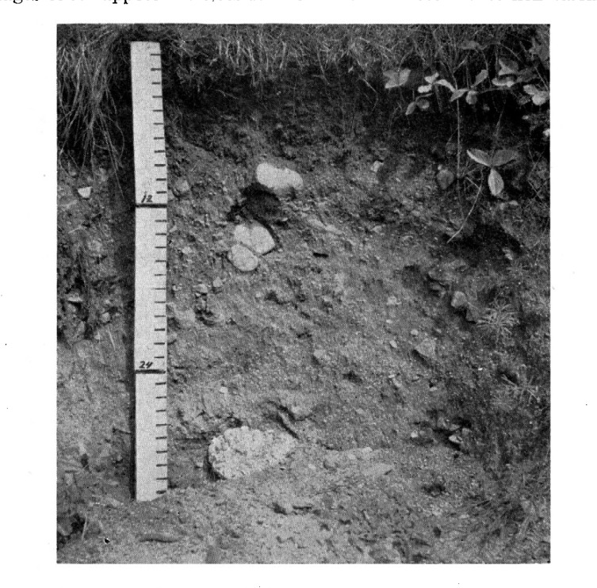
FIGURE 17.—Dans ce profil de terre franche Oka, les coquillages sont concentrés en général à une profondeur de 22 à 30 pouces.
Des variations dans l'intensité des tachetures peuvent s'observer à la partie inférieure du profil. Il n'y a pas ou à peu près pas de tachetures dans les sols situés sur terrains vallonnés, alors qu'on en voit souvent dans l'horizon C et à la partie inférieure de l'horizon B dans les régions légèrement vallonnées au pied des longues pentes.
Agriculture
Les sols Oka sont excellents pour la culture mixte, l'industrie laitière et le jardinage. Au cours des quelques dernières décennies, ils ont été de plus en plus utilisés pour des vergers. On a enlevé quelques boulders avant la mise en culture, mais ces boulders ne sont pas en général assez nombreux pour qu'il soit très dispendieux de les enlever. De fait, presque tous ces sols sont maintenant en culture. La luzerne et le trèfle croissent bien et les céréales donnent des rendements passables. Les pâturages portent généralement une végétation convenable.
de graminées durant toute la saison. Les pommiers viennent bien, mais les fruits sont parfois sujets au cœur liégeux. Le drainage souterrain est communément pratiqué dans les vergers établis sur les sols Oka.
La fertilité des sols Oka doit être maintenue ou augmentée par l'emploi de matière organique sous forme de fumier, de résidus de plantes ou d'engrais verts. L'addition de matière organique améliore le sol en augmentant ses réserves d'azote et sa capacité de rétention d'eau et d'éléments nutritifs. Ces sols répondent bien aux applications d'engrais chimiques.
SÉRIE FARMINGTON (2,105 acres)
Les sols Farmington se présentent comme des lambeaux épars dans la région basse. Le terrain est le plus souvent légèrement ondulé et son altitude varie entre 75 et 350 pieds au-dessus du niveau de la mer.
Le sol s'est formé principalement d'une mince couche de till, plus ou moins désagrégée dans toute sa profondeur, et il peut contenir des carbonates libres. L'assise calcaire ou dolomitique se trouve généralement à moins de 15 pouces de la surface, mais elle peut affleurer occasionnellement. Les pierres ne sont pas nombreuses. Le drainage naturel des sols Farmington est un peu excessif; le solum mince ne peut garder que des quantités limitées d'eau, généralement insuffisantes à une croissance optimum durant la saison de végétation. Il se trouve cependant des endroits où l'eau se maintient sans échappée sur le roc, de manière à former de petits marécages. Lorsque l'assise rocheuse est complètement recouverte d'environ dix pouces de sol, le danger d'érosion nocive n'est pas aussi grand que lorsque le roc, est partiellement exposé. L'eau qui ruisselle sur les affleurements rocheux tend à élargir les endroits dénudés si les particules du sol ne sont pas retenues ensemble par les racines. Les érables à sucre prédominent dans plusieurs étendues en forêt vierge, mais les thuyas sont également communs dans les pâturages non cultivés.
La majorité des sols Farmington sont représentants du groupe des sols bruns forestiers. Mais lorsque le sol qui recouvre l'assise rocheuse est très mince, il ressemble aux lithosols. Deux types de sols se présentent, la terre franche sableuse ou terre franche (F) et la terre franche argileuse schisteuse (Fh). La terre franche a une surface granuleuse brun foncé à réaction presque neutre et elle repose sur un sous-sol ou une assise rocheuse brun pâle. La terre franche argileuse schisteuse, qui se rencontre exclusivement près de Grenville, consiste en un sol de surface brun grisâtre foncé, granuleux, à réaction presque neutre, reposant sur une assise rocheuse partiellement désagrégée qui forme facilement des galets. Les affleurements rocheux sont fréquents et l'on trouve dans le sol plusieurs fragments anguleux de pierre.
Sur la carte des sols du comté de Terrebonne, une grande étendue au sud de Ste-Sophie a été par erreur rangée dans la série St-Faustin (Ft.). Cette région aurait dû être présentée comme appartenant à la série Farmington (Fh).
Agriculture
Les sols Farmington, dans leur ensemble, ne se prêtent pas à la culture et sont utilisés en grande partie comme pâturages. Les herbes font belle figure au printemps, mais durant l'été certaines étendues sont brûlées par la sécheresse. La luzerne vient parfois assez bien sur ces sols; apparemment, les racines pénètrent profondément par les fissures verticales de l'assise calcaire et atteignent
ainsi la zone d'humidité qui demeure inaccessible aux plantes à racines superficielles. Les sols Farmington se réchauffent rapidement au printemps et les cultures précoces y ont plus de chance de succès que les cultures tardives.
SÉRIE BELLE-RIVIÈRE (17,366 acres)
Les plus grandes étendues en sols Belle-Rivière sont situées entre St-Placide et Ste-Monique et entre Grenville et St-Philippe. Ces sols se présentent sur des arêtes légèrement vallonnées à des altitudes variant entre 200 et 350 pieds. Le terrain a un bon drainage naturel grâce à la perméabilité du solum et au ruissellement rapide de l'excédent d'eau. Il peut y avoir érosion par plaques sur les pentes raides non protégées. Le solum a une capacité moyenne de rétention d'eau et repose sur un till dérivé principalement d'un mélange de grès Potsdam et de dolomic Beckmantown, avec des instrusions occasionnelles et secondaires de roches précambriennes ignées.
Les sols Belle-Rivière sont plus pierreux et plus acides que les sols St-Bernard mais moins pierreux et moins acides que les sols Perrot. Les carbonates libres ne peuvent être décelés dans les sols Belle-Rivière en deçà de 40 pouces de la surface. Les sols Belle-Rivière ont un solum beaucoup plus profond que les sols Perrot.
Sur les sols Belle-Rivière encore en forêt croissent l'érable à sucre, le hêtre et le bouleau jaune. Suit une description générale de terre franche sableuse Belle-Rivière (Br), seul type cartographié. Il représente le groupe de sols bruns podzoliques.
Horizon
Profondeur en pouces
Description
Ae
4-6
Terre franche sableuse granuleuse fine, douce au toucher, de couleur brun foncé; présence de pierres; pH 5.5-5.7.
B21
6-10
Terre franche sableuse brune à brun jaunâtre (parfois brun rougeâtre peu prononcé); quantité variable de gravier; très friable; pH 5.6-6.1.
B22
20-27
Terre franche sableuse brun pâle à terre franche sablo-graveleuse; taches brun rougeâtre foncé produites par la désagrégation sur place de grès; structure granuleuse fine; friable et perméable; pH 6.1-6.3.
C
Terre franche brun grisâtre à terre franche sablo-graveleuse; généralement ferme et légèrement perméable; pH 6.4-7.0.
Généralement, le till d'une épaisseur de quatre pieds ou davantage est superposé sur l'assise rocheuse, mais parfois celle-ci affleure dans la région montagneuse d'Oka.
Agriculture
La surabondance de pierres entrave la culture et la majeure partie du terrain défriché est en pâturage non-amélioré. La petite proportion de terre cultivée dont les pierres ont été enlevées est consacrée principalement aux grandes cultures et aux vergers; le jardinage se pratique à un échelon très limité. On n'applique généralement pas d'engrais chimique sur les grandes cultures mais on incorpore du fumier aux cultures sarclées et l'on en met en couverture sur les prairies. Entre autres bonnes méthodes de gestion des sols Belle-Rivière, on recommande le maintien ou l'augmentation de la matière organique par l'application de fumier et d'engrais chimiques et la répression de l'érosion.
SÉRIE ST-VINCENT (4,670 acres)
Les sols St-Vincent se présentent en association caténaire avec les sols Belle-Rivière. La terre, souvent excessivement pierreuse, est en pente douce (pentes de 4 à 6 p. 100) ou légèrement affaissée. Les sols St-Vincent sont situés à des altitudes variant entre 125 et 325 pieds au-dessus du niveau de la mer. Le drainage naturel varie d'imparfait à quelque peu défectueux, à cause de l'excès d'eau venant des endroits plus élevés, qui filtre à travers le solum.
Les sols St-Vincent sont légèrement acides et sont dérivés de grès et de quantités variables de calcaires qui peuvent produire une réaction passablement élevée et occasionnellement de l'effervescence à des profondeurs de quatre pieds ou davantage. Les arbres qu'on observe sur les sols St-Vincent sont l'érable rouge, le frêne, l'épinette, le thuya et le mélèze.
Suit une description générale d'un sol St-Vincent qui appartient au groupe de sols gleisoliques gris foncé.
Horizon
Profondeur en pouces
Description
Ae
5-7
Terre franche sableuse fine brun très foncé; forte en matière organique; très friable; structure granuleuse fine; pH 6.0-6.6.
Bg1
2-4
Terre franche sableuse fine brun foncé à brun rougeâtre; généralement un peu mouchetée; contenant des pierres et du gravier.
Terre franche sableuse brun pâle à brun grisâtre à till de terre franche sablo-graveleuse; très ferme à compacte; pH 6.6-7.2.
Agriculture
Seulement des étendues limitées de sols St-Vincent sont cultivées. Le nombre excessif de pierres et le manque de drainage naturel sont des obstacles sérieux à l'agriculture. Il serait facile d'améliorer le drainage de façon à pouvoir produire avec succès la majorité des grandes cultures, mais l'enlèvement des pierres est dispendieux. Le drainage pourrait se faire au moyen de drains souterrains ou de fossés profonds installés en contre-pente pour empêcher l'infiltration des eaux venant des terres hautes. La plus grande partie du terrain défriché sert de pâturages non-améliorés, et quelques pâturages mal entretenus sont envahis par la spirée cotonneuse (Spiraea tomentosa).
SÉRIE ARGENTEUIL (3,726 acres)
Les sols Argenteuil sont situés au nord de la grande route entre Saint-Philippe et Grenville. La terre est légèrement vallonnée et recouverte de nombreux gros boulders. Le drainage naturel est un peu excessif à cause de la nature poreuse du solum et du relief du terrain. La plus grande partie de la terre est recouverte d'herbes ou d'arbres et le risque d'érosion est léger. La capacité de rétention d'eau du solum est plutôt faible. Le solum est graveleux et acide et il repose sur un till compact dérivé de rocs granitiques précambriens. La végétation arborescente naturelle consiste en érables à sucre, en hêtres et en bouleau jaunes.
La terre franche sableuse (Ar) est le seul type cartographié dans la série Argenteuil; voici sa description globale :
Horizon
Profondeur en pouces
Ae
5-6
Terre franche sableuse légère ou terre franche sablo-graveleuse brun foncé à brun rougeâtre foncé; grains simples et fins agrégats granulés; très friable; pH 5.5-5.8.
A2
Des restes de la couche délavée s'observent parfois dans les champs cultivés.
B21
4-14
Terre franche sablo-graveleuse brun rougeâtre à terre franche sableuse légère; présence de substances friables et lâches sans structure nettement définie. Cet horizon est généralement plus graveleux que celui des horizons supérieur et inférieur; pH 5.6-6.0.
B22
8-20
Terre franche sableuse à légèrement graveleuse brun rougeâtre peu prononcé à brun jaunâtre avec taches de brun rougeâtre ou brun jaunâtre foncé; friable à lâche; pH 5.6-6.0.
C
Till de terre franche sableuse gris brunâtre; fragments de pierres consistant principalement en granit avec un peu de grès; compacte; pH 6.0-6.4.
Le solum est très perméable, mais la roche-mère est massive et imperméable. Par conséquent, il y a démarcation nette entre le solum et la roche-mère. La profondeur de la roche-mère est variable, mais elle mesure en moyenne 30 pouces.
Les sols dominants sont les podzols peu évolués, mais on trouve tous les types intermédiaires entre les sols bruns podzoliques et les podzols.
Agriculture
Environ 50 p. 100 des sols Argenteuil sont défrichés et la majorité des régions défrichées servent de pâturages. Il se cultive un peu de foin et de céréales dans les quelques champs en culture. Les rendements semblent inférieurs à ce qu'on pourrait attendre de pareil sol, mais les faibles rendements de céréales et de foin peuvent s'expliquer en partie par l'aridité du sol de surface. Les plantes à racines profondes devraient réussir mieux. Les sols Argenteuil atteindraient probablement un niveau passable de fertilité par l'emploi de chaux, de fumier et d'engrais chimiques complets, mais leur mise en pleine valeur serait entravée par la présence de nombreux gros boulders.
SÉRIE MARELAN (966 acres)
Les sols Marelan sont situés en bas de l'escarpement laurentien au nord de Grenville. Le terrain est déprimé ou légèrement ondulé, avec certaines micro-dépressions, et les sols sont situés à des altitudes variant entre 275 et 350 pieds au-dessus du niveau de la mer. De gros boulders granitiques sont généralement si nombreux que la culture est impossible et leur enlèvement impraticable.
Les sols Marelan constituent l'homologue caténaire du sol plutôt mal drainé Argenteuil, les deux sols étant formés sur la même sorte de till sableux compact.
dérivé principalement des rocs granitiques précambriens. La lenteur du drainage est due en partie à la compacité de la roche-mère qui arrête la percolation verticale à environ deux pieds de la surface et en partie au fait que la pente du sol n'est pas suffisante pour permettre l'écoulement de l'eau qui sans cela pourrait s'écouler latéralement. Par conséquent, le terrain peut être temporairement recouvert d'eau après des pluies prolongées. La capacité de retention d'eau est passable dans la couche organique superficielle, mais très faible dans le sous-sol. Le danger d'érosion nocive est léger. On ne voit pas sur les sols Marelan de peuplement forestier naturel. Les lots partiellement déboisés portent de l'érable rouge, du thuya, du mélèze et du pin.
La terre franche sableuse (Mr), est le seul type cartographié dans la série. La description d'un profil vierge est donnée ci-dessous. Elle appartient au groupe de sols organiques minces.
Sable graveleux brun grisâtre meuble à terre franche sablograveleux; mouchetures de gris et brun rouille; grains simples; pH 5.5-5.8.
C
Till de terre franche sableuse, imperméable, massive, grise; un peu moucheté de rouille; pH 6.4-6.6.
Agriculture
Environ 30 p. 100 des sols Marelan ont été défrichés, mais peu de champs ont été complètement débarrassés des boulders et le terrain sert surtout de pâturage. A cause des difficultés de culture, les pâturages sont fréquemment envahis par la spirée cotonneuse et la spirée blanche (Spiraea tomentosa et Spiraea alba). Les principales améliorations qui s'imposent sur les sols Marelan sont le drainage, l'enlèvement des boulders, le chulage et l'application d'engrais chimiques complets.
SÉRIE PERROT (8,063 acres)
Les sols Perrot se présentent en une bande de largeur irrégulière depuis Lachapelle jusqu'à St-Hermas Station. Ces sols ont un relief ondulé à légèrement valonné et l'altitude est de 250 à 275 pieds au-dessus du niveau de la mer. La majeure partie du terrain est excessivement pierreux et recouvert de gros boulders anguleux de grès. La roche-mère est un till dérivé largement de grès Potsdam qui forme la couche géologique sous-jacente.
Le sol Perrot a un bon drainage tant externe qu'interne et son solum perméable a une capacité, modérée à faible, de retention d'eau. L'utilisation présente du sol n'accuse aucun dommage sensible d'érosion par l'eau. La végétation naturelle consiste principalement en érable à sucre avec quelques hêtres, pruches, épinettes et sapins.
La terre franche sableuse Perrot (P) observée sous couvert forestier appartient aux podzols peu évolués et peut se décrire ainsi qu'il suit:
Horizon
Profondeur en pouces
A0A1
2-3
Racines et terre franche sableuse organique noire; structure granuleuse fine; très friable; pH 4.9.
A2
½-1
Terre franche sableuse grise délavée.
B21
3-7
Terre franche sableuse brun rougeâtre foncé; généralement monogranulaire et meuble; quelques pierres; pH 5.0.
B22
10-15
Terre franche sableuse brune à brun jaunâtre; rugueuse; monogranulaire; poreuse; couleur s'affadissant en profondeur; pH 5.2.
C
Terre franche sableuse gris jaunâtre à till de terre franche; tachetures peu prononcées de brun et de rouille; pH 5.4.
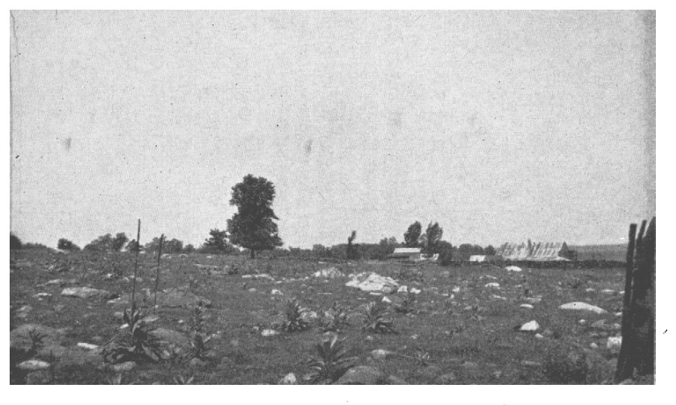
Figure 18. — Les sols Perrot sont très pierreux et seulement de petites étendues ont été améliorées et rendues propres aux grandes cultures en général.
Beaucoup de fragments anguleux de grès siliceux dense se trouvent dans tout le profil en même temps que des pierres et des boulders.
Agriculture
A cause des nombreuses pierres, seulement une faible proportion des sols Perrot a été défrichée. Dans les parties défrichées, seulement une petite superficie a été complètement débarrassée des pierres et rendue propre aux grandes cultures en général. La majeure partie du terrain défriché n'est pas amélioré et sert de pâturage, malgré la proportion relativement forte de blocs erratiques à la surface. Les sols boisés Perrot produisent une bonne variété de bois franc et de bois mou, mais l'érable à sucre prédomine. Les profits tirés des produits de l'érable, bois de chauffage et de construction sur les lots boisés bien aménagés peuvent bien dépasser ceux qu'on peut obtenir des terrains défrichés non améliorés. Les pâturages et les terrains cultivés doivent être chaulés, fumés et fertilisés avec un engrais chimique complet pour produire au maximum.
Série Stonefield (1,568 acres)
Les sols Stonefield se rencontrent entre Chatboro et Greece Point à des altitudes de 174 à 300 pieds. La roche-mère est dérivée du schiste et du grès sous-jacents, mais les boulders de la surface ainsi que certains fragments de pierre dans le sol viennent de rocs de granit ou de gneiss transportés par les glaciers, qui les ont arrachés des formations précambriennes pour les charrier vers le sud.
La majorité des sols Stonefield sont très minces, mais la profondeur des matériaux meubles au-dessus de l'assise géologique varie depuis quelques pouces jusqu'à environ cinq pieds. Les sols les plus profonds sont formés de schistes et de galets apparemment accumulés par les vagues. Le drainage naturel est un peu excessif. La perméabilité est rapide, le sol mince et la capacité de rétention d'eau faible. Par conséquent, certaines régions subissent ordinairement les méfaits de la sécheresse durant l'été. Les arbres observés sur les sols Stonefield sont principalement les bois francs, comme l'érable à sucre, l'érable rouge, le hêtre, l'orme et le tilleul, mais on rencontre aussi des conifères comme l'épinette, le thuya et le pin.
Les sols Stonefield consistent généralement en terre franche sableuse très mince formée de schiste et de grès (St). Cependant, la description donnée ci-dessous représente un profil de sol plus profond que la moyenne, sol appartenant au groupe de sols bruns podzoliques.
Horizon
Profondeur en pouces
Ac
0–5
Terre franche sableuse à terre franche brun grisâtre foncé formée de schiste; structure granuleuse; friable et poreuse; pH 5.5–6.0.
B2
5–17
Terre franche schisteuse brun foncé parmi plusieurs galets de schiste et de grès; très poreuse; pH 5.8–6.4.
B3
17–28
Terre franche graveleuse brun grisâtre foncé; parsemée de galets, très poreuse; pH 6.0–6.6.
CD
Assise rocheuse composée de grès et de schiste-argileux partiellement désagrégés et facilement réduite en galets.
Lorsque l'assise rocheuse se rencontre à la profondeur de la charrue ou à moins de 18 pouces de la surface, le sol ressemble à un lithosol.
Agriculture
Une bonne partie du sol Stonefield a été défriché, mais ce sol ne convient pas à la culture mixte. De bonnes récoltes d'avoine ont été observées à l'occasion, mais d'ordinaire toutes les grandes cultures sont pauvres même durant les bonnes années. Lorsque le climat est très sec, les grandes cultures peuvent être une faillite complète. La puissance est probablement le meilleur parti à tirer de ces sols. Des cultures spéciales comme la pomme de terre ou les fraises réussiraient probablement dans certaines régions. La luzerne pourrait probablement donner d'assez bons rendements sur des terrains bien chaulés et bien fertilisés. La terre conviendrait également assez bien aux cultures maraîchères. Le chaulage, le fumage, la fertilisation aux engrais chimiques complets et la distribution uniforme de la pluie ou l'irrigation occasionnelle par temps sec s'imposent pour l'obtention de rendements profitables sur ces sols.
SÉRIE RIGAUD (4,027 acres)
Les sols Rigaud couvrent les collines et les fortes pentes des montagnes de la région de St-André et d'Oka, à des altitudes variant de 250 à 550 pieds au-dessus du niveau de la mer. La roche-mère est un till de terre franche sableuse dérivé en grande partie de rocs granitiques des montagnes voisines et modifiée par les vagues marines. Cette action a entraîné l'arrondissement du plus grand nombre des pierres superficielles et la disparition des matériaux fins pour laisser une terre franche sableuse-graveleuse parsemée de pierres.
Là où l'action des vagues s'est fait sentir fortement, les sols Rigaud passent graduellement aux dépôts de plage qui forment la roche-mère des sols Carillon. Il n'a pas été facile de distinguer nettement la roche-mère de la série Rigaud de celle de la série Carillon et c'est pourquoi nous avons souvent cartographié ces deux sols comme une seule unité cartographique.
Les sols Rigaud sont bien ou excessivement drainés. Ils sont perméables et ont une capacité modérée de rétention d'eau. A cause de la forte déclivité de beaucoup de pentes, il y a danger d'érosion par l'eau sur les terres cultivées, ce qui appauvrirait encore davantage ce sol déjà caillouteux et déficient en matériaux fins. La végétation forestière naturelle consiste principalement en érable à sucre et en d'autres bois francs comme le hêtre et le bouleau jaune.
Suit la description d'une terre franche sableuse à graveleuse d'un sol vierge brun podzolique Rigaud (Rg).
Horizon
Profondeur en pouces
Ao-1
0-4
Terre franche sableuse granuleuse brun rougeâtre très foncé à brun foncé contenant plusieurs fragments de gravier et plusieurs pierres rondes; pH 4.4-4.9.
B21
4-16
Terre franche sablo-graveleuse brun rougeâtre foncé; mottes très friables parmi des matériaux dépourvus de structure; fragments de pierre et pierres généralement anguleuses; très poreuse; pH 5.1-5.5.
B22
16-36
Terre franche sablo-graveleuse brun rougeâtre dont la couleur s'atténue avec la profondeur; très poreuse; pierres et fragments de pierre anguleuses; pH 5.5-6.0.
C ou D
Till de terre franche sableuse brun grisâtre de profondeur variable sur le roc sous-jacent (ou roc situé immédiatement au-dessous de l'horizon B); ferme et modérément perméable; pH 6.5.
Agriculture
Les sols Rigaud ne sont pas défrichés en général à cause de la topographie peu favorable ou parce qu'ils sont trop pierreux ou coupés par trop d'affleurements rocheux. Les terrains boisés fournissent du bois de chauffage, du bois de charpente et des produits de l'érable. Certaines étendues ont été défrichées et servent de pâturages non améliorés. Seulement une petite proportion du terrain est consacré aux cultures ou aux vergers. La terre convient généralement bien aux vergers mais moins bien à la culture mixte. La luzerne devrait prospérer sur certains sols Rigaud et la majorité des grandes cultures devraient donner des rendements passables. La présence de nombreuses pierres et cailloux est un obstacle à l'utilisation de ces sols pour le jardinage mais les endroits moins pierreux pourraient produire des petits fruits comme les framboises. Parmi les bonnes façons culturales pour les sols Rigaud, mentionnons la
répression de l'érosion, la conservation de l'humidité du sol, le chaulage, la fumure et le recours aux engrais chimiques complets.
Sols fluvio-glaciaires
SÉRIE STE-PHILOMÈNE (1,382 acres)
Les sols Ste-Philomène se rencontrent dans les comtés de Terrebonne et d'Argenteuil, sur de longs eskers étroits. Ces sols se présentent également sur des arêtes lisses et larges en bordure de l'Ottawa et de la rivière Mille-Îles. Le terrain est ondulé à légèrement vallonné et l'altitude varie de 75 à 225 pieds. Le sol contient des pierres dont la grosseur varie de quelques pouces à plus de douze pouces de diamètre. En général, cependant, il n'y a pas beaucoup de grosses pierres à la surface, mais les champs cultivés sont recouverts de cailloux. Le gravier caillouteux consiste principalement en pierre à chaux et en dolomie et en une grande variété de roches ignées ou sédimentaires acides. On peut toujours déceler des carbonates libres dans la roche mère et parfois dans le sol.
Le drainage naturel varie de bon à excessif. La capacité de rétention d'eau est plutôt faible, bien qu'en général elle soit assez forte pour permettre la culture de plusieurs plantes. L'eau de pluie pénètre rapidement dans le sol et il n'y a pas de danger sérieux d'érosion. La plus grande partie du sol Ste-Philomène a été défrichée, mais on voit encore quelques lots boisés où domine l'érable à sucre.
La série Ste-Philomène a une texture qui varie de terre franche sableuse à terre franche sablo-graveleuse (Ph). Suit une description globale représentative du groupe de sols bruns forestiers.
Horizon
Profondeur en pouces
Description morphologique
Ae
6 - 8
Terre franche sablo-graveleuse brun foncé; quelques petits granules parmi les particules monogranulaires; plusieurs cailloux et très peu de grosses pierres; meuble; pH 6.5-7.2.
B
20-30
Terre franche sablo-graveleuse brun jaunâtre foncé ou brune à terre franche sableuse caillouteuse; surtout sans structure; meuble et poreuse; carbonates libres généralement présents; pH 7.2-7.7.
C
Gravier pierreux brun grisâtre; couches de gravier fin alternant avec des couches de cailloux; quelques grosses pierres; très poreux; pierres et gravier parfois enrobés ou cimentés de carbonates; pH 7.7-8.1.
Aux endroits où l'horizon brun grisâtre Ae et l'horizon B à texture légèrement plus fine sont présents, le sol est classé dans le groupe gris brun podzolique.
Agriculture
Dans le comté de Terrebonne, les dépôts graveleux sous les sols Ste-Philomène sont largement utilisés dans la construction des routes. Une bonne partie de la terre cultivée a été négligée, alors qu'en Argenteuil une forte proportion du terrain sert à l'agriculture et que la fertilité semble avoir été maintenue à un plus haut niveau. En général, les sols Ste-Philomène conviennent surtout aux primeurs et aux vergers. Parmi les grandes cultures, la luzerne vient le mieux, alors que les pois et les haricots viennent généralement bien. Des plantes à racines peu profondes comme les céréales et le maïs sont moins bien
adaptées parce qu'elles souffrent souvent du manque d'humidité. Les pommes de terre viennent bien, mais elles sont occasionnellement galeuses.
Pour les sols Ste-Philomène on recommande, entre autres bonnes pratiques, d'augmenter la matière organique, de conserver l'humidité et d'appliquer du fumier et des engrais chimiques complets. L'accumulation de matière organique est essentielle à l'accroissement de la capacité de rétention d'eau et au maintien de la fertilité du sol. On recommande l'incorporation de quantités modérées d'engrais chimiques le plus souvent possible, car le lessivage des éléments nutritifs est rapide dans un sol si poreux.
Sols sur plages de gravier
SÉRIE ST-JOSEPH (2,662 acres)
Les sols St-Joseph se trouvent à Saint-Joseph-du-Lac, à La Trappe et à Oka. Ils sont situés à des altitudes variant entre 200 et 600 pieds sur les flancs en pentes modérées à fortes des collines. Le profil du sol s'est formé sur un dépôt graveleux et caillouteux accumulé autour des collines par les vagues de la mer Champlain. Apparemment, les tills avoisinants, riches en dolomie, ont fourni les principaux matériaux, alors que les rocs granitiques locaux n'ont apporté qu'une partie des fragments grossiers de ces plages.
Les sols St-Joseph sont excessivement poreux et l'eau de pluie filtre rapidement dans le solum ainsi qu'à travers la roche mère. Un drainage interne si rapide ne laisse que peu de chances au ruissellement, si ce n'est peut-être sur les pentes très raides durant les pluies très abondantes. La capacité de rétention d'eau du solum est faible. On peut encore observer dans quelques petites étendues la végétation forestière dominante qui consiste en érable et en hêtre. La majorité de ces sols sont en vergers ou en cultures.
La terre franche sablo-graveleuse St-Joseph (Jp) appartient au groupe de sols bruns forestiers. Voici la description de son profil.
Horizon
Profondeur en pouces
Ac
0- 6
Terre franche sablo-graveleuse légère brun foncé à gravier limoneux; quelques granules friables parmi des fragments de gravier et de cailloux; pH 6.5-7.0.
B21
6-12
Gravier limoneux brun à brun rougeâtre; quelques fins granules friables; pierres grossièrement anguleuses et rondes de 8 à 12 pouces de diamètre; quelques pierres calcaires; modérément perméable; pH 7.0-7.5.
B22
12-26
Gravier limoneux caillouteux brun; modérément perméable; faible capacité de rétention d'eau; quelques roches dolomitiques poreuses partiellement désagrégées brun jaunâtre foncé; plusieurs pierres granitiques enrobées de carbonate de calcium blanc; coquillages parfois présents; pH 7.5-7.8.
B3
26-50
Gravier grossier à fin brun pâle à brun grisâtre contenant un fort pourcentage de cailloux; très peu de pierres de plus de 6 pouces de diamètre; effervescence; meuble et poreux; pH 7.6-7.8.
C
Gravier grossier à fin brun grisâtre contenant des pierres et des coquillages; meuble et poreux; effervescence; pH 7.8-8.0.
L'épaisseur de la roche-mère est variable. Dans certains endroits, ce gravier s'étend à plus de 25 pieds de profondeur. L'épaisseur moyenne est de 7 à 10 pieds au-dessus de l'assise rocheuse, mais elle n'est parfois que de quelques
pieds près des affleurements rocheux. Des coquillages se rencontrent fréquemment dans les sols St-Joseph.
Agriculture
Les sols cultivés St-Joseph ont une surface caillouteuse brune qui varie en texture depuis le gravier limoneux à la terre franche graveleuse légère. Le sol n'est que peu employé pour les grandes cultures, car il est trop sec. Cependant, lorsque ces sols graveleux sont en vergers, ces derniers donnent des rendements égaux ou supérieurs à ceux qu'on obtient sur les meilleurs sols agricoles de la région. C'est là un exemple de la meilleure utilisation d'un sol possédant un éventail étroit d'adaptabilité aux récoltes. Ce sol, qui est bon ou excellent pour les vergers, peut être considéré impropre aux grandes cultures, sauf la luzerne.
Les propriétaires de vergers sont principalement confrontés avec le problème de la conservation de l'eau. Ils ont employé des paillis autour des pommiers pour ralentir l'infiltration de l'eau et pour retenir autant d'humidité que possible dans le sol. Ils ont réussi de la sorte à produire de bonnes récoltes de pommes.
Dans les vergers nouvellement établis, on fait parfois la culture intercalaire des fraisiers et des framboisiers ou de certaines plantes sarclées. La luzerne peut servir dans les vergers aussi bien que dans les champs cultivés à maintenir ou augmenter la teneur en matière organique et la capacité de rétention d'eau du sol.
On a signalé la carence de bore, cause du cœur liégeux des pommes, mais des applications de borax peuvent corriger cet état. En maliculture, on incorpore au sol des quantités considérables d'engrais composés.
Série Carillon (3,501 acres)
Les sols Carillon se trouvent sur le mont St-André et dans les alentours à des altitudes de 100 à 450 pieds. Ils se sont formés sur des dépôts de plages, de barres ou de delta de nature graveleuse ou sableuse. Les fragments graveleux ou sableux viennent principalement de pierres granitiques et de grès, mais à de grandes profondeurs, ces matériaux acides ont généralement un revêtement calcaire et l'on y trouve occasionnellement des coquillages. La roche mère consiste généralement en gravier contenant des quantités variables de cailloux et quelques gros boulders; mais lorsque les plages passent graduellement aux tills avoisinants, les boulders ronds sont plus nombreux sur le sol et à l'intérieur. Quelques arêtes de matériaux sableux contenant du gravier, des coquillages, des cailloux et quelques boulders ont également été cartographiées dans la série Carillon.
La partie supérieure du dépôt graveleux est généralement un gravier limono-sableux à faible capacité de rétention d'eau. Le drainage interne varie de rapide à excessif. Vu la perméabilité du sol, il n'y a que peu d'érosion nocive. L'érable à sucre et le hêtre croissent d'ordinaire sur les sols Carillon.
Bien qu'un peu variable, la texture de surface des sols Carillon est généralement un gravier limono-sableux (Cn). Suit la description d'un profil de ce type dominant qui se classe parmi le groupe de sols bruns podzoliques.
Horizon
Profondeur en pouces
Ac
0- 6
Gravier limono-sableux brun foncé; pH 5.6-6.0.
B2
6-30
Gravier fin de terre franche brun rougeâtre; pH 5.8-6.4.
C
Gravier gris brunâtre, meuble, contenant de nombreux cailloux d'environ 4 pouces de diamètre; pH à 48 pouces: 6.8-7.4.
Agriculture
Les sols Carillon ne sont guère employés des fins agricoles. La terre est généralement trop sèche pour donner un bon rendement de grandes cultures, sauf la luzerne. Quoique le sol soit bien adapté aux vergers, nous n'y avons trouvé qu'un verger de grandeur passable. La terre pourrait également produire des cultures de primeurs. Au nombre des bonnes méthodes d'exploitation, mentionnons la conservation de l'humidité du sol, le chaulage et la fertilisation avec des engrais chimiques complets et la plus grande quantité possible de fumier de ferme ou d'engrais verts.
Les dépôts graveleux qui gisent sous les sols Carillon servent largement à la construction des routes et à d'autres fins.
Sols sur sédiments argileux
SÉRIE ST-URBAIN (576 acres)
Les sols St-Urbain se rencontrent près de Ste-Thérèse à une altitude d'environ 100 pieds au-dessus du niveau de la mer. La surface du terrain est unie et exempte de pierres. La roche-mère est une argile calcaire gris foncé. Le solum a une très grande capacité de rétention d'eau. Le drainage naturel est plutôt faible et la perméabilité modérée.
La description qui suit représente le profil des sols cultivés ordinaires.
Horizon
Profondeur en pouces
Ac
0- 8
Argile gris très foncé à noire; structure en mottes ou granuleuse; très ferme lorsque'elle est humide, très dure lorsqu'elle est sèche, très plastique et collante lorsqu'elle est mouillée; pH 6.4-7.2.
Bg1
8-33
Argile lourde gris foncé à gris très foncé avec mouchetures à faible contraste de brun grisâtre très foncé et de brun foncé; structure cuboïde anguleuse; très dure lorsqu'elle est sèche et très plastique lorsqu'elle est mouillée; pH 7.0-7.3.
Bg2
33-48
Argile gris foncé avec mouchetures à faible contraste très délicat de brun grisâtre foncé et très foncé; structure et consistance comme dans l'horizon ci-dessus; pH .0-7.4.
C
Argile gris foncé avec taches de gris et de brun grisâtre foncé; l'argile fait fortement effervescence sous l'action de l'acide; couche occasionnelle d'argile brun rougeâtre; fortement plastique et collante; pH 7.2-7.6.
Agriculture
L'argile St-Urbain est très dure à travailler et difficile à drainer. Pareil terrain convient à la culture mixte et à l'industrie laitière, mais pas du tout à la culture maraîchère ou aux vergers. La terre est fertile et bien pourvue de calcium. Avec un bon drainage, la luzerne, les céréales et le maïs croissent bien.
Le lin à filasse et les betteraves à sucre comptent parmi les cultures commerciales bien adaptées aux sols St-Urbain. Les bonnes méthodes de culture comportent le maintien de la matière organique à un haut niveau et l'amélioration du drainage du sol. L'emploi de phosphates ou d'engrais chimiques contenant peu d'azote serait de nature à augmenter les rendements des grandes cultures et à favoriser le maintien d'un haut degré de fertilité.
SÉRIE DALHOUSIE (8,941 acres)
Les sols Dalhousie se présentent en pentes douces et uniformes, exemptes de pierres, sur les flancs des arêtes de till à des altitudes variant de 75 à 250 pieds au-dessus du niveau de la mer. La roche-mère d'argile marine grise est bien pourvue de calcium et ressemble à bien des égards à la roche mère des sols St-Rosalie. L'influence des calcaires des arêtes avoisinantes a été suffisamment forte pour modifier tout le processus de formation du sol. La position de l'argile Dalhousie est apparemment responsable de sa différenciation des autres sols argileux de la région basse.
Le drainage efficace du terrain est imparfait. L'eau excédentaire peut s'écouler assez rapidement, mais la percolation à travers le sol est lente, peut-être à cause de la granulation de l'argile. Le sol souffre moins des sécheresses prolongées que la majorité des sols bien drainés ou imparfaitement drainés; cela tient à la forte capacité de rétention d'eau de la couche organique superficielle et à la petite quantité d'humidité qui vient des sols de till situés plus haut. Grâce à la douceur des pentes et à l'absorption rapide de la pluie par le sol de surface bien granulé, il ne se produit que peu d'érosion nocive en culture mixte. Des ormes et des érables isolés sont tout ce qui reste de la végétation arborescente primitive.
Dans la région à l'étude, la majorité des sols Dalhousie sont de texture argileuse, mais on rencontre aussi des sols à texture de terre franche argileuse. Ces sols appartiennent au groupe gleysolique gris foncé et peuvent se décrire ainsi qu'il suit:
Horizon
Profondeur en pouces
Ae
0-8
Argile à terre franche argileuse brun très foncé; structure granuleuse; ferme; en général, modérément plastique et collante; pH 6.0-6.5.
Bg
8-22
Argile brun foncé à brun grisâtre très foncé; structure cuboïde anguleuse à sub-anguleuse; faibles mouchetures à l'intérieur des agrégats; plastique et collante; pH 6.5-6.8.
C
Argile gris olive avec petits points ou stries de couleur plus claire; structure cuboïde anguleuse; ferme; plastique et collante; pH 6.8-7.4.
Agriculture
Tous les sols Dalhousie ont été défrichés et servent à la culture mixte et à l'élevage de bovins laitiers. Ils ont généralement une texture trop fine pour convenir au jardinage. Le maïs, les racines, le foin, les céréales et les pâturages en rotation constituent les principales cultures sur ces sols. Les rendements sont généralement bons, ce qui peut être attribué à la texture favorable et à la forte capacité de rétention d'eau, à la structure et à la topographie qui permettent un drainage passablement bon et efficace, à l'absence de lessivage intense du solum.
supérieur et à la bonne provision de matière organique dans la couche superficielle.
Il devrait être facile de maintenir la fertilité des sols Dalhousie à un niveau élevé par le recours au fumier et aux phosphates ou aux engrais chimiques complets à faible teneur d'azote. Le sol est généralement bien pourvu de chaux, mais il peut se trouver des champs ici et là auxquels le choulage profiterait.
SÉRIE RIDEAU (37,423 acres)
Les sols Rideau sont largement distribués dans la région basse. Ces sols se rencontrent à des altitudes variant de 75 à 300 pieds sur terrain presque uni à ondulé coupé par des ravins profondes ou par des escarpements abrupts, qui sont généralement inclus dans la définition de la série. Ils se présentent en association caténaire avec les sols Ste-Rosalie.
FIGURE 19.—Les sols Rideau se rencontrent sur terrain argileux coupé par des ravins et des escarpements abrupts.
La roche-mère est une argile marine, massive, grise, exempte de boulders et de fragments graveleux; elle dépasse souvent 100 pieds d'épaisseur. Le drainage externe est modérément rapide à excessivement rapide selon la pente du sol et la proximité des ravins ou des escarpements.
La nature massive de l'argile dans le solum et dans la roche-mère est responsable de la lenteur du drainage interne et du peu d'aération. L'argile a une grande capacité de rétention d'eau et les changements de teneur en humidité sont très lents à cause de la faible teneur en matière organique du sol de surface et à cause de la structure défavorable. Une bonne partie de l'eau de pluie s'écoule avant d'être absorbée par le sol de surface. Le ruissellement rapide et la lenteur de l'absorption de l'eau causent un peu d'érosion durant les pluies et un manque d'humidité entre les pluies. Le type d'érosion le plus spectaculaire est l'érosion en ravins ou en rigolets sur les pentes raides ou immédiatement au-dessus. On peut généralement prévenir pareille érosion par des mesures simples, mais il est difficile de l'enrayer lorsqu'elle est déjà commencée. Les éboulements se produisent
fréquemment sur les sols Rideau le long des ravins et des berges de rivière. Pratiquement tous les sols Rideau sont défrichés et cultivés.
Les arbres isolés les plus fréquemment observés sont les pins blancs. Selon les cultivateurs, le pin blanc, la pruche, l'érable rouge, le frêne et l'orme étaient les espèces les plus importantes de la forêt vierge.
L'argile (Ri) est le seul type cartographié dans la série Rideau et la description de son profil est donnée ci-dessous. C'est un sol régosolique, à drainage un peu limité, dont le profil est très peu développé.
Horizon
Profondeur en pouces
Ae
6-7
Argile grise à gris brunâtre clair; structure granuleuse fine à moyenne; les agrégats sont fermes lorsqu'ils sont humides et durs lorsqu'ils sont secs (les sols cultivés sont souvent en motte); pH 5.2-6.0.
A2
0-2
On voit parfois dans le profil de sol cultivé des restes d'un horizon délavé gris pâle.
Bg
8-20
Argile grise légèrement mouchetée de brun jaunâtre; structure cuboïde anguleuse peu définie; plutôt imperméable; plastique et collante; très ferme; pH 6.2-6.4.
C
Argile grise avec de rares taches de rouille; structure massive ou cuboïde anguleuse; plastique et collante; pH 6.4-6.9.
Nous avons occasionnellement trouvé des couches minces d'argile brune dans le sol inférieur ou dans la roche mère. A l'ouest de Pointe-au-Chêne, un mélange complexe d'argile grise et d'argile brune cartographiée comme sols Rideau et Wendover résulte apparemment d'un éboulis d'argile.
Agriculture
Les sols Rideau sont entièrement cultivés, à l'exception des ravins et des escarpements raides qui sont boisés ou servent de pâturages permanents. Presque toutes les fermes sur sol Rideau sont consacrées à l'industrie laitière et les principales cultures sont l'avoine, l'orge, le sarrasin, les pois, le maïs d'ensilage, le trèfle et la fléole («mil»), les racines et le lin à filasse. Certains pâturages sont inclus dans une rotation de quatre ou de six ans, mais beaucoup de pâturages permanents sont établis sur des terrains sérieusement ravinés. La luzerne ne vient pas bien, mais le chaulage stimule sa croissance. La luzerne est généralement cultivée en mélange avec le trèfle et la fléole, parce que l'établissement de luzernières est difficile et risqué.
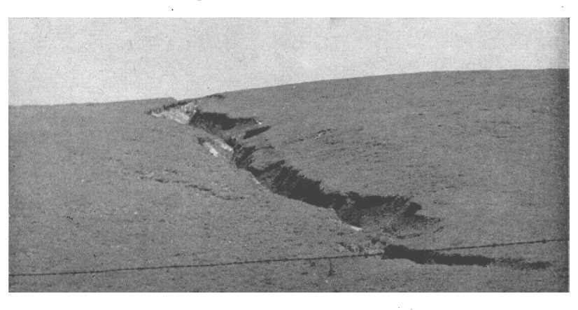
FIGURE 20.—Ravinement d'un banc d'argile.
Il faut encourager l'incorporation de matière organique dans le sol de surface Rideau pour améliorer la structure du sol, sa perméabilité et sa capacité de rétention d'eau. Les bonnes méthodes de culture sont parfois plus profitables que des applications abondantes d'engrais chimiques. La fumure est généralement profitable, mais la réaction aux engrais chimiques dépend des conditions climatiques et souvent elle n'est pas très frappante. C'est le phosphore, suivi de l'azote, qui fait le plus défaut.
La répression de l'érosion par l'eau est très importante sur les sols Rideau. Les ravins et les berges doivent être laissés engazonnés et il y aurait même lieu de les boiser. Les sillons et les fossés doivent être en contre-pente et les voies de drainage doivent être engazonnées afin de prévenir le ravinement ou les éboulis.
SÉRIE STE-ROSALIE (59,888 acres)
La plus grande superficie des sols de Ste-Rosalie est située dans le comté de Deux-Montagnes. Ces sols se trouvent à des altitudes variant de 125 à 275 pieds sur terrain très plat et exempt de pierres. Le profil du sol est formé d'une couche profonde d'argile grise déposée par la mer Champlain. Le drainage est lent à cause de la topographie unie du terrain et de la nature massive de l'argile. Pratiquement toute l'eau de pluie est absorbée par le sol organique bien granulé de surface, jusqu'à saturation. L'excédent d'eau disparaît très lentement à moins qu'il n'y ait drainage artificiel. Il ne se produit pas sur les sols plats Ste-Rosalie d'érosion en plaques ou en rigolets, mais le ravinement peut s'étendre au terrain plat des sols Ste-Rosalie s'il n'est pas enrayé dans la région avoisinante.
Presque tous les sols Ste-Rosalie sont cultivés et l'on voit rarement des arbres de la végétation naturelle. Selon les cultivateurs, la couverture forestière primitive consistait surtout en érable rouge, frêne, tilleul, pruche, orme et thuya.
Le type le plus important de la série Ste-Rosalie est l'argile (R) mais nous avons aussi cartographié quelques étendues de terre franche argileuse (Rl). Les caractéristiques du profil Ste-Rosalie sont présentées ci-dessous dans une description générale du type d'argile en culture. Ce sol appartient au groupe de sols gleisoliques gris foncé.
Horizon
Profondeur en pouces
Ap
6 - 8
Argile brun grisâtre très foncé, à teneur moyenne à forte en matière organique; structure granuleuse; friable à légèrement ferme; pH 5.6-6.2.
A2
0 - 2
Argile grise un peu tachetée de brun rouillé. Cet horizon peut être présent ou faire défaut dans un sol cultivé, selon l'épaisseur de la couche organique et selon la profondeur de la couche arable. En général, certains restes de cet horizon s'observent sous forme de poches.
Bg1
3 - 8
Argile brune intensément tachetée de brun grisâtre; structure cuboïde anguleuse peu définie; très collante lorsqu'elle est humide; pH 5.8-6.4.
Bg2
5-12
Argile grise avec mouchétures gris pâle et brun rouille peu intense; structure cuboïde anguleuse plus ou moins bien définie; un peu plus perméable que l'horizon ci-dessus; pH 6.2-6.7.
C
Argile lourde grise; structure cuboïde anguleuse à massive; imperméable; très plastique et collante; ne sèche jamais complètement; pH 6.8-7.4.
L'argile brune s'observe occasionnellement dans les sols Ste-Rosalie de la partie ouest de Deux-Montagnes et de la partie est d'Argenteuil, mais ces petites étendues ne peuvent pas être présentées séparément selon l'échelle utilisée pour les observations sur place. La teneur moyenne en matière organique de la surface est considérablement plus forte que dans le sol de surface de la série Rideau, mais l'examen sur place indique des variations passablement grandes dans la quantité de matière organique présente dans les sols Ste-Rosalie.
Tel qu'il est cartographié, le type d'argile comporte des variations considérables dans la texture de l'horizon superficiel et les essais de laboratoire montrent que la fraction argileuse du sol de surface varie entre 36 et 58 p. 100. La proportion de couleur rouille du sous-sol varie de même considérablement, et bien que ce soit là la principale caractéristique ordinaire pour identifier ce sol, cette couleur n'est pas nécessairement très intense dans tous les sols cartographiés dans la série Ste-Rosalie.
Dans les endroits cartographiés comme terre franche argileuse Ste-Rosalie, la texture du sol de surface manque souvent d'uniformité et l'on y rencontre occasionnellement de la terre franche sableuse (séries St-Damase et Courval). La terre franche argileuse est généralement plus acide que l'argile.
Agriculture
Les sols Ste-Rosalie sont tous cultivés et servent à la culture mixte ou à l'industrie laitière, ainsi qu'à quelques récoltes marchandes spéciales. Bien qu'ils aient quelques caractéristiques physiques défavorables, ces sols comptent parmi les plus avantageux dans le Québec. Au nombre de leurs défauts, mentionnons le mauvais drainage naturel, l'acidité modérée du solum supérieur et la nature massive et imperméable du sous-sol à couleur rouille qui s'oppose à l'aération, à l'infiltration de l'eau et à la pénétration des racines. Leurs avantages sont la topographie unie, l'absence de pierres et d'érosion, la grande capacité d'échange et la fertilité naturelle, la structure passable et la perméabilité de la couche arable qui permet la culture facile et la bonne croissance des plants à racines peu profondes.
On a eu raison des conditions adverses par le drainage artificiel et le chaulage. Le drainage souterrain, lorsqu'il est bien établi, a produit d'excellents résultats; mais à cause de la topographie unie du terrain, du petit nombre de drains collecteurs profonds et de l'imperméabilité du sous-sol, le drainage souterrain peut en certains cas être difficile ou impraticable.
Le type commun de drainage artificiel en honneur est le labour Richard ou en planches bombées. Les planches bien convexes facilitent l'écoulement rapide de l'excès d'eau à surface du sol et permettent la préparation hâtive des semis du printemps. Certains cultivateurs croient que des planches de 90 pieds bordées de rigoles profondes seraient encore plus pratiques et plus efficaces que les planches de 45 pieds.
La culture continue de blé, pois, avoine et foin sans fertilisation suffisante a considérablement diminué la fertilité naturelle du sol. Sur les fermes bien entretenues, l'avoine donne des rendements bons et parfois excellents et les rendements du maïs d'ensilage varient de passables à bons. On a obtenu d'excellentes récoltes de trèfle ou de trèfle et de fléole sur les sols Ste-Rosalie, mais la croissance de la luzerne n'est possible que lorsque la réaction, le drainage et l'aération du terrain ont été considérablement améliorés par plusieurs années de travail.
Les cultures commerciales qui peuvent convenir aux sols Ste-Rosalie sont le lin à filasse, les betteraves à sucre, l'orge de brasserie, les pois verts, les haricots mange-tout, les fraises et le tabac à cigare et à pipe.
SÉRIE LAPLAINE (5,792 acres)
Les sols Laplaine appartiennent au catena Rideau—Sainte-Rosalie, mais ils sont de beaucoup moins importants que ces deux séries. La série Laplaine se rencontre dans de lentes dépressions sur de vastes étendues d'argile marine planes, exemptes de pierres, à des altitudes variant de 50 à 200 pieds.
La roche-mère de la série Laplaine est une argile grise. Le sol, de même que son horizon superficiel riche en matière organique, s'est formé dans des conditions d'humidité excessive causée par le drainage externe stagnant et par la perméabilité très lente.
Suit une description d'un sol cultivé Laplaine. L'unité cartographique (Lp) comprend les types d'argile et de terre franche argileuse.
Horizon
Profondeur en pouces
Description
Ao
0-8
Argile noire, riche en matière organique, à structure granuleuse; assez ferme; légèrement plastique et collante; pH 5.8-6.2.
G
8-12
Argile grise lourde, mouchetée de très petits points brun jaunâtre; structure cuboïde grossière; très dure lorsqu'elle est sèche et très plastique lorsqu'elle est mouillée; pH 6.4-6.8.
C
Argile lourde grise et gris olive, avec tachesures olive faiblement contrastantes; grossière structure cuboïde anguleuse devenant massive en profondeur; très collante et plastique; carbonates libres parfois présents; pH 7.3-7.7.
Il n'y a que peu de variations dans les sols Laplaine, si ce n'est dans la quantité de matière organique à l'horizon superficiel. Plusieurs parties cultivées de ce sol étaient autrefois des terres noires, souvent profondes de plusieurs pieds, qui ont brûlé. Qu'elle ait été brûlée en partie ou non, la matière organique a été mélangée par la culture à l'argile. Cela confère au sol superficiel, qui est très foncé, bien granulé et passablement friable, une certaine ressemblance avec les sols gleysoliques gris foncé. De petites étendues de terre noire très peu profonde recouvrant l'argile ont également été classées dans cette série. Certains de ces sols organiques sont si minces que le labour en profondeur peut permettre de mélanger une partie de l'argile sous-jacente, de sorte qu'ils peuvent éventuellement devenir des sols minéraux. Ces terres noires sur argile appartiennent au groupe de sols organiques minces.
Agriculture
La majorité des sols Laplaine ont été défrichés et servent à la culture mixte et à l'élevage des bovins laitiers. Ils comptent parmi les sols de la plaine qui ont la plus grande fertilité inhérente. Cependant, il est difficile et parfois impossible d'obtenir la production maximum à cause des difficultés de drainage. Leur situation dans des dépressions a favorisé la formation d'une couche superficielle riche en humus et prévenu le lessivage des bases, mais un système élaboré de drainage s'impose pour que ces terres puissent produire des cultures et demeurer fertiles.
Dans le passé, on avait coutume de brûler tous les dépôts organiques jusqu'à ce qu'on atteigne le sol minéral sous-jacent. C'était du gaspillage que de détruire ainsi l'azote, et de plus le brûlage a souvent aggravé les difficultés de drainage.
Dans certaines régions brûlées, la surface du sol est tellement au-dessous du niveau général du terrain qu'elle est impossible à drainer.
Les sols Laplaine ont en général besoin d'engrais chimiques pour suppléer aux éléments nutritifs déficitaires. Il y a généralement une bonne provision d'azote, mais le phosphore et surtout la potasse font généralement défaut. Lorsque la terre n'est pas fertilisée, les céréales ont tendance à verser, à mûrir lentement et à produire des grains légers. Les sols Laplaine peuvent avoir occasionnellement besoin de chaux bien que la réaction soit généralement près du point neutre au-dessous de la couche arable. Lorsque le drainage peut s'effectuer convenablement, le trèfle et les cultures mixtes de trèfle et de fléole produisent des fourrages de qualité bonne à excellente.
SÉRIE WENDOVER (678 acres)
Les sols de la série Wendover sont exempts de pierres et ondulés; ils sont situés entre Ste-Thérèse et Terrebonne à des altitudes de 75 à 100 pieds. La roche-mère est une argile marine brune lourde, qui peut avoir plus de 50 pieds de profondeur. Cette argile peut alterner avec des couches d'argile grise. Des carbonates peuvent se trouver à une grande profondeur dans l'argile, mais la partie supérieure du dépôt, dont le sol s'est formé, est généralement exempte de calcaire. Le drainage externe est modérément rapide dans le cas des sols Wendover; il n'y a que peu de percolation d'eau dans le sous-sol d'argile massive et imperméable. Dans de telles conditions, l'érosion par l'eau constitue une grave danger.
La description suivante représente le profil moyen d'un sol cultivé Wendover. L'argile (W) est le seul type cartographié. C'est un sol régosolique à drainage un peu restreint, et dont le profil est peu développé.
Horizon
Profondeur en pouces
Description
Ap
0- 6
Argile brun foncé; grossière structure cuboïde anguleuse; souvent en mottes dans les champs cultivés; très dure lorsqu'elle est sèche, et collante et plastique lorsqu'elle est mouillée; pH 5.5-6.3.
A2
On voit à l'occasion une couche d'argile légèrement délavée d'un à trois pouces d'épaisseur.
Bs
6-14
Argile lourde brun rougeâtre à brune; mouchetures peu prononcées de gris rougeâtre; fine structure cuboïde anguleuse; extrêmement dure lorsqu'elle est sèche, plastique et collante lorsqu'elle est mouillée; pH 6.0-6.4.
C
Argile lourde de couleur brun généralement uniforme, contenant quelquefois des couches d'argile grise; massive et imperméable; très plastique lorsqu'elle est mouillée; carbonates libres généralement absents; pH 6.8-7.3.
Agriculture
Les sols Wendover sont défrichés et servent à la culture mixte et à l'industrie laitière. Ils sont fertiles mais extrêmement difficiles à travailler à cause de leur forte teneur en argile et de leur faible teneur en matière organique. Il faut recourir à des machines puissantes pour travailler le sol; de plus, l'humidité optimum requise pour préparer une couche de semis convenable se tient entre des limites étroites. Lorsqu'on le travaille pendant qu'il est trop humide, le sol se prend en pain et devient très dur en séchant; lorsqu'il est sec, le sol se brise très difficilement. Les rendements qu'on peut obtenir sur ces sols dépendent plus des conditions climatiques que de la fertilité naturelle. Pour obtenir de bonnes récoltes, il faut drainer le sol convenablement, y incorporer de la matière organique sous forme de fumier ou d'engrais vert, et y ajouter les engrais chimiques appropriés.
conditions climatiques et du genre de couche de semis que chez d'autres sols argileux de cette région. La structure du sol peut être améliorée par l'addition de terre noire, d'engrais vert et de fumier de ferme.
SÉRIE BEARBROOK (1,024 acres)
Les sols Bearbrook appartiennent au même catena que la série Wendover, et ils sont situés près de St-Eustache à des altitudes de 75 à 100 pieds. Le terrain est uni et exempt de pierres. Le drainage externe est lent et la perméabilité très lente. La roche mère est une argile lourde brune, quelquefois stratifiée avec des couches d'argile grise. Il n'y a généralement pas de carbonates libres dans les quelques pieds supérieurs du dépôt d'argile, dont l'épaisseur peut souvent dépasser 50 pieds, mais on observe généralement des carbonates libres à plus de 10 pieds de la surface. Il y a des variations considérables la quantité d'argile grise mélangée à l'argile rouge. Dans certains profils, seule l'argile rougeâtre est présente, alors qu'en certains autres profils, comme celui que nous décrivons ci-dessous, il y a une forte proportion d'argile grise. L'argile Bearbrook (Bb) est le seul type cartographié et elle appartient au groupe de sols gleysoliques gris foncé.
Horizon
Profondeur en pouces
Ae
0-6
Argile brun foncé à brun grisâtre; structure granuleuse très ferme; plastique lorsqu'elle est mouillée; pH 5.6-6.4.
Bg1
6-10
Argile brune, avec tachetures brun grisâtre et gris rougeâtre foncé; structure cuboïde anguleuse peu définie; très plastique lorsqu'elle est mouillée, très dure lorsqu'elle est sèche et ferme lorsqu'elle est humide; pH 6.0-6.8.
Bg2
10-26
Argiles mélangées, tachetées de gris pourpre, de brun et de gris; agrégats cuboïdes fermes et anguleux; très plastiques et collantes lorsqu'elles sont mouillées; pH 6.3-7.2.
C
Argile lourde brune qui peut contenir des couches d'argile grise; structure massive à fragmentaire; très plastique; pH 6.2-7.8.
Agriculture
Les sols Bearbrook sont consacrés aux grandes cultures générales comme les foins de trèfle et de fléole, l'avoine et le maïs d'ensilage. Ces sols présentent des caractéristiques désavantageuses, mais pas au même point que les sols Wendover, parce que leurs provisions de matière organique est de beaucoup supérieure. Les difficultés de drainage sont même plus graves sur les sols Bearbrook que sur les sols argileux Rideau, Dalhousie et Ste-Rosalie, parce que l'argile Bearbrook est plus imperméable que tous les autres sols argileux. Bien cultivés, les sols Bearbrook peuvent produire d'aussi bons rendements que ceux qu'on obtient généralement sur les sols Ste-Rosalie.
Sols alluvionnaires
SÉRIE MILLE-ÎLES (1,702 acres)
Les sols Mille-Îles ont été cartographiés presque exclusivement entre Pointe-Calumet et St-Eustache près du lac Deux-Montagnes à des altitudes de 75 à 100 pieds. Ils occupent une superficie presque unie et ondulée ou se présentent comme des barres étroites au-dessus de plaines d'argile.
La roche mère est un sable grossier à moyen qui contient une proportion variable de gravier fin. Elle est apparemment d'origine alluvionnaire et elle a une épaisseur de 5 à 25 pieds au-dessus de l'argile marine. Cette série est excessivement drainée et ne retient pas suffisamment d'humidité pour la croissance des cultures ordinaires de la ferme. Elle est moins sujette à l'érosion éolienne que ne le sont les sables plus fins des séries Ulands et St-Thomas.
La description qui suit représente les caractéristiques observées dans les champs cultivés. Le sol appartient au groupe des podzols.
Horizon
Profondeur en pouces
Ac
5 - 8
Sable moyen à grossier ou sable limoneux brun foncé à brun; quelques faibles granules parmi les grains simples; pH 4.8-5.4.
A2
-
Rarement observé dans les champs cultivés; peut avoir de 1 à 4 pouces d'épaisseur aux endroits non défrichés; sable délavé moyen à grossier brun pâle ou gris rosâtre;
B21
0 - 6
Sable limoneux rougeâtre foncé en poches, souvent induré pH 5.5-6.3.
B22
8-12
Sable moyen à grossier rouge jaunâtre, monogranulaire, parfois induré; pH 5.5-6.3.
B3
18-22
Sable moyen brun jaunâtre clair avec couches de sable grossier, monogranulaire, meuble et perméable.
C
-
Couches de sable très grossier et de sable limoneux grossier dont les couleurs varient depuis le gris brunâtre clair jusqu'au brun pâle et au brun grisâtre; quelques couches de gravier fin, très perméables; pH 5.8-6.5.
Agriculture
Les sols Mille-Îles sont très pauvres. Ils sont trop secs sauf pour certaines cultures de primeurs. Comme la fertilité naturelle est extrêmement faible, tous les éléments nutritifs des plantes doivent être ajoutés sous forme d'engrais chimiques, de fumier, de chaux et d'amendements organiques. Si l'on n'a pas recours à l'irrigation, le manque d'eau peut faire faillir la récolte. Lorsque les sables qui gisent sous les sols Mille-Îles sont profonds, grossiers et propres, ils sont employés en construction.
SÉRIE UPLANDS (22,058 acres)
Les sols Uplands sont situés sur des terrains ondulés à légèrement valonnés, exempts de pierres, à des altitudes variant généralement entre 175 et 250 pieds au-dessus du niveau de la mer. Ils se sont formés sur des dépôts sableux profonds de texture uniforme moyenne à fine. La capacité de rétention d'eau du sol est extrêmement faible, la perméabilité est très rapide et il n'y a pratiquement pas de ruissellement ou d'érosion par l'eau. L'érosion éolienne peut se produire facilement sur la terre dénudée. Une large proportion du sol Uplands est recouverte d'arbres, principalement de pins, de bouleaux et de chênes avec quelques hêtres et érables à sucre.
Dans la région à l'étude, les sols Uplands (Up) peuvent être du sable moyen ou fin. Les caractéristiques d'un profil de ce podzol vierge sont les suivantes.
Horizon
Profondeur en pouces
A0-1
1 - 2
Humus noir et sable limoneux; pH 4.7-5.2.
A2
1 - 3
Sable fin lessivé gris brunâtre clair; sans structure et lâche; se présentant à des endroits dispersés ou de façon à former un horizon très discontinu lorsque le sol a été dérangé; pH 4.9-5.2.
Horizon
Profondeur en pouces
B21
2½ - 6
Sable moyen à fin brun rougeâtre; lâche; (la formation ortstein est exceptionnelle); pH 4.9-5.2.
B22
18-24
Sable brun foncé à jaune brunâtre; sans structure; lâche; pH 5.2-5.5.
B3
6-10
Sable brun jaunâtre clair à brun pâle, comme ci-dessus.
C
Sable fin à moyen brun pâle à gris clair; sans structure; passablement lâche; pH 5.2-5.8.
Dans le cas du sable Uplands, phase graveleuse (Upg), la roche-mère ne repose pas toujours sur l'argile, mais en plusieurs endroits le sable vient directement en contact avec le gravier d'un esker enterré.
Sur de larges étendues, le sol excessivement drainé Uplands n'a pas été cartographié séparément du sol St-Jude imparfaitement drainé de la même association caténaire, non plus que des sols St-Amable. Comme ces régions sont presque entièrement boisées, il aurait été difficile, coûteux et peu pratique de les cartographier plus en détail.
Agriculture
Seulement une très petite proportion du sol Uplands est présentement en culture. La majorité du terrain est boisé ou reboisé après des essais infructueux de culture. Les échecs de culture sont dus au grand manque de fertilité naturelle et à l'aridité du sol. Les éléments nutritifs des plantes peuvent être apportés par les engrais chimiques, tandis que l'irrigation peut fournir l'humidité nécessaire. Le coût de la fertilisation et de l'irrigation serait prohibitif pour les cultures générales de la ferme, mais certaines cultures marchandes pourraient justifier ces dépenses. On a recours à l'irrigation sur des sols semblables en dehors de la région à l'étude pour la culture du tabac à cigarettes.
Les cultures les plus en vogue sur les sols Uplands sont le sarrasin et les pommes de terre, mais on produit souvent aussi des fraises et des framboises. Pour croître normalement, les cultures doivent recevoir des quantités généreuses d'engrais chimiques et de fumier ainsi que des pluies abondantes et bien réparties. Le chaulage est nécessaire et devrait être accompagné d'additions généreuses de matière organique. Beaucoup de terres noires et tourbières venant de dépôts organiques naturels non utilisés par ailleurs pour la culture pourraient s'ajouter à de tels sols légers pour en améliorer la capacité de rétention d'eau et fournir des éléments nutritifs aux plantes. Avec le peu de fertilisation qu'on apporte généralement, les rendements des grandes cultures ne sont pas profitables. Les sols Uplands doivent être soit fertilisés pour permettre la production de récoltes profitables, soit reboisés. Grâce à leurs racines profondes et à leur ombrage, les arbres peuvent utiliser l'humidité et les éléments nutritifs sur pareil sol beaucoup efficacement que les plantes cultivées.
SÉRIE ST-JUDE (22,412 acres)
Les sols St-Jude sont situés sur du terrain uni et exempt de pierres, à des altitudes de 150 à 250 pieds. La roche-mère est le même sable marin que celui de la série Uplands, mais son épaisseur au-dessus de l'argile n'excède généralement pas six pieds et varie le plus souvent de 3 à 4 pieds. Le drainage effectif de la série St-Jude est imparfait. Toute la pluie qui tombe est rapidement absorbée par le sol perméable et passe facilement à travers la partie supérieure.
du solum. Cependant, à cause de la présence de l'argile sous-jacente plane et imperméable, l'écoulement de l'eau en profondeur est arrêté dans la partie inférieure du solum.
Les sols boisés St-Jude sont recouverts surtout d'érable rouge, de pruche, de bouleau blanc, de peuplier, de sapin et d'épinette. Deux types ont été cartographiés dans la série St-Jude, le sable moyen à fin (J) et la terre franche sableuse (Jf). Les caractéristiques générales de profil décrites ci-dessous représentent le groupe de ce podzol à gley.
Horizon
Profondeur en pouces
A0-1
1 - 4
Matière organique noire non décomposée contenant un peu de sable; pH 5.0-5.4.
A2
1 - 3
Sable limoneux à sable fin délayé gris clair; généralement sans structure; pH 5.0-5.4.
Bg1
4 - 6
Sable moyen à fin ou sable limoneux brun rougeâtre; quelques mouchetures; généralement friable, mais en certains endroits induré en ortstein; pH 5.6-6.0.
B22
8-12
Sable moyen à fin fortement tacheté de brun jaunâtre et de gris; se brisant facilement en simples grains lorsqu'on le soulève; pH 5.8-6.2.
C
6-20
Sable moyen à fin gris brunâtre clair; quelques stries grises et rouille; sans structure; pH 6.0-6.8.
D
Substratum d'argile marine.
Dans plusieurs régions boisées, les sols St-Jude et Uplands ont été groupés pour fins de cartographie; il n'y avait pas lieu de les cartographier séparément.
Agriculture
Selon les endroits, de 20 à 50 p. 100 des sols St-Jude sont employés pour la culture générale et la production de cultures commerciales comme la pomme de terre, les légumes et les petits fruits. La terre est naturellement peu fertile, elle est acide et imparfaitement drainée. Pour obtenir des récoltes passables, il faut recourir au chaulage, au drainage artificiel et à la fertilisation généreuse au fumier et aux engrais chimiques. Les rendements des grandes cultures sont généralement pauvres, et cela tient en partie à ce que la terre n'est pas convenablement drainée, chaulée et fertilisée.
COMPLEXE ST-AMABLE (Rubicon) (28,952 acres)
Le nom St-Amable a été donné à un groupe de séries de sols qui se présentent en association tellement complexe qu'il n'est pas pratique de les séparer. Ce complexe de sols a été cartographié dans les trois comtés, à des altitudes de 150 à 250 pieds.
Les sols du complexe St-Amable sont formés de sable marin, moyen à fin, qui constitue également la roche mère des sols Uplands et St-Jude. La roche mère a généralement de 3 à 5 pieds d'épaisseur sur l'argile marine unie. Le terrain est de façon générale, uni ou légèrement ondulé avec des micro-dénivellations qui expliquent la variabilité extrême du drainage.
La nappe phréatique se tient à un niveau uniforme dans le sable qui surmonte le substratum d'argile imperméable et il s'ensuit que les micro-dénivellations causent des écarts de distance de la surface du sol à nappe d'eau. Le
drainage efficace varie chez le complexe St-Amable de modérément bon au sommet de la majorité des ondulations à imparfait sur les côtés et à mauvais dans les dépressions. Si l'on pouvait les cartographier dans des séries séparées, ces sols se classeraient respectivement dans la série Ste-Sophie, St-Jude et St-Samuel. Les sols Ste-Sophie et St-Samuel n'ont pas été cartographiés séparément, mais les sols St-Jude ont été cartographiés lorsque le terrain avait un drainage uniformément imparfait, sur de vastes étendues. Le profil du sol Ste-Sophie ressemble à celui du sol Uplands, sauf qu'il présente certaines tachetures dans la partie inférieure du solum, ce qui indique un drainage interne modéré au lieu d'un drainage excessif. Le sol St-Samuel est un sable très mal drainé qui porte une couche superficielle d'humus noir non décomposé d'environ 4 pouces d'épaisseur au-dessus d'un sous-sol à gley gris.
La capacité de rétention d'eau du sol St-Amable varie selon la quantité de matière organique à la surface; elle est le plus considérable lorsque la surface est hautement organique, mais en général elle est faible. Les espèces suivantes sont celles qu'on observe le plus communément dans les lots boisés : érable rouge, pruche, orme, thuya, mélèze et bouleau blanc.
Agriculture
Environ 30 p. 100 des sols St-Amable sont cultivés. Ils sont mieux adaptés à la culture intensive, moyennant des quantités généreuses de fumier et d'engrais chimiques, qu'à la culture mixte ou à l'industrie laitière. L'action des fertilisants est marquée, mais de peu de durée. Les cultures maraîchères sont occasionnellement pratiquées sur les sols St-Amable et elles réussissent passablement, moyennant de bonnes méthodes. Les fraises, les framboises, les pommes de terre, les carottes, les concombres, la laitue et les choux sont les produits les plus cultivés. On applique généralement du fumier et des engrais chimiques pour la production des légumes et des petits fruits.
Le sol répond bien au chulage, mais on n'a que peu chaulé dans le passé. Le trèfle ne vient pas bien sur les sols St-Amable à moins qu'on n'ait corrigé l'acidité, amélioré le drainage et augmenté le niveau général de fertilité. Les pâturages sont pauvres et envahis par l'oseille et demandent les mêmes améliorations que les prairies. Les sols St-Amable doivent être traités comme les sols St-Jude. Cependant, en raison de la variabilité du drainage des sols St-Amable, il est difficile ou impossible d'obtenir des récoltes uniformes.
Sables Lanoraie (3,565 acres)
On désigne sous le nom de Lanoraie les sables de la région basse qui pou-droient ou qui ont été récemment déplacés par le vent. Les principales étendues de ces sables se trouvent près d'Oka et de Lachute. Ces sables mouvants ressemblent à la roche-mère des sols Uplands et St-Jude. La grosseur des particules de sable varie de moyenne à fine et très fine. La terre est naturellement aride et en général légèrement ondulée mais coupée par quelques dunes. Certaines parties de ces sables sont encore exposées à l'érosion éolienne alors d'autres parties se sont fixées naturellement ou l'ont été artificiellement grâce aux graminées ou aux arbres. Les arbres qu'on observe le plus souvent sont le pin blanc et le pin gris avec quelques peupliers et bouleaux gris.
Le profil des sols Lanoraie n'est pas développé ou l'est peu. Lorsque le sable est encore balayé par le vent ou que le balayage ne s'est arrêté que récemment,
il n'y a pas de formation régulière de profil et le sol est assigné au groupe des sables secs. Lorsque le sable est fixé depuis quelque temps, il y a une légère différenciation de profil qui consiste en une surface sableuse brun foncé d'un à pouce d'épaisseur qui repose sur un horizon de 2 à 4 pouces brun rougeâtre ou brun jaunâtre foncé. Plus bas dans le sous-sol, il n'y a pas de formation déterminée de profil. Ce profil peu développé appartient au groupe des podzols peu évolués.
Agriculture
Les sols Lanoraie de la région ne sont pas cultivés et l'on ne doit pas en recommander l'utilisation pour la culture mixte. Les arbres constituent probablement la récolte la plus profitable et le reboisement des parties dénudées constituerait un bon placement. Si l'on produit des récoltes spéciales, il faut prendre toutes les précautions nécessaires pour prévenir l'érosion éolienne.
SÉRIE ST-THOMAS (4,177 acres)
La série St-Thomas occupe des terrains légèrement ondulés et exempts de pierres dans les comtés de Deux-Montagnes et de Terrebonne à des altitudes variant de 200 à 250 pieds au-dessus du niveau de la mer. La roche-mère est un sable reposant sur l'argile marine située, en général, à une profondeur de plus de huit pieds. Plus de 80 p. 100 de la fraction sable est fine ou très fine. La série St-Thomas couvre des terrains ondulés ou presque unis au-dessus de ravins et de talus à pente raide. Le relief naturel ou la position rendent facile le drainage externe, et la perméabilité est modérée. Le sol a une capacité de rétention d'eau légèrement supérieure à celle du sable Uplands, bien que les deux soient sujets à la sécheresse. L'eau de pluie pénètre dans le sol rapidement et le danger d'érosion par l'eau est léger, sauf lorsque le sous-sol est gelé. Les dangers d'érosion éolienne sont grands et il faut protéger les champs cultivés par des brise-vent. Le pin, le bouleau, le chêne et le hêtre sont les arbres les plus répandus dans les régions boisées. La description suivante est celle d'un sable très fin cultivé (Th) qui est le seul type cartographié dans la série. Ce sol appartient au groupe des podzols.
Horizon
Profondeur en pouces
Ae
0 - 8
Sable très fin brun rougeâtre foncé, sans structure, poreux et friable; pH 5.0-5.8.
A2
Des restes de couches grises lessivées peuvent s'observer occasionnellement sous la surface cultivée.
B21
8 - 9
Sable limoneux très fin brun rougeâtre, sans structure, et meuble.
B22
9-24
Sable très fin brun foncé, sans structure, et meuble; pH 5.2-5.8.
B3
24-30
Sable très fin brun jaunâtre, sans structure, et meuble.
C1
30-42
Sable très fin brun jaunâtre clair, sans structure, et meuble; assez ferme par endroits.
C2
Sable fin brun pâle, sans structure; assez ferme par endroits; pH 5.7-6.7.
Dans les endroits non dérangés, l'horizon A2 est généralement de à 4 pouces d'épaisseur.
56831-1-6
Agriculture
À cause de leur faible fertilité naturelle et de leur faible capacité de rétention d'eau, seulement une petite proportion des sols St-Thomas sont cultivés. Lorsqu'ils sont cultivés, ils sont généralement consacrés à des cultures commerciales spéciales comme le tabac à cigarettes, les légumes pour primeurs, les pommes de terre et les petits fruits. Ces terres ne conviennent pas aux grandes cultures.
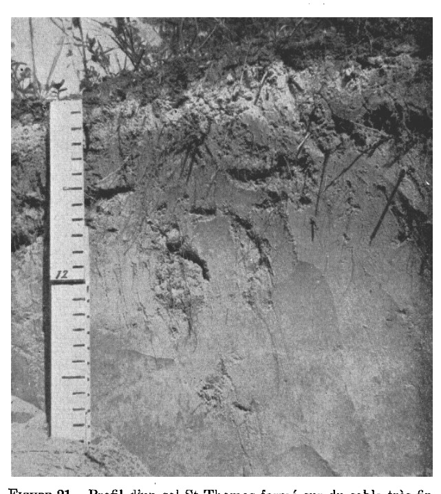
Figure 21. — Profil d'un sol St-Thomas formé sur du sable très fin.
Lorsqu'on les met en culture, il faut augmenter la faible fertilité naturelle de ces sols par des apports généreux de matière organique, par le chaulage et par le recours aux engrais chimiques complets. La terre doit être protégée contre l'érosion éolienne. Certains producteurs trouvent profit à irriguer le terrain pour assurer le succès des cultures commerciales.
SÉRIE ACHIGAN (6,157 acres)
La série Achigan forme une association caténaire avec la série St-Thomas sur un terrain plat et exempt de pierres, à des altitudes de 200 à 275 pieds au-dessus du niveau de la mer. Les plus grandes étendues se trouvent le long de la rivière Achigan et de petites étendues sont situées au pied des Laurentides, dans les comtés de Terrebonne et Deux-Montagnes.
Plus de 40 p. 100 de la roche-mère est un sable très fin, alors que le reste est du sable fin. Le sable repose sur l'argile marine à des profondeurs de 4 à 10 pieds de la surface.
Le sol est imparfaitement drainé à cause de l'horizontalité du terrain et de l'imperméabilité de l'argile sous-jacente. Comparée à la série St-Jude, qui appartient au catena Uplands, la série Achigan présente plus d'avantages au point de vue de l'humidité grâce à la plus grande finesse de sa texture et à la profondeur un peu plus grande du sable qui recouvre l'argile, ce qui permet une percolation interne légèrement supérieure. Les étendues boisées du sol Achigan sont recouvertes de pruche, de sapin, de bouleau blanc et bouleau gris, d'érable rouge, d'épinette blanche et de pin blanc.
L'unité cartographique Achigan (Ac) varie en texture depuis le sable limoneux très fin jusqu'au sable très fin. La description suivante est celle d'un profil intact de ce podzol à gley.
Horizon
Profondeur en pouces
A00
½-1½
Tapis brun foncé de racines et de feuilles décomposées.
A0
1- 2
Humus acide noir, assez bien décomposé.
A2
½- 3
Sable fin limoneux délavé gris clair; ne se voit généralement pas dans les champs cultivés, sauf en poches isolées; pH 5.0-5.5.
Bs1
½- 5
Sable fin brun rougeâtre tacheté faiblement de stries brun jaunâtre; la formation orstein n'est pas très rarement observée; friable et sans structure; pH 5.4-6.0.
Bs2
6-10
Sable fin ou très fin brun jaunâtre clair; tacheré de rouille et de gris; sédiments à peine visibles; pH 5.6-6.2.
Bg3
10-14
Sable fin ou très fin gris brunâtre clair ou jaune pâle, avec des plages et des stries de couleur ocre; plutôt ferme par endroit mais se brisant facilement en grains simples lorsqu'on le dégage; fines particules de mica très abondantes; changement très graduel de couleurs dans la partie inférieure du profil; pH 5.8-6.2.
C
Sable fin à très fin gris clair; légèrement tacheté; contenant beaucoup de mica; sédiments de 1 à 2 mm. d'épaisseur dont la couleur alterne de pâle à foncé; pH 6.0-6.5.
Il faut mentionner que la bande étroite de terre située immédiatement au-dessus des berges de la rivière Achigan est beaucoup mieux drainée que le sol Achigan ordinaire; cependant, la différenciation d'une si petite pièce de terre n'était pas possible sur les cartes.
Agriculture
Le sol Achigan cultivé est un sable très fin à sable fin limoneux brun dans toute la couche arable, l'horizon A2 délavé gris et l'horizon rougeâtre Bs1 présents dans le profil intact peuvent rarement s'observer en culture, parce qu'ils sont mêlés à la couche superficielle organique pour former la couche arable.
Environ 75 p. 100 de la terre est défrichée et sert à la culture mixte ou à des récoltes marchandes spéciales comme la pomme de terre, les légumes et les petits fruits. La fertilité naturelle de la terre n'est pas forte mais elle peut être améliorée par le drainage, le chaulage, l'incorporation de matière organique et d'engrais chimiques.
Lorsqu'on fait du drainage artificiel, il faut régler la profondeur et la distance entre les drains de façon à enlever l'eau libre du solum sans l'enlever de la roche-mère. Les cultivateurs font remarquer que la terre reste humide durant tout l'été et prétendent obtenir de meilleurs rendements durant les
étés plutôt secs. Pareilles assertions laissent croire que le drainage de la majorité des fermes pourrait être amélioré.
Certains cultivateurs disent éprouver des difficultés à faire croître le trèfle rouge et déclarent que la luzerne ne pousse pas du tout. Moyennant l'amélioration du drainage, le chaulage et des applications modérées d'engrais chimiques complets, il devrait être possible d'obtenir de bonnes récoltes de trèfle rouge, de trèfles Alsike et Ladino. La luzerne exigerait probablement un drainage artificiel très efficace et l'amélioration de la fertilité à une plus grande profondeur dans le solum.
La chaux devrait être appliquée sur les sols Achigan pour fournir le calcium requis et élever le pH à un niveau plus avantageux. Cependant, le chaulage ne représente qu'un des trois principaux facteurs de la rentabilité des terres agricoles, les deux autres étant le drainage approprié et l'application suffisante de fumier et d'engrais chimiques.
SÉRIE VAUDREUIL (5,772 acres)
Nous avons cartographié les sols Vaudreuil dans les terres basses des trois comtés. La terre est exempte de pierres, déprimée ou unie, dépourvue ou presque dépourvue de micro-relief et se situe à des altitudes de 200 à 250 pieds.
Le profil du sol s'est formé dans du sable fin, moyen ou occasionnellement grossier, recouvrant l'argile marine sur une épaisseur de 2 à 3 pieds. Une couche épaisse de matière organique s'est accumulée à la surface de ces sols mal drainés. En raison du substratum d'argile imperméable la nappe d'eau demeure constamment élevée ce qui rend le sous-sol froid et mal aéré. La végétation arborescente consiste principalement en mélèze, thuya, épinette, érable rouge et orme.
Suit une description générale d'un sable limoneux cultivé Vaudreuil (V) qui est le type cartographié. Le sol appartient au groupe des sols organiques minces.
Horizon
Profondeur en pouces
Ae
3 - 8
Sable limoneux noir à gris foncé ou brun grisâtre foncé, riche en matière organique, très perméable et friable; pH 5.5-6.5.
G1
2 - 6
Sable gris pâle à structure monogranulaire, meuble et perméable; pH 5.7-6.5.
G2
12-22
Sable gris à gris jaunâtre clair, moyen et fin (occasionnellement grossier) contenant des particules sombres de mica, structure; perméable; pH 6.5-6.8.
D
Argile grise imperméable; pH 6.8-7.2.
Agriculture
Les sols Vaudreuil passent pour des terres peu propres aux grandes cultures en général, mais durant les années sèches ou aux endroits où le drainage artificiel est suffisant, on peut obtenir des récoltes profitables de laitue, choux, carottes, pommes de terre, haricots verts, pois verts et fraises, moyennant une bonne fertilisation. Selon le système habituel de culture, ce terrain, dont la fertilité naturelle est faible et le drainage très insuffisant, ne reçoit pas suffisamment de soins ni de fertilisants pour produire des récoltes profitables. Le trèfle pousse mal et les champs de foin sont généralement envahis par les mauvaises herbes. Les céréales sont sujettes à la verse si elles ne reçoivent pas les fertilisants
appropriés. On ne cultive généralement pas de maïs dans ces sols froids. La croissance de l'herbe est lente dans les pâturages au printemps et elle n'est jamais très bonne lorsqu'on a recours aux méthodes ordinaires de culture.
Bien que ce sol ne se prête pas à l'industrie laitière ni à la culture mixte, on peut en tirer de bons profits en culture maraîchère si on a soin de le bien drainer et fertiliser. Pour obtenir des récoltes profitables, il faut en premier lieu que le drainage soit bon, mais la matière organique tend à se décomposer rapidement, de sorte qu'il faut en ajouter ou en retourner au sol pour la maintenir au niveau approprié. Une fois le sol bien drainé, il faut le chauler. On tenterait en vain de cultiver sans recourir aux engrais chimiques, car le sol n'a pas la fertilité nécessaire ni l'équilibre requis des éléments nutritifs. Le phosphore est l'élément nutritif qui fait le plus défaut, suivi de la potasse. On applique l'azote en faible quantité sur les céréales pour éviter la verse, mais cet élément serait vraisemblablement avantageux pour les cultures maraîchères à croissance rapide, spécialement les légumes feuillus.
SÉRIE ST-DAMASE (12,185 acres)
Les sols St-Damase se présentent en de nombreuses petites étendues dispersées dans les terres basses. Ils se trouvent sur petites ondulations sableuses qui émergent légèrement au-dessus des étendues unies d'argile, à des altitudes variant de 50 à 250 pieds. Les dépôts de sable, qui ont généralement une profondeur de 1 à 3 pieds et occasionnellement de 4 à 5 pieds, se présentent comme des îlots sur la plaine d'argile ou comme des transitions entre le sable et l'argile.
Il n'y a que peu de ruissellement sur les sols de la série St-Damase. Le drainage effectif varie de modérément bon à imparfait selon la profondeur de la couche de sable au-dessus de l'argile imperméable et aussi selon la topographie de l'argile. Aux endroits où les sols St-Damase sont entourés d'argile unie, le drainage est modérément bon au centre des ondulations et imparfait sur les côtés. Les côtés des îlots de sable eux aussi sont modérément bien drainés si le substratum d'argile est en pente forte, comme c'est le cas le long des ravins et des talus.
La description suivante de profil représente les conditions ordinaires en ce qui concerne le drainage et la profondeur du sable au-dessus de l'argile. Le sol St-Damase (Dm) appartient au groupe des podzols.
Horizon
Profondeur en pouces
Ae
0-7
Terre franche sableuse légère à sable limoneux brun rougeâtre foncé, très friable; structure grumeleuse et monogranulaire; pH 4.8-5.6.
A2
A l'état naturel, on observe généralement une couche délavée d'une profondeur de ½ à 1½ pouce, mais cette couche se mélange avec l'horizon organique primitif et une partie de l'horizon B dans la couche cultivée.
B2
7-10
Terre franche sableuse légère à sable limoneux rouge jaunâtre, structure grumeleuse très faible et structure monogranulaire, très friable et perméable, tachetures occasionnelles, pH 5.2-5.8.
B3
10-18
Sable limoneux brun jaunâtre avec marbrures grossières à faible contraste de brun grisâtre, de brun et d'un peu de rouge jaunâtre; structure monogranulaire; perméable; pH 5.6-6.4.
D
Argile tachetée de brun grisâtre au-dessus de l'argile grise; pH 6.8-7.2.
Il y a beaucoup de variations dans la profondeur du sable au-dessus de l'argile; généralement, la couche de sable est plus profonde au centre des ondulations et devient plus mince sur chaque côté jusqu'à ce qu'elle fasse place à la terre franche argileuse Ste-Rosalie ou à la terre franche argileuse Rideau.
Agriculture
Les sols St-Damase sont en partie cultivés et en partie occupés par de petits lots boisés de ferme. Lorsqu'ils sont cultivés, ils servent à la culture générale et quelquefois à la culture maraîchère. La fertilité du sol est naturellement faible, mais on peut améliorer de beaucoup ces sols par l'emploi généreux de matière organique et d'engrais chimiques. Le chulage est nécessaire à la croissance normale des légumineuses. On voit de bonnes luzernières là où le sol a été convenablement préparé.
SÉRIE COURVAL (2,611 acres)
Les sols Courval se présentent sous forme de plusieurs petites étendues dispersées dans les terres basses. Ces sols unis, exempts de pierres, se sont formés sur un dépôt sableux de 8 à 14 pouces d'épaisseur au-dessus des argiles marines. Le drainage externe est lent de même que la percolation interne, de sorte que le drainage effectif est faible.
La description suivante représente le sol ordinaire Courval cultivé (Cv). Ce sol appartient au groupe des sols gleisoliques gris foncé.
Horizon
Profondeur en pouces
Ap
0-7
Terre franche sableuse moyennement fine, brun grisâtre; structure granuleuse fine et monogranulaire; friable, très perméable; pH 5.6-6.2.
A2g
7-10
Terre franche sableuse légère grise et sable moyennement fin avec quelques plages de terre franche argilo-sableuse; textures grossières à faible contraste de gris clair et de brun grisâtre. (Cette couche est toujours présente dans les sols intacts, mais elle a été détruite dans plusieurs profils cultivés).
D1
10-20
Argile tachetée gris brunâtre; structure cuboïde fine et fragile; plastique et imperméable; pH 5.8-6.6
D2
Argile grise; structure variable: cuboïde à massive; plastique et collante, imperméable; pH 6.6-7.3.
L'épaisseur variable de la couche de sable au-dessus de l'argile est la cause de plusieurs variations de texture de la surface dans les sols cultivés. Le labour profond des profils les plus minces a mélangé une partie de l'argile sous-jacente avec le sable. Dans de tels cas, la texture de la surface devient beaucoup plus fine de sorte qu'il peut y avoir dans le même champ de la terre franche sablo-argileuse avec de la terre franche sableuse dans un arrangement très compliqué.
Agriculture
Les sols Courval ressemblent aux sols Ste-Rosalie à bien des égards, mais leur fertilité naturelle et leur drainage sont inférieurs. L'eau s'infiltre rapidement à travers la surface sableuse et un drainage artificiel efficace s'impose pour enlever l'excès d'eau qui s'accumule au-dessus du substratum imperméable d'argile unie.
Les sols Courval servent communément à l'industrie laitière et aux grandes cultures en général. Les rendements des cultures ordinaires varient de passables à pauvres. L'amélioration des rendements dépend de l'efficacité du drainage artificiel, du chaulage approprié et du recours aux engrais chimiques complets. Le labourd profond mélange le sous-sol d'argile massive au sable de surface de façon à rendre l'humidité plus convenable et à accroître la capacité de rétention d'eau de la couche arable, ce qui améliore la fertilité.
SÉRIE COTEAU (673 acres)
Les sols Coteau se rencontrent sur des terrains ondulés à des altitudes de 100 à 225 pieds dans les terres basses. Le roche mère varie de terre franche sableuse fine alluvionnaire à sable limoneux très fin surmontant l'argile marine sur une épaisseur de 4 à 8 pieds. Le drainage naturel du terrain est bon, grâce à son relief, à sa position et à la perméabilité modérée de l'alluvium.
La terre franche sableuse fine (Ct) décrite ci-dessous est le seul type cartographié; elle appartient au groupe des podzols.
Horizon
Profondeur en pouces
Ae
0- 7
Terre franche sableuse fine, brune; structure granuleuse fine très friable et structure monogranulaire; capacité passable de rétention d'eau; pH 5.3-5.8.
B21
7-14
Terre franche sableuse, fine, brun rougeâtre pâle; très friable; quelques granules fins parmi les grains simples; pH 5.3-6.0.
B22
14-30
Terre franche sableuse légère, brun jaunâtre clair à sable limoneux fin; structure monogranulaire; capacité de rétention d'eau plus faible que dans l'horizon B21; pH 5.3-6.3.
C
30-50
Sable limoneux fin à terre franche sableuse fine, légère, gris brunâtre clair à gris pâle; pH 6.2-6.7.
D
Argile marine.
À l'état vierge, l'horizon A2 est d'environ 1 à 3 pouces d'épaisseur.
Agriculture
Tous les sols Coteau sont cultivés. Leur fertilité naturelle n'est que modérée et ils réagissent bien aux engrais chimiques, au fumier et à la chaux. On peut les utiliser pour une grande variété de cultures, mais ils conviennent particulièrement aux cultures de primeurs. La luzerne peut se cultiver sur des terrains bien fertilisés et chaulés. Les profits tirés des grandes cultures et des cultures maraîchères varient considérablement avec le type d'exploitation et la quantité d'engrais chimiques.
SÉRIE SOULANGES (909 acres)
Les sols Soulanges se rencontrent près de Terrebonne et de Grenville à des altitudes de 100 à 225 pieds. Ils se trouvent sur du terrain uni ou presque uni et sont imparfaitement à plutôt mal drainés. La roche mère est une terre franche alluvionnaire sableuse très fine reposant sur de l'argile marine sur une profondeur de 2 à 6 pieds.
Les sols Soulanges se présentent en association complexe avec les sols Baudette qui sont formés de dépôts alluvionnaires limoneux. Nous n'avons cartographié que la terre franche sableuse très fine Soulanges (S) et sa description donnée ci-dessous représente un podzol à gley cultivé.
Horizon
Profondeur en pouces
Ac
0 - 6
Terre franche sableuse très fine, brune; structure granuleuse faible; très friable; pH 5.2-5.8.
Bg1
6-16
Terre franche sableuse très fine, brun jaunâtre foncé; marbrures modérées de brun jaunâtre et de gris brunâtre; poches de terre franche limoneuse et de sable fin; pH 5.8-6.2.
Bg2
16-30
Terre franche sableuse fine, brun jaunâtre; tachetures de gris jaunâtre clair et de brun rouille; friable; pH 6.0-6.4.
Les sols Soulanges sont consacrés aux grandes cultures ordinaires. Leur fertilité naturelle n'est que passable, mais elle peut s'améliorer considérablement par le drainage, le chaulage et le recours au fumier et aux engrais chimiques complets.
SÉRIE BAUDETTE (512 acres)
Les sols Baudette se rencontrent près de Calumet et de Terrebonne. Comme les sols Soulanges avec lesquels on les trouve, les sols Baudette sont formés de dépôts alluvionnaires reposant sur l'argile Champlain. La composition des alluvions Baudette varie de terre franche à terre franche limoneuse ou terre franche argilo-limoneuse avec des couches de terre franche sableuse très fine. La profondeur du dépôt au-dessus de l'argile varie de 30 à 48 pouces.
La terre varie d'unie à légèrement ondulée et le drainage effectif d'imparfait à pauvre. La pluie est absorbée par l'alluvion perméable, mais son écoulement en profondeur est bloqué par le substratum d'argile imperméable.
La texture du sol de surface dans la région cartographiée varie de terre franche argilo-limoneuse à terre franche limoneuse (Bd). La description suivante donne les principales caractéristiques du profil qui appartient au groupe des sols gleysoliques gris foncé.
Terre franche limoneuse brun grisâtre, généralement en feuillets; quelques tachetures de gris jaunâtre clair et de brun; friable; pH 5.4-6.0.
Bg2
12-20
Terre franche brune et terre franche limoneuse avec quelques tachetures de gris et de brun rouille; en feuillets; très friable; pH 5.8-6.2.
C
20-40
Matériaux brun jaunâtre foncé variant en texture de terre franche sableuse fine à terre franche limoneuse et à terre franche argilo-limoneuse; fortement tachetés; perméables et friables; pH 5.8-6.4.
D
Argile marine.
Agriculture
Une fois améliorés par le drainage et le chaulage, les sols Baudette se prêtent bien à l'agriculture. Ils sont consacrés aux principales grandes cultures, et les rendements sont généralement passables à bons. Il faut bien améliorer le drainage et bien corriger l'acidité pour rendre profitable la culture de la luzerne.
Les engrais phosphatés et le fumier pourvoient aux principales exigences de fertilisation pour la majorité des grandes cultures, mais les engrais chimiques complets conviennent mieux aux cultures commerciales à croissance rapide.
SÉRIE ST-BENOÎT (3,481 acres)
Les sols St-Benoît se rencontrent dans les terres basses. Le terrain varie généralement d'ondulé à légèrement vallonné. La roche mère est un sable ou un sable limoneux déposé sur le till calcaire. La profondeur du dépôt est généralement de 2 à 5 pieds, mais elle peut être occasionnellement un peu plus grande. Il y a quelques pierres à la surface ou dans le dépôt, la fréquence des pierres dépendant de l'épaisseur du sable au-dessus du till.
Le drainage interne et externe varie de rapide à modérément rapide et il n'y a que peu de danger d'érosion. Le solum est très perméable et sa capacité de rétention d'eau est très faible. Lorsqu'on peut observer un couvert forestier, on rencontre surtout l'érable à sucre et du hêtre.
La texture de la surface est un sable limoneux ou une terre franche sableuse légère, mais nous n'avons pas cartographié ces différences. La description suivante de la série St-Benoît est représentative du groupe des sols bruns podzoliques.
Horizon
Profondeur en pouces
Ae
0-6
Sable limoneux moyen à fin brun foncé; quelques granules très friables parmi les grains simples; pH 5.6-6.3.
B2
6-18
Sable limoneux fin ou moyen brun foncé, à terre franche sableuse légère; pH 5.8-6.6.
B3
18-26
Sable limoneux moyen brun jaunâtre foncé; sans structure; pH 6.6-7.2.
C
26-42
Sable moyen brun jaunâtre clair, avec certaines plages brun grisâtre de matériaux plus fins; meuble et perméable; pH 6.6-7.4.
D
Till calcaire, brun grisâtre; pH 7.5-7.8.
Agriculture
Presque tous les sols St-Benoît sont ou ont été en culture et ont servi à une grande variété de cultures. Cependant, le terrain n'est que passable pour la majorité des grandes cultures. Les cultures répondent bien à des applications de fumier, d'engrais chimiques et de chaux. Ces sols conviennent le mieux aux vergers et aux cultures maraîchères de primeurs. La luzerne vient bien lorsque le sol est chaulé et modérément fertilisé.
Les bonnes méthodes d'exploitation des sols St-Benoît comportent la conservation de l'humidité du sol et de la matière organique, l'emploi de chaux et de fumier et des applications légères et fréquemment répétées d'engrais chimiques complets.
SÉRIE CHICOT (6,279 acres)
Les sols Chicot se rencontrent le long de la rivière des Mille-Îles entre St-Eustache et Terrebonne, à des altitudes de 100 à 200 pieds. Ils forment une association complexe avec les séries St-Bernard, Châteauguay et autres. Le terrain est ondulé à légèrement vallonné. Le solum a une capacité modérée de rétention d'eau et consiste en une couche de 2 à 4 pieds de terre franche sableuse très fine à sable limoneux très fin reposant sur du till calcaire. Le sable est d'origine alluvionnaire et contient souvent des plages ou couches discontinues de terre franche argilo-sableuse ou d'argile sableuse.
Le drainage effectif de la terre varie de bon à légèrement défectueux. La rapidité de percolation à travers le solum est modérée, sauf aux endroits où elle est retardée par des couches de matériaux fins. Le solum peut absorber des pluies assez fortes, mais il peut se produire du ruissellement pendant les pluies très abondantes et ce ruissellement peut causer de l'érosion grave sur les pentes nues.
Nous avons cartographié dans la série Chicot la terre franche sableuse légère (Cs) et la terre franche sableuse fine (C). La terre franche sableuse fine est plus répandue et nous la décrivons ci-dessous. Elle représente le groupe des sols gris bruns podzoliques.
Horizon
Profondeur en pouces
Ae
0-8
Terre franche sableuse fine brun foncé; structure grumeleuse fine; très friable; pH 5.8-6.2.
A21
8-16
Terre franche sableuse légère fine brun jaunâtre à brune; très friable; couleur uniforme avec mouchetures peu prononcées; pH 5.8-6.2.
A22
16-24
Terre franche sableuse ou terre franche argilo-sableuse avec plages de terre franche argileuse brune; légèrement friable à légèrement ferme; mouchetures délicates occasionnelles; pH 6.0-6.4.
B2
24-48
Terre franche sableuse brun foncé et brune avec stries et poches d'argile sableuse ou de terre franche argileuse, avec mouchetures; pH 6.5-6.9.
CD
Till calcaire.
Agriculture
Les sols Chicot servent aux cultures maraîchères et aux vergers mais principalement aux grandes cultures. Le sol Chicot est excellent pour le jardinage, mais il ne se prête pas aussi bien que les sols St-Bernard et Laval aux cultures des primeurs. La terre répond bien à la fumure et à la fertilisation aux engrais chimiques complets. Le chaulage peut être profitable lorsque l'alluvium sableux
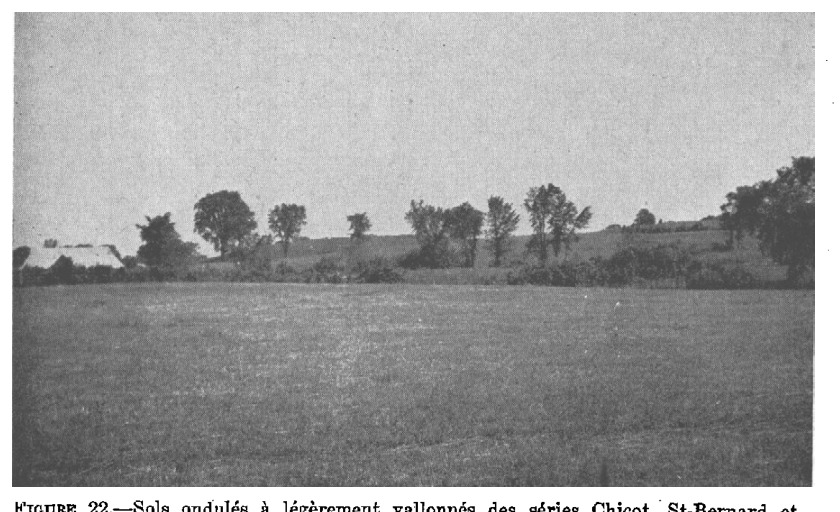
FIGURE 22.—Sols ondulés à légèrement vallonnés des séries Chicot, St-Bernard et Châteauguay.
est profond au-dessus du till calcaire. La luzerne peut être cultivée avec succès si l'on fertilise légèrement avec de la potasse et du phosphore. Les pratiques les plus rémunératrices pour les sols Chicot sont le maintien de la matière organique et de la fertilité par l'emploi du fumier et des engrais chimiques, ainsi que la répression de l'érosion par l'eau.
SÉRIE BOTREAUX (2,035 acres)
Nous avons cartographié les sols Botreaux au voisinage de La Trappe, St-Joseph-du-Lac et Oka à des altitudes variant de 175 à 400 pieds. Comme les sols St-Benoît et les sols Chicot, les sols Botreaux se sont formés de sable reposant sur du till calcaire. Ils se rencontrent sur des terrains affaissés ou en pente, — au pied ou le long de la partie inférieure des arêtes de till recouvertes d'alluvions. Les eaux d'infiltration qui traversent le sable, au-dessus du till en pente, se rassemblent dans les dépressions ou le long de la partie inférieure des pentes de façon à rendre le milieu frais et mal drainé. Il peut y avoir de l'érosion superficielle sur les pentes nues aux endroits où le sable fin devient saturé d'eau. Le sol de surface est lisse et généralement exempt de gros boulders, mais il peut y avoir de nombreux cailloux dans certains endroits. On trouve occasionnellement des coquillages dans les dépôts sableux.
Suit une description d'un sable limoneux fin Botreaux (Bx), le seul type cartographié dans cette série. Il appartient au groupe des sols gleysoliques gris foncé.
Horizon
Profondeur en pouces
Ao
0-6
Sable limoneux fin brun très foncé à noir, riche en matière organique; très friable; pH 6.6-7.0.
G1
6-9
Sable fin jaune pâle à gris clair, sans structure, presque meuble, pH 6.8-7.4.
G2
9-20
Sable fin olive pâle à gris olive clair, sans structure, légèrement ferme par endroits, stries jaunâtres, pH 7.4-7.8.
G3
20-36
Sable gris brunâtre clair à gris olive clair, sans structure, légèrement ferme par endroits, pH 7.4-7.8.
C
36-46
Sable fin gris clair avec stries de jaune clair; plusieurs particules de mica présentes; toujours saturé d'eau; effervescence occasionnelle; pH 7.4-7.8.
D
Till calcaire.
Agriculture
La matière organique des sols Botreaux est concentrée à la couche superficielle et l'on n'en trouve à peu près pas au-dessous de la couche arable. Le drainage interne est très lent et les racines des plantes ne se développent pas en dessous de six à huit pouces de la surface. Les plantes à racines profondes comme la luzerne ne peuvent prospérer dans ces sols et les plantes hydrophiles tendent à remplacer les graminées dans les pâturages et les champs de foin.
Tous les sols Botreaux de la région cartographiée sont défrichés et servent à la culture mixte. Il est impossible de semer tôt, surtout lorsque le printemps est pluvieux.
Vu qu'il y a toujours un excès d'eau dans le sol, les rendements des récoltes sont relativement plus élevés durant les années sèches.
Pendant les sécheresses, les pâturages peuvent fournir une bonne pousse d'herbes. Un drainage artificiel efficace devrait accroître de beaucoup les rendements. Le labour en contre-pente devrait éviter toute érosion désastreuse. Des fossés ou des drains perpendiculaires aux pentes arrêtent l'eau d'infiltration s'ils.
sont légèrement plus profonds que la zone d'infiltration. Moyennant un drainage artificiel efficace, les sols Botreaux se prêtent à certaines cultures maraîchères tardives et spécialement à la production des fraises et des framboises. Des engrais chimiques riches en potasse et spécialement en phosphates sont indiqués pour toutes les récoltes, une fois le terrain drainé.
SÉRIE CHÂTEAUGUAY (4,520 acres)
Les sols Châteauguay se rencontrent dans les terres basses des trois comtés à des altitudes de 100 à 200 pieds et on les trouve, comme les sols Chicot, principalement le long de la rivière des Mille-Îles entre St-Eustache et Terrebonne. Le terrain est uni, ondulé à légèrement vallonné et l'on voit quelques pierres à la surface.
On présume que la roche mère est d'origine alluvionnaire; sa texture varie de terre franche argileuse à terre franche argilo-sableuse avec des poches d'argile et de terre franche sableuse. Elle surmonte le till calcaire à des profondeurs de quelques pouces à environ 4 pieds. Le sol varie de bien à imparfaitement drainé et sa capacité de rétention d'eau est excellente. La structure du sous-sol favorise l'aération, le drainage et la pénétration des racines en profondeur.
Pour reconnaître les grandes variations dans la profondeur de l'alluvion au-dessus du till calcaire, nous avons divisé la série en terre franche argileuse et en terre franche argileuse mince, sur la carte, la profondeur de 18 pouces servant de ligne de démarcation. Les sols profonds sont du type de formation des sols podzoliques gris brun mais on trouve aussi des profils de sols bruns forestiers dans les sols minces. Comparés aux sols profonds, les sols minces ont une réaction plus élevée et le sous-sol contient plus de pierres. Dans certaines étendues de terre franche argileuse mince, on trouve occasionnellement des affleurements de till qui brisent la nature unie du terrain et donnent lieu à la présence de beaucoup de pierres et de boulders. Bien que la terre franche argileuse mince (Ch-a) recouvre de grandes superficies, la terre franche argileuse (Ch) est le sol le plus important de la série Châteauguay. Suit une description complète de son profil. Le sol dominant appartient au groupe mal drainé des sols gris brun podzoliques.
Horizon
Profondeur en pouces
Ae
0-7
Terre franche argileuse brun grisâtre très foncé; structure granulaire; friable à légèrement ferme; légèrement collante et plastique; pH 6.2-6.5.
A21
7-18
Terre franche argileuse ou argile brun grisâtre à brune, avec poches de texture plus grossière; légèrement à modérément ferme; modérément plastique et collante; agrégats surtout du type granuleux; pH 6.2-6.5.
A22
18-30
Terre franche argileuse ou argile brune à brun grisâtre foncé, avec des taches de textures plus grossière et de couleur brun clair; présentant à l'occasion des taches et des traces brun foncé le long des galeries ouvertes par les racines; mouchetures fines peu prononcées; gros agrégats cuboïdes sub-anguleux; même consistance que ci-dessus; pH 6.2-6.5.
B2
30-40
Argile à terre franche argileuse brun foncé et brune; texture variable mais plus fine que celle de l'horizon ci-dessus; agrégats cuboïdes sub-anguleux et de forme irrégulière; ferme; pH 6.4-6.8.
CD
Till calcaire.
Il y a quelques fragments de pierre et certaines particules de mica dans tout le solum. La plupart de ces fragments sont des calcaires ou des calcaires magnésiens fortement altérés, mais certains plus gros éclats ne sont pas complètement désagrégés et contiennent encore des carbonates.
Agriculture
Les sols Châteauguy comptent parmi les meilleurs sols agricoles du Québec. Ils ont d'excellentes caractéristiques physiques et ils se prêtent bien à diverses cultures. Dans la région cartographiée, la terre sert principalement à l'industrie laitière et produit de belles récoltes. Cependant, on obtient également d'excellents résultats lorsque le sol est utilisé pour les cultures maraîchères et les vergers.
De tous les sols de la région, les sols Châteauguy sont probablement ceux qui se rapprochent le plus de l'idéal dans nos conditions climatiques. Parmi les caractéristiques souhaitables, mentionnons la topographie excellente, le bon drainage, la réaction et la structure du sol, l'excellente capacité de rétention d'eau et la fertilité naturelle. Bien que la fertilité puisse n'être pas aussi élevée que chez certains autres sols, il est rare que les conditions climatiques inverses et soient responsables d'une baisse considérable des rendements. Les rendements obtenus selon le système ordinaire d'exploitation pourraient probablement s'accroître moyennant le recours plus généreux aux engrais chimiques, en plus du fumier qu'on applique communément.
SÉRIE MACDONALD (1,069 acres)
Les sols Macdonald sont associés aux sols Châteauguy. La terre est presque unie ou légèrement déprimée. Le drainage externe est lent et le drainage interne plutôt lent. Le profil s'est formé d'alluvion, dont la texture est généralement celle d'une terre franche argileuse, reposant sur un till calcaire à une profondeur moyenne de 2.5 pieds. Ce n'est qu'à l'occasion qu'on trouve des pierres dans le profil du sol à la surface. Suit une description d'un sol cultivé Macdonald (M). Il appartient au groupe des sols gleisoliques gris foncé.
Horizon
Profondeur en pouces
Ae
0 - 6
Argile à terre franche argileuse brun foncé; granuleuse et ferme; modérément à légèrement plastique et collante; pH 5.8-6.2.
Bg1
6-14
Argile brun grisâtre foncé; tachetures brun grisâtre à brun jaunâtre foncé; poches de sable gris à structure cuboïde sub-angulaire; pH 6.2-6.5.
Bg2
14-22
Terre franche argileuse à argile brun grisâtre foncé; tachetures brun jaunâtre; stries ou plages sableuses; pierres désagrégées de couleur ocre; cuboïde, légèrement ferme, légèrement à modérément plastique et collante; pH 6.5-7.0.
CD
Till calcaire.
Agriculture
Pratiquement tous les sols Macdonald sont cultivés et servent principalement aux grandes cultures. Lorsque le drainage artificiel est pratiqué, le terrain est bon pour les cultures mixtes et l'industrie laitière. Il se prête mal aux cultures maraîchères ou aux vergers sans un bon drainage souterrain. Selon la méthode ordinaire de gestion, les cultures ordinaires produisent de bons rendements. Les pommes de terre peuvent être sujettes à la gale, mais elles produisent des ren-
dements passables. La fertilité naturelle de la terre est bonne et il ne faut que des applications modérées d'engrais chimiques et de fumier pour maintenir la productivité du sol.
SÉRIE LACHUTE (2,298 acres)
Les sols Lachute se rencontrent le long des rivières qui drainent les terres hautes, principalement entre Lachute et St-Jérôme le long de la rivière du Nord. La roche mère est une terre franche limoneuse ou sableuse très fine récemment déposée par les rivières.
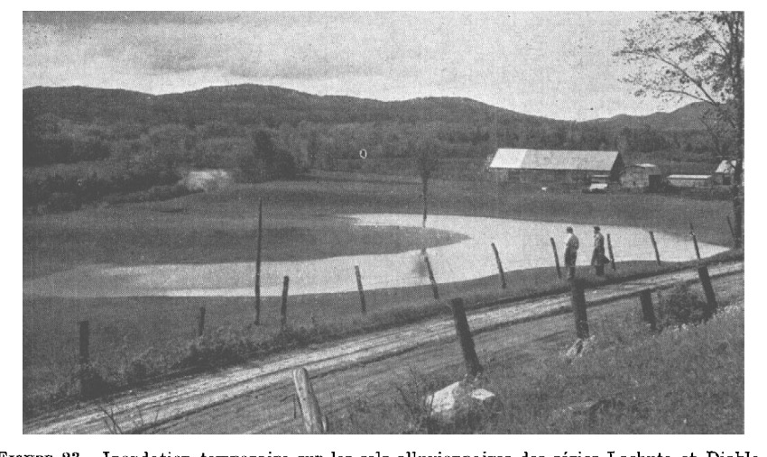
FIGURE 23. — Inondation temporaire sur les sols alluvionnaires des séries Lachute et Diable.
Durant les périodes d'inondation, il peut se produire des dépôts ou des modifications des matériaux déjà déposés. Les dépôts se font lorsque les rivières sont paresseuses et font des méandres dans le terrain plat. Au cours de la déposition, les rivières ont souvent changé leur cours et se sont fait de nouvelles levées ou ont détruit celles qui existaient déjà. La micro-topographie qui en résulte est souvent brisée par plusieurs petites ondulatoires, mais la topographie générale du sol est unie.
Comme c'est le cas de la majorité des dépôts récents de rivières, la roche mère du sol Lachute est très perméable. L'humidité dans le sol est réglée par le niveau de l'eau dans la rivière. Après les inondations, l'excès d'eau s'écoule rapidement à travers le sous-sol perméable. Grâce à l'excellent drainage interne et à la bonne capacité de rétention d'eau, les conditions d'humidité sont meilleures dans les sols Lachute que dans le cas de la majorité des sols environnants.
La série complète a été cartographiée comme terre franche limoneuse, bien qu'il y ait occasionnellement de petites étendues de terre franche sableuse très fine. Les profils sableux ont les mêmes caractéristiques générales que la terre franche limoneuse décrite ci-dessous. Les sols Lachute appartiennent au groupe des sols alluvionnaires, mais en certains endroits d'où les eaux d'inondation se retirent rapidement, on aperçoit la couleur estompée caractéristique de la formation d'un horizon B.
Horizon
Profondeur en pouces
Ae
0 - 7
Terre franche limoneuse brune à brun foncé; très friable; structure granuleuse fine; pH 5.5-5.8.
B2
7-27
Terre franche limoneuse brun jaunâtre à olive clair; très friable; très perméable; bonne capacité de rétention d'eau; pH 5.6-6.0.
C
Terre franche limoneuse gris clair à terre franche sableuse très fine, friable, perméable; légères tachetures indiquant une élévation occasionnelle de la nappe d'eau; pH 6.0-6.2.
Entre Lachute et St-Jérôme se trouvent des bandes allongées, étroites des matériaux organiques inclus dans les sols Lachute. Dans la même étendue se trouvent également certaines dépressions humides qui ont été jadis les lits de la rivière.
Agriculture
Les sols Lachute sont excellents pour l'agriculture et peuvent servir à une grande variété de récoltes. Le plus grave désavantage de ces sols, c'est le danger d'inondation. Les inondations se produisent généralement une fois par année à la fin d'avril ou au début de mai et ne retardent pas gravement les semailles. On peut travailler le sol dès le retrait des eaux d'inondation.
Les sols Lachute ont une bonne fertilité naturelle et répondent bien aux engrais chimiques et au fumier. Bien que le sous-sol soit perméable et adapté aux plantes à racines profondes, la production de la luzerne est risquée parce que les eaux d'inondation peuvent demeurer assez longtemps sur le sol pour détruire les plantes. Le sol sert à toutes les grandes cultures ordinaires comme le foin, les céréales, le maïs d'ensilage et les plantes-racines, et les rendements comptent parmi les plus élevés qui puissent s'obtenir dans cette région. Les pommes de terre sont probablement la culture commerciale la plus pratiquée. Le terrain est souvent consacré à des pâturages qui produisent de bons herbages durant la saison. La proximité de l'eau de rivière dans les pâturages est un grand atout dans l'élevage des bovins laitiers.
SÉRIE DUCHÊNE (2,611 acres)
Nous n'avons cartographié les sols Duchêne que dans le comté de Deux-Montagnes, le long de la rivière du Chêne. Ils forment une couche de deux à cinq pieds d'alluvion argileuse récente reposant sur des dépôts de terre noire organique. L'alluvion est dérivée principalement d'argile marine grise de la région avoisinante.
Les sols Duchêne sont situés sur une terrasse de fond, seulement à quelques pieds au-dessus du niveau moyen de la rivière. Il s'ensuit que la terre est difficile à drainer et qu'elle est exposée aux inondations printanières. Après le retrait des eaux superflues, il faut quelques temps pour que la terre puisse être travaillée, vu que le sol a une très forte capacité de rétention d'eau. Cependant, l'argile qui repose sur les dépôts organiques a une excellente structure qui favorise le drainage interne et l'aération.
Les sols ont une surface d'argile gris très foncé bien granulée et riche en matière organique. Le sous-sol est une argile grise uniforme à structure variant de fortement granuleuse à cuboïde anguleuse et contenant des agrégats très fermes à durs. L'argile grise alluvionnaire est un peu semblable à l'argile marine.
Champlain qui constitue la roche mère des sols Rideau, Ste-Rosalic et Laplaine, mais la granulation de l'argile Duchêne et la présence d'un substratum organique la distinguent des argiles marines.
Agriculture
Il faut faire beaucoup de drainage si l'on veut tirer des rendements profi- tables des sols Duchêne. La rivière serpentante qui draine environ 150 milles carrés de terre basse est très paresseuse. Le cours de la rivière a été redressé par endroits et le lit a été approfondi de façon à permettre un drainage plus rapide et plus efficace du sol.
Les sols Duchêne servent à la culture du foin, des céréales et aux pâturages et produisent des rendements qui dépassent généralement ceux qu'on obtient sur les étendues d'argile plus élevées. Ils semblent avoir la plus forte fertilité naturelle de tous les sols de la région cartographiée et n'ont pas besoin de beaucoup de fertilisants pour produire d'excellentes récoltes. Le succès des récoltes sur ces sols dépend du drainage. Durant les années à printemps très pluvieux, alors que la rivière se tient à un niveau anormalement élevé, il n'est pas toujours possible de semer au bon moment et les plantes déjà établies, comme la luzerne, peuvent périr.
ALUVIONS DE NATURE MIXTE (5,14 acres)
Des alluvions non différenciées ont été cartographiées dans les terres basses des trois comtés à l'étude. Ces sols n'ont pu être divisés en séries parce que leurs constituants sont très mélangés et variables. Cependant, nous les avons cartographiés dans trois unités différentes séparées d'après la texture de la surface, en alluvions sableuses, en alluvions limoneuses et en alluvions argileuses. L'alluvion qui se rencontre en bordure du lac des Deux-Montagnes à Pointe-Calumet et à la baie Carillon est la plus étendue et consiste généralement en une couche limoneuse de huit pouces au-dessus d'un sable grossier.
Ces sols appartiennent au grand groupe des sols alluvionnaires. Ils sont d'origine récente et ont été déposés dans les régions basses où le drainage externe est bloqué ou aux endroits sujets aux inondations. Les exploitations sont rarement rentables sur pareil terrain et plusieurs ont été abandonnées pour faire place à la végétation forestière naturelle. Certaines régions défrichées servent de pâturages durant la période sèche de l'année.
Sols de la région élevée
Sols sur till
TYPE DE TERRAIN LAROSE (25,551 acres)
Les sols Larose se rencontrent à des altitudes de 300 à 1,100 pieds, presque exclusivement dans les hautes terres du comté d'Argenteuil. Le nom Larose a été donné à un groupe de sols appelés «type de terrain» (land type). Ces sols ont des profils variables, mais ils sont tous dérivés en grande partie de la formation calcaire précambrienne de Grenville. Certains profils sont formés sur un till glaciaire dont le calcaire cristallin est un constituant important; d'autres profils se sont formés directement sur l'assise rocheuse pour donner naissance à ce qu'on appelle un sol résiduaire ou semi-résiduaire. Les boulders sont généralement moins nombreux sur les sols Larose que sur les tills avoisinants et consistent principalement en gneiss, en quartzite et en granit, alors que les affleurements rocheux consistent le plus souvent en calcaire cristallin.
Les sols Larose se trouvent sur des terrains plus ou moins vallonnés dont le microrelief est brisé par de nombreux affleurements de calcaire. Le terrain est peu trop drainé à cause du ruissellement rapide et de la perméabilité, ainsi qu'en raison de la faible capacité de rétention d'eau du sous-sol et de la roche mère. Le drainage est excessif sur les buttes et aux endroits où le sol est complètement dérivé de calcaire cristallin. Cette formation rocheuse se brise facilement en cristaux grossiers qui permettent à l'eau de s'infiltrer hors d'atteinte des plantes à racines superficielles.
Le type de terrain Larose présente de nombreuses variations dans l'aspect de ses profils. La majorité des sols sont soit des lithosols, soit des sols bruns forestiers, soit des podzols. Des profils secondaires de sols bruns podzoliques et de podzols se sont formés sur le profil primaire des sols bruns forestiers et des sols gris brun podzoliques. La description qui suit donne certaines des principales caractéristiques observées dans des profils vierges formés en majeure partie de pierre à chaux cristalline.
Horizon
Profondeur en pouces
A0-1
1 - 2
Matériaux organiques rouge très sombre à brun rougeâtre très foncé; structure grumeleuse; très friable; pH 6.3-7.1.
A2
On voit occasionnellement des poches de la couche délavée du podzol.
B21
2 - 4
Terre franche sableuse légère brun rougeâtre foncé; structure granuleuse très fine et friable avec mica et calcaire cristallin désagrégé monogranulaire; très perméable; capacité de rétention d'eau plutôt faible; pH 6.6-7.4.
B22
8-18
Terre franche sableuse légère à grains grossiers brun rougeâtre contenant de nombreux fragments anguleux de calcaire cristallin ou des cristaux de calcite; très perméable; faible capacité de rétention d'eau; pH 7.4-7.6.
B3
6-12
Cristaux de calcite brun rougeâtre clair à gris rosâtre partiellement désagrégés et recouverts d'oxyde de fer; perméable à l'air et à l'eau; pH 7.6-7.9.
CD
Calcaire cristallin blanc et crevasses verticales à travers lesquelles l'eau s'infiltre à de grandes profondeurs.
L'horizon B3 est quelquefois remplacé par l'horizon B2 du type des sols gris brun podzoliques, sous forme d'une bande brun rougeâtre foncé d'une épaisseur de quelques pouces au-dessus de la pierre à chaux cristalline blanche ou rosâtre partiellement désagrégée. La couleur rougeâtée foncé du sol supérieur est la caractéristique la plus frappante qui différencie les sols Larose des sols de till avoisinants. Dans la région d'Oka, les profils ressemblent à ceux que nous avons décrits, mais les analyses chimiques montrent que les sols de cette région sont beaucoup plus riches en éléments nutritifs des plantes, spécialement en phosphore, que ne le sont les sols Larose de la région élevée des Laurentides. De telles différences sont vraisemblablement dues à la présence des roches intrusives okaïte près d'Oka.
Agriculture
Les sols Larose sont des sols pauvres. Les grandes cultures poussent mal à cause de la sécheresse du terrain et du bas niveau des éléments nutritifs essentiels aux plantes. Bien que de fortes étendues des sols Larose aient été défrichées et cultivées durant un certain temps, on ne les cultive plus guère aujourd'hui. Une
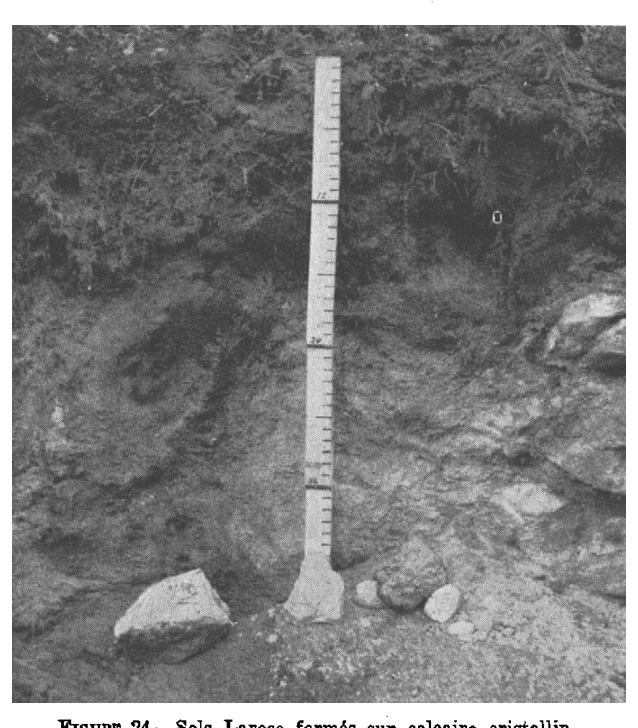
Figure 24. — Sols Larose formés sur calcaire cristallin.
bonne partie du terrain est abandonnée ou ne sert que comme pâturage où la croissance des herbes est très pauvre. Il se fait encore de la culture dans les champs les moins pauvres, mais les rendements sont bas. La luzerne est probablement la récolte qui rapporterait le plus, mais on ne la cultive que rarement. Lorsqu'on éprouve de la difficulté dans la culture de légumineuses comme la luzerne, cela est vraisemblablement dû à des carences de phosphore et de potasse. Lorsqu'on peut cultiver la luzerne avec succès, la terre peut avoir de la valeur, car il serait ensuite possible d'en améliorer la fertilité. Des applications généreuses de matière organique amélioreraient certainement la capacité de rétention d'eau et d'éléments nutritifs des plantes. Les analyses chimiques montrent que le phosphore et la potasse sont à un niveau bas et qu'il faut ajouter ces éléments sous forme d'engrais chimiques pour suppléer ce qui manque au fumier ou aux engrais verts. Comme le sol manque d'humidité durant la plus grande partie de la saison de végétation, toutes les pratiques de conservation de l'eau sont profitables aux récoltes.
Les parties défrichées qui ne sont pas propices à la culture devraient être reboisées. Les sols Larose sont profonds et se prêtent naturellement bien à la croissance de l'érable à sucre et du chêne rouge, en plus, probablement, de plusieurs autres espèces d'arbres.
SÉRIE STE-AGATHE (347,910 acres)
Les sols Ste-Agathe sont les sols de till les plus répandus de la région élevée. Ils se trouvent sur des terrains vallonnés et montagneux dans les comtés d'Argenteuil et de Terrebonne où ils se situent à des altitudes dépassant 700 pieds.
Le profil s'est formé sur une terre franche sableuse qui passe graduellement à un till sablo-graveleux et caillouteux dérivé principalement d'anorthosite, de gabbro-anorthosite avec un peu de gneiss ou de granit. Les dépôts glaciaires ont généralement de trois à douze pieds d'épaisseur. De nombreuses pierres et boulders de toutes grosseurs sont dispersés dans les dépôts et à la surface du sol. Les affleurements rocheux ne sont pas fréquents si ce n'est au sommet des hautes collines ou des montagnes.
Le drainage externe des sols Ste-Agathe est rapide, tandis que le drainage interne est modéré. Le solum est très perméable et sa capacité de rétention d'eau est passable. La roche-mère est beaucoup moins perméable et s'oppose à l'écoulement rapide de l'eau en profondeur. L'érosion par l'eau se produit aux endroits où le sol n'est pas recouvert de végétation. La majeure partie du sol Ste-Agathe est boisée et les arbres consistent principalement en érables à sucre, hêtres et bouleaux jaunes, avec des conifères par-ci par-là.
La description suivante du profil de terre franche sableuse fine Ste-Agathe (Ag) est le résultat d'observations généralisées faites en plusieurs endroits différents. Ce sol appartient au groupe des podzols.
Terre franche sableuse fine à terre franche lessivée gris pâle; très friable; pH 4.6-5.2.
B21
3-6
Terre franche à terre franche sableuse très fine, brune à brun rougeâtre clair; structure granuleuse fine très friable; quelques fragments de gravier; pH 5.0-5.4.
B22
13-15
Terre franche sableuse brune à brun jaunâtre; contenant un peu de gravier et de pierres; structure granuleuse fine; friable; pH 5.0-5.4.
B3
3-12
Terre franche sablo-graveleuse brun jaunâtre pâle à gris brunâtre pâle; mouchetée de gris et de rouille; très ferme à compacte; se brisant en fragments irréguliers; pH 5.2-5.6.
C
Till de terre franche sablo-graveleuse gris brunâtre à gris ou gris olive; contenant beaucoup de pierres; ferme à compact; se brisant en fragments irréguliers; pH 5.4-6.0.
Il n'y a que de légères variations de couleur et de texture. Des pierres se rencontrent dans tout le profil, mais elles sont plus nombreuses dans la partie inférieure du solum. La teneur en gravier du solum supérieur est beaucoup moins forte que celle de la roche-mère. Dans quelques cas, la partie supérieure du till paraît avoir été réassortie par l'action de l'eau, étant donné que les pierres sont beaucoup moins nombreuses qu'à l'ordinaire.
Agriculture
Les sols Ste-Agathe se rencontrent sur des pentes raides; ils sont très pierreux et par conséquent impropres à l'agriculture. Plusieurs des boulders ne peuvent être déplacés même par les machines modernes. Sauf sur les pentes les moins raides, on ne peut cultiver ces sols sans qu'il y ait danger d'une érosion grave. Dans certaines des parties les moins accidentées et sur les étendues les moins pierreuses, on peut obtenir des rendements passables. Les pâturages sont passables à pauvres et ne reçoivent généralement que peu d'attention.
Le sol est très acide et gagne beaucoup à être chaulé. Sur les terrains chaulés et fumés, les cultures répondent bien à des applications d'engrais chimiques complets. Les sols très pierreux ou en pente raide doivent rester boisés ou être reboisés. Certaines étendues peuvent être consacrées à des pâturages permanents, mais il faut que le sol reste constamment recouvert de bons herbages pour empêcher l'érosion. Les terrains unis, qui représentent un très faible pourcentage de ces sols, pourraient être consacrés alternativement aux cultures et aux herbages ou au foin, mais des mesures contre l'érosion s'imposent.
SÉRIE ET TYPE DE TERRAIN LAKEFIELD (138,660 acres)
Les sols Lakefield se rencontrent sur des terrains vallonnés et montagneux à des altitudes variant entre 600 et 2,000 pieds dans le secteur sud de la région laurentienne. La roche-mère est un till dérivé principalement de gneiss et de roches de quartz de la série géologique Morin et elle ressemble beaucoup à la roche-mère des sols Ste-Agathe. Tandis que le till Ste-Agathe est généralement profond, le till Lakefield est si mince qu'il s'est souvent altéré dans toute son épaisseur jusqu'à l'assise rocheuse qui affleure à maints endroits. Il y a des boulders à la surface du sol ainsi que dans le profil.
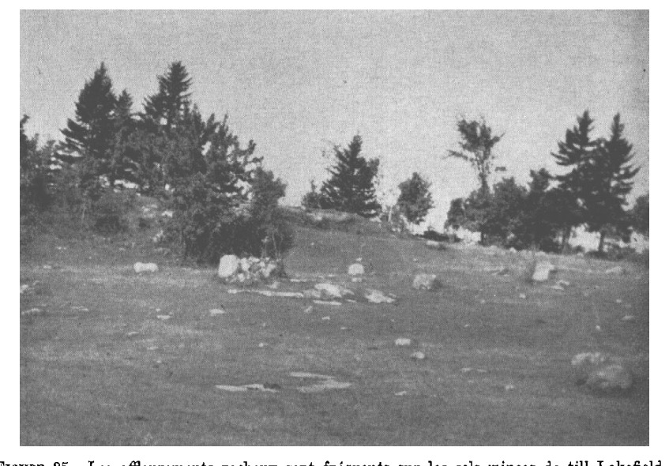
FIGURE 25.—Les affleurements rocheux sont fréquents sur les sols minces de till Lakefield.
Le type de terrain Lakefield consiste en une terre franche sableuse bien drainée, avec des dépressions mal drainées, des affleurements rocheux et une mince couche de till au-dessus du roc. L'érosion du sol peut se produire à une allure rapide surtout autour des affleurements rocheux en raison du peu de profondeur des dépôts. La majeure partie du sol Lakefield est recouverte d'arbres, principalement d'érables à sucre et d'érables rouges avec quelques épinettes, thuyas (cèdres) et bouleaux blancs.
Le sol bien drainé représente la série Lakefield (Lk) et appartient au groupe des podzols. Des sols bruns podzoliques peuvent aussi se rencontrer dans les endroits bien drainés. Suit la description du profil dominant de la terre franche sableuse fine Lakefield.
Horizon
Profondeur en pouces
A0-1
0-2
Couche minérale humifère noir grisâtre de feuilles et de racines bien décomposées; très friable; pH 4.0-4.5.
A2
2-3
Terre franche sableuse fine délavée gris clair, avec certains petits fragments de pierres; très friable; pH 4.5-5.0.
B21
3-10
Terre franche sableuse brun rougeâtre avec des plages de brun et de brun jaunâtre; structure granuleuse fine, friable, perméable; pH 5.0-5.4.
B22
10-24
Terre franche sableuse brun jaunâtre clair à brun olive; légèrement ferme en place, mais friable à la pelle; perméable; fragments de gravier et de pierres; pH 5.0-5.6.
C
24-30
Till de terre franche sableuse gris jaunâtre clair à gris olive; très ferme; contenant plusieurs pierres et un peu de gravier; pH 5.1-5.8. Le till non désagrégé n'est pas toujours présent; dans plusieurs cas, l'horizon brun B repose directement sur l'assise rocheuse.
D
Assise rocheuse.
Agriculture
Des étendues limitées de sols Lakefield ont été défrichées et servent principalement pour les pâturages et la production de foin. Il n'a pas été pratique d'utiliser ces sols d'une façon plus extensive à cause des nombreux boulders, affleurements rocheux, pentes raides et du grand nombre de petits marécages. La fertilité naturelle varie de modérée à faible. Les analysés chimiques montrent que le sol ne contient que très peu de phosphore total et assimilable dans tout le solum. L'acidité est élevée dans le sol de surface ainsi que dans le sous-sol et dans la roche mère. L'amélioration de la fertilité demande une attention constante. Le chaulage et la fertilisation aux engrais chimiques complets contenant un fort pourcentage de phosphore sont de nature à améliorer considérablement les rendements des récoltes, si l'on a soin d'ajouter du fumier et de conserver la matière organique. Les rendements des principales grandes cultures qui ont reçu du fumier mais pas d'engrais chimique sont généralement bas. La majorité des pâturages ne produisent que des herbages clairsemés de faible qualité.
SÉRIE ET TYPE DE TERRAIN ST-COLOMBAN (89,961 acres)
Le type St-Colomban se rencontre sur des terrains légèrement vallonnés le long de l'extrémité sud du plateau Laurentien, à des altitudes de 250 à 1,000 pieds. La roche mère est un till contenant des pierres et du gravier. Souvent, le till n'a qu'une épaisseur maximum de trois pieds sur une assise rocheuse unie, légèrement ondulée ou presque plane qui affleure sur la moitié de la surface du terrain. De nombreux petits marais se sont formés dans les creux de l'assise rocheuse imperméable, alors que certaines des grandes dépressions sont remplies de matériaux alluvio-lacustres. L'assise rocheuse et les pierres du till sont de granit ou de gneiss.
Le drainage externe des sols St-Colomban est modéré, mais l'eau de pluie s'infiltre rapidement à travers le till pierreux. L'imperméabilité de l'assise
rocheuse fait que l'eau d'infiltration s'écoule par les côtés et qu'il se forme des dépôts organiques dans les dépressions. Le till mince et discontinu a une faible capacité de rétention d'eau et le mélèze prospère dans les dépressions humides.
La majorité des sols St-Colomban sont boisés. La végétation arborescente est discontinue et mixte à cause des crans de roc nu et des variations de drainage. L'érable et le pin prédominent généralement dans les parties sèches, alors que le thuya et le mélèze prospèrent dans les dépressions humides.
La terre franche sableuse est le type dominant dans les parties bien drainées qui ont une couche raisonnablement épaisse de till au-dessus de l'assise rocheuse. La terre franche sableuse St-Colomban (Cb) appartient au groupe des podzols. Les caractéristiques d'un profil vierge sont décrites ci-dessous:
Terre franche sableuse légère brun rougeâtre contenant du gravier et des pierres anguleuses; sans structure et meuble.
B22
5-19
Terre blanche sablo-graveleuse brun jaunâtre; sans structure; meuble et perméable; abonde en gravier et en pierres à arêtes tantôt émoussées, ou tantôt aiguës dérivés de quartzite, de granit et de gneiss.
C
19-29
Till de terre franche graveleuse à sablo-graveleuse, gris brunâtre; ferme à compact; se brisant en fragments irréguliers.
D
Assise rocheuse.
Le profil est très acide dans toute sa profondeur; la réaction varie généralement de pH 4.5-5.5 ou 6.0 de haut en bas.
Agriculture
Les sols St-Colomban ne conviennent pas à l'agriculture. La présence de nombreuses pierres et de nombreux affleurements rocheux s'opposent au passage des instruments aratoires. Le sol est souvent trop mince pour retenir assez d'humidité pour la croissance normale des plantes cultivées, ou bien le sol sec alterne avec le roc nu ou avec les dépressions marécageuses. Les sols qui se rencontrent en association avec le sol St-Colomban sont généralement exempts de pierre et peuvent se cultiver lorsqu'ils couvrent une superficie appréciable. La majorité des sols St-Colomban déjà défrichés devraient être reboisés.
Sols fluvio-glaciaires
SÉRIE ST-FAUSTIN (31,835 acres)
Les sols St-Faustin se rencontrent dans les comtés d'Argenteuil et de Terrebonne à des altitudes variant de 800 à 1,600 pieds. Le terrain est ondulé à vallonné avec plusieurs kames, terrasses de kames et dépressions qui brisent le relief. La roche mère est un dépôt fluvio-glaciaire consistant généralement en gravier caillouteux mal assorti. Ces dépôts sont profonds: leur profondeur varie de 10 pieds à plus de 30. Les matériaux sont dérivés de roches précambriennes comme le granit, le gneiss, la quartzite et l'anorthosite. Des boulders arrondis et des caillots sont généralement présents dans les dépôts aussi bien qu'à la surface du sol. Cependant, le nombre de boulders sur le sol varie et dans certaines régions on n'en rencontre pas du tout.
Les sols sont un peu trop drainés à cause de la perméabilité de la couche profonde de gravier. La capacité de rétention d'eau du solum est faible. Il n'y a que peu de danger d'érosion nuisible.
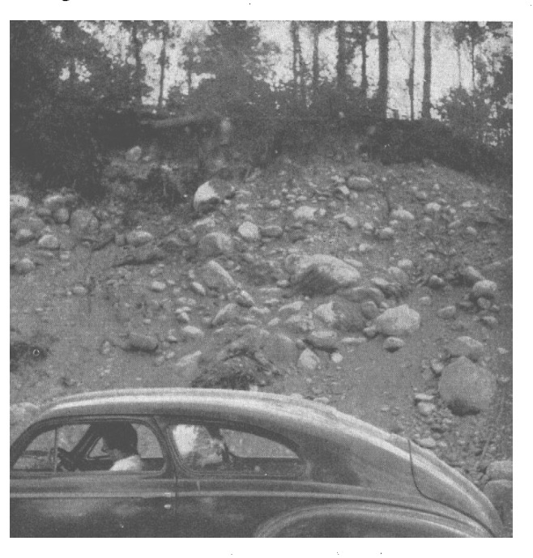
FIGURE 26.—Roche-mère des sols St-Faustin: dépôts fluvio-glaciaires mal triés.
Suit une description générale d'un profil de sol vierge, où sont indiquées les variations de profondeur, de couleur et de texture des différents horizons. La terre franche sableuse St-Faustin (Ft) appartient au groupe des podzols.
Horizon
Profondeur en pouces
A0
2-3
Humus brut brun foncé; racines; pH 4.5-5.0.
A2
1-6
Terre franche sableuse fine délavée, gris clair.
B21
2-8
Terre franche sableuse fine, brun moyen à brun foncé; contenant quelques fines particules de gravier; certaines plages de couleur foncé; structure monogranulaire à faiblement granulaire; contenant des cailloux et des pierres arrondies; presque meuble; pH 5.0-5.4.
B22
5-12
Terre franche sableuse à terre franche sablo-graveleuse ou gravier limoneux brun jaunâtre; structure monogranulaire; pH 5.2-5.4.
B3
5-12
Gravier brun jaunâtre clair en poches avec du sable gris fin; pH 5.3-5.6.
C
Gravier ou terre franche sablo-graveleuse gris brunâtre clair; contenant des cailloux et des pierres arrondies; de composition et d'assortiment très variable; pH 5.6-6.0.
Dans les gravières étendues, on peut observer une grande diversité de textures des horizons sur de très petites distances. Sur la carte des sols du comté de
Terrebonne, une grande étendue au sud de Ste-Sophie figure par erreur dans la série St-Faustin (Ft.). Cette région aurait dû être classée dans la série Farmington (Fh).
Agriculture
Les sols St-Faustin conviennent mal à l'agriculture. Ils ne sont généralement pas très pierreux, mais leur capacité de rétention d'eau et leur fertilité naturelle sont trop faibles pour produire de bonnes récoltes. Certaines étendues sont accidentées, ce qui rend difficile l'emploi des machines agricoles.
Le terrain défriché sert presque uniquement aux pâturages, mais l'herbe est généralement clairsemée et de faible qualité. On cultive parfois le sarrasin et les pommes de terre, mais rarement l'avoine. Le foin contient en général un faible pourcentage de légumineuses. Ces sols sont très acides dans tout le profil. Le chaulage s'impose, spécialement pour les légumineuses, de pair avec l'incorporation de fumier et d'engrais chimiques complets.
Vu que les sols St-Faustin se prêtent mal à l'agriculture, il ne serait pas pratique d'améliorer la fertilité de tous les terrains défrichés. Il serait probablement économique d'améliorer les sols non pierreux qui contiennent le plus de terre franche, mais il faudrait reboiser les âtêtes raides de gravier sec.
SÉRIE ST-GABRIEL (69,712 acres)
Les sols St-Gabriel se rencontrent dans les comtés d'Argenteuil et de Terrebonne à des altitudes variant de 300 à 1,600 pieds. Ils se sont formés sur des dépôts de gravier glaciaire qui remplissent les vallées des régions montagneuses ou sur des matériaux graveleux deltaïques situés près du rebord du plateau Laurentien. Les dépôts graveleux se composent en grande partie de quartz, granit et gneiss modérément à bien assortis et généralement exempts de gros cailloux et de boulders. Ils varient en épaisseur de quelques pieds à plus de 10 pieds et reposent sur le till ou sur l'assise rocheuse.
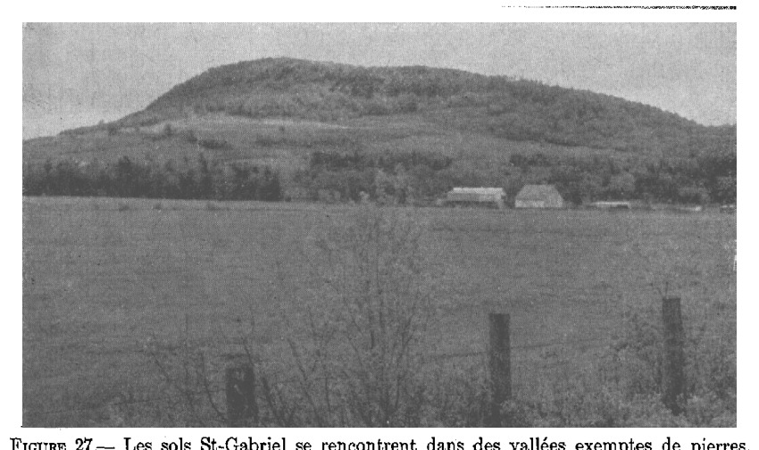
Figure 27. — Les sols St-Gabriel se rencontrent dans des vallées exemptes de pierres, unies ou légèrement ondulées.
Les sols St-Gabriel se rencontrent sur des terrains ondulés ou unis et sont excessivement drainés à cause de la faible capacité de rétention d'eau et de la
perméabilité rapide des matériaux. L'excès de perméabilité est largement responsable de la présence de sols très humides au voisinage des sols St-Gabriel, vu que ces sols légers ne retiennent pas suffisamment l'eau de précipitation pour empêcher son infiltration vers les parties basses. La végétation arborescente paraît subir l'influence de la hauteur moyenne de la nappe d'eau du sol. Sur les terrains fortement ondulés, loin des cours d'eau et des dépôts organiques, les arbres les plus communs sont l'érable à sucre, le pin et le bouleaux, alors que sur les étendues planes de gravier se rencontrent l'épinette, le sapin, le tremble et le thuya.
La description généralisée des profils à l'état vierge expose les variations de profondeur, de couleur, de texture et de réaction des différents horizons. La terre franche sableuse St-Gabriel (G) appartient au groupe des podzols.
Horizon
Profondeur en pouces
A0
1- 3
Matière organique gris très foncé à brun très foncé avec un peu de matière minérale sableuse; pH 4.5-5.5.
A2
1- 3
Terre franche sableuse délavée à sable limoneux gris clair ou gris brunâtre clair contenant quelques fragments de gravier; pH 4.5-5.0.
B21
2- 5
Terre franche sableuse légère brun rougeâtre foncé à brun rougeâtre contenant un peu de gravier; sans structure; cimentation occasionnelle en ortstein mais plus généralement meuble et perméable; pH 4.8-5.5.
B22
5-15
Gravier limoneux ou gravier sableux brun foncé à rouge jaunâtre; meuble et perméable; pH 4.9-5.9.
B3
4-12
Sable graveleux ou gravier jaunâtre à brun jaunâtre clair avec stries brun foncé; structure monogranulaire; perméable et meuble; pH 5.0-5.9.
C
Gravier brun jaunâtre clair avec des bandes occasionnelles de sable ou de gravier caillouteux; meuble et perméable; pH 5.6-6.2.
Agriculture
Une forte proportion des sols St-Gabriel ont été défrichés et cultivés. Le défrichement était facile sur ces sols bien drainés et exempts de pierres, mais l'agriculture n'a pas été profitable à cause du peu de fertilité et du manque d'humidité. La majorité de ces régions sont maintenant abandonnées et laissées en friche ou servent pour le foin ou le pâturage. Les herbes sont clairsemées étant donné que le sol de surface est trop sec pour permettre la croissance des plantes à racines superficielles. Des plantes à racines profondes comme la luzerne devraient venir mieux si le sol n'était pas si acide et si pauvre. Les rendements de foin sont faibles. Le sarrasin est pratiquement la seule plante qu'on cultive pour le grain. Nous avons observé des pommiers sauvages sur les terrains abandonnés près des bords du plateau Laurentien, ce qui permet de penser que les vergers pourraient réussir dans cette région.
Sauf pour certaines récoltes spéciales, il faut déconseiller la culture sur les sols St-Gabriel. En fait, il ne semble pas possible d'élever la fertilité du sol à un niveau de production économique. Il faudrait reboiser les terres abandonnées.
SÉRIE MONT-ROLLAND (7,604 acres)
Les sols Mont-Rolland se sont formés sur des dépôts fluvio-glaciaires et deltaïques, et leur topographie varie depuis l'ondulation jusqu'au vallonnement. Ils sont situés à des altitudes de 300 à 1,000 pieds. Les dépôts sont graveleux et
sont dérivés d'une grande variété de matériaux parmi lesquels prédominent le granit, le gneiss et les quartzites. La partie supérieure des dépôts dans lesquels le profil s'est formé consiste parfois en terre franche en très grande partie et n'a qu'une capacité de rétention d'eau faible à passable. Le drainage interne est rapide.
Horizon
Profondeur en pouces
Ae
0- 4
Terre franche sablo-graveleuse brune contenant quelques cailloux et quelques fins agrégats granuleux; très friable; pH 5.2-5.6.
Terre franche sablo-graveleuse brun jaunâtre foncé; parfois caillouteuse, contenant quelques granules très friables; pH-5.2-5.6.
C1
24-28
Gravier gris avec des stries ou des points de rouille; parfois caillouteux; très ferme par endroits.
C2
Couches alternantes de gravier et de sable exhibant les couleurs du granit, du gneiss ou du quartz; passablement meubles et perméables; pH 5.5-6.0.
Agriculture
Une forte proportion des sols Mont-Rolland est défrichée et sert aux grandes cultures et aux pâturages. Cependant, ces sols ne sont pas adaptés à l'agriculture extensive parce que leur fertilité naturelle est faible et qu'il faut fertiliser fréquemment pour obtenir de bonnes récoltes. Ces sols secs se réchauffent rapidement au printemps et les semis doivent se faire dès que le danger du gel est passé. Les cultures semées très tôt peuvent mûrir avant que la terre devienne excessivement sèche.
Les sols Mont-Rolland sont très acides et il faut les chauler à diverses reprises pour les rendre aptes à produire des récoltes. Les plantes à racines profondes tirent le mieux profit de l'humidité et des éléments nutritifs disponibles. Il vaut mieux reboiser les étendues défrichées qu'on ne peut maintenir à un niveau convenable de fertilité et de production.
Sols sur dépôts éoliens
SÉRIE ST-JOVITE (8,641 acres)
Les sols St-Jovite se rencontrent dans les comtés d'Argenteuil et de Terrebonne, à des altitudes variant de 600 à 1,400 pieds, et sont généralement situés sur des collines vis-à-vis des vallées profondes orientées du nord au sud ou du nord-est au sud-ouest. Comme exemple, on peut citer la colline qui se trouve au sud du village de St-Jovite.
Les dépôts éoliens ont une profondeur de 1 à 3 pieds en général et reposent sur l'assise rocheuse ou le till pierreux. Ils consistent en une terre franche limoneuse et en une terre franche sableuse dans laquelle la fraction sable a des particules fines à très fines. La fraction limon représente approximativement 40 p. 100 de l'ensemble alors que la fraction argile forme moins de 10 p. 100. Dans plusieurs cas, le dépôt n'est pas assez profond pour recouvrir entièrement les boulders ou les affleurements rocheux de la moraine sous-jacente. Par conséquent, le terrain peut être modérément pierreux, bien que les matériaux éoliens eux-mêmes soient absolument exempts de tout matériel grossier.
Malgré la prédominance de pentes modérées à raides dans le cas des sols St-Jovite, le ruissellement n'est généralement pas excessif parce que le profil est
extrêmement poreux et capable d'absorber rapidement l'humidité. Ce qui diminue également le ruissellement et l'érosion, c'est que la majorité des pentes sont généralement en foin et en pâturage.
Les sols St-Jovite ont une texture de surface qui varie de terre franche sableuse très fine à terre franche ou à terre franche limoneuse, mais nous les avons tous cartographiés dans une même unité cartographique (Jv). La majorité des profils appartiennent au groupe des sols bruns podzoliques.
Horizon
Profondeur en pouces
Ae
5- 7
Terre franche sableuse fine à terre franche brune; structure granuleuse fine; très friable; pH 5.4-5.6.
B21
5-20
Terre franche sableuse fine à terre franche brun foncé; très friable; structure granuleuse fine; exempte de gravier et de pierres; pH 5.5-5.7.
B22
7-28
Terre franche à terre franche limoneuse brun jaunâtre ou brun olive; ne contenant ni pierres ni gravier; perméable; pH 5.7-6.0.
C
0-16
Terre franche à terre franche limoneuse olive clair ou terre franche sableuse gris brunâtre très fine; friable à légèrement ferme, perméable; mouchetures légères occasionnelles; pH 6.0-6.2.
D
Till pierreux ou assise rocheuse.
Tous les horizons et les couleurs se fondent graduellement. Il ne se trouve généralement pas de petits boulders ni de gravier dans le solum, mais il y a souvent dans le sol de gros boulders reposant sur le till et dont certains paraissent au niveau du sol.
Agriculture
Ce qui s'oppose le plus à l'utilisation des sols St-Jovite, ce sont ses pentes raides. Les boulders qui émergent du sol nuisent également au passage des machines agricoles. Malgré cela, presque tous les sols St-Jovite sont consacrés à la culture mixte. Le solum est profond, perméable et possède une fertilité naturelle passable à bonne. Le sol a une texture avantageuse et une bonne capacité de rétention d'eau et il y a avantage à le bien exploiter. Il faut protéger la terre contre l'érosion pour éviter la perte de fertilité et il convient de tenir le plus possible le terrain engazonné. Si l'on fait des cultures sarclées, il est nécessaire de pratiquer la culture en contre-pente, non seulement pour combattre l'érosion, mais aussi pour conserver l'eau du sol en diminuant le ruissellement.
Dans les conditions actuelles, les rendements des sols St-Jovite ne sont que passables, mais on pourrait les améliorer graduellement par le recours aux engrais chimiques complets et par une attention constante à la répression de l'érosion et à la conservation de l'humidité. Les pentes les plus raides devraient être engazonnées ou boisées. Le chaulage s'impose pour la majorité des cultures, spécialement les légumineuses. Il faut veiller à conserver et, le cas échéant, à accroître la teneur en matière organique du sol.
Sols sur sédiments argileux
Série BRANDON (3,917 acres)
Nous n'avons cartographié des sols Brandon que dans le comté d'Argenteuil à des altitudes de 500 à 700 pieds. Leur profil s'est formé entièrement sur des dépôts d'argile et il diffère à cet égard des profils de la série Pontiac qui se sont
formés de dépôts minces de limon recouvrant l'argile. Les étendues sur lesquelles les argiles ne sont pas recouvertes de limons sont limitées.
Les argiles qui forment la roche-mère des sols Brandon ont été déposées dans les bassins les plus profonds de la région haute comme ceux qui se rencontrent près d'Arundel et d'Harrington-Est. Ces matériaux, qui constituent les dépôts de la plus fine texture de la région haute, sont parfois laminés. La profondeur est variable et difficile à établir, mais nous avons observé certaines coupes d'une profondeur de plus de 20 pieds.
Le drainage naturel des sols Brandon est pauvre à cause de la topographie plane à légèrement déprimée et de la perméabilité lente des matériaux à texture fine.
Nous n'avons cartographié que l'argile Brandon (B), mais le type comprend certains sols dont la couche superficielle est à texture légère et repose sur un sous-sol à fine texture, surtout près du pied des tills. Suit une description de l'argile Brandon qui appartient au groupe des sols gleysoliques gris foncé.
Horizon
Profondeur en pouces
Ae
0 - 6
Argile gris foncé à brun grisâtre foncé; structure granuleuse; modérément plastique et collante; pH 5.2-5.6.
Argile brun grisâtre à grise, structure cuboïde grossière à fragmentée; plastique et collante; laminations souvent visibles parmi les matériaux plus massifs; pH 5.8-6.4.
Agriculture
Les sols Brandon sont probablement les plus fertiles de la région laurentienne, mais ils n'ont pas les caractéristiques physiques les plus souhaitables. Leur forte teneur en argile les rend collants lorsqu'ils sont humides et durs lorsqu'ils sont secs, mais le sol est exempt de pierres et la topographie unie.
Il se fait de la culture mixte sur les sols Brandon et les rendements sont généralement bons. Le succès de l'agriculture sur ces sols dépend de l'établissement et du maintien d'un bon drainage artificiel. Vu que le sol de surface et le sous-sol supérieur sont très acides, la terre a besoin de chaux. Le sol ne convient pas à la luzerne, mais certains cultivateurs produisent du trèfle, bien qu'il faille souvent ressemer.
Sols sur matériaux alluvionnaires
Série Lesage (4,211 acres)
Les sols Lesage se rencontrent principalement dans les vallées de la rivière du Nord, entre St-Jérôme et Ste-Adèle, et de plus petites étendues se trouvent dans la vallée de la rivière Rouge, dans le comté d'Argenteuil. Ces sols sont situés à des altitudes de 500 à 800 pieds sur terrain légèrement ondulé à légèrement vallonné.
La roche-mère est un dépôt graveleux qui repose sur des argiles et des limons. La partie supérieure varie en texture depuis une terre franche sablo-graveleuse à une terre franche sableuse fine ou grossière. Le dépôt graveleux au-dessus du substratum argileux est extrêmement variable, mais il a généralement une épaisseur de 5 à 10 pieds, sauf à quelques endroits où il n'a que 2 pieds. La surface du sol et le solum sont exempts de boulders, mais il peut y avoir des cailloux.
Le drainage externe est bon et le drainage interne varie de modéré à rapide. Les sols Lesage ne sont pas aussi secs que les sols St-Gabriel et Mont-Rolland; c'est le substratum imperméable et la texture de terre franche de certaines parties du dépôt qui rendent les sols Lesage plus humides.
Les sols Lesage ont une texture superficielle de terre franche sableuse grossière à terre franche sablo-graveleuse et nous les avons tous cartographiés dans la même unité (Le). La description suivante est celle d'un profil de terre franche sableuse grossière. Elle représente le groupe des podzols.
Horizon
Profondeur en pouces
Ae
0-4
Terre franche sableuse grossière brun foncé; très friable; contenant de fins granules parmi les grains simples; pH 5.0-5.4.
A2
On voit généralement dans le sol non dérangé une couche délavée d'une profondeur de 1 à 3 pouces.
B21
4-8
Terre franche sableuse grossière brun vif; le plus souvent sans structure; presque lâche; pH 5.2-5.4.
B22
8-16
Terre franche sableuse grossière brune contenant un peu de gravier fin; sans structure; lâche et poreuse; pH 5.2-5.6.
C
16-54
Sable grossier graveleux brun grisâtre clair, sans structure; lâche et très perméable; pH 5.4-5.8.
D
Argile ou couche de sable grossier et de gravier alternant avec des couches d'argile; pH 5.6-6.2.
Agriculture
Les sols Lesage conviennent passablement à l'agriculture. Ils ne couvrent pas de grandes étendues, mais ils se présentent en un arrangement plutôt complexe avec d'autres sols et spécialement avec les séries Piedmont et Pontiac. Ils sont acides et le chaulage est nécessaire à la croissance de la majorité des plantes cultivées, spécialement les légumineuses. Par le recours à la chaux, au fumier et aux engrais chimiques complets, les sols Lesage, spécialement les types minces au-dessus de l'argile, peuvent acquérir un degré passable de fertilité. Ils se réchauffent de bonne heure au printemps et on peut les ensemencer dès que le danger de gelée mortelle est passé. Ils sont assez bien adaptés à la majorité des cultures et spécialement aux plantes à racines profondes, qui peuvent plus facilement tirer parti de l'humidité naturelle du sol et des engrais chimiques incorporés.
SÉRIE MORIN (15,550 acres)
Les sols Morin sont situés à des altitudes variant de 300 à 1,200 pieds. Comme les sols St-Gabriel, ils se trouvent sur des terrains dont la topographie varie d'unie à légèrement ondulée, dans le fond des vallées. La roche mère est un sable déposé par les cours d'eau glaciaires qui contient des fractions variables de particules grossières et fines. Le sable est dérivé de quartzite, de gneiss et de granit et il est exempt de cailloux et de boulders, mais il peut contenir du gravier.
Les sols Morin sont secs à cause de la porosité du profil. Cependant, on trouve souvent des alluvions humides et non différenciées en juxtaposition avec les sols Morin.
Suit la description générale du sable Morin cultivé (Mo), seul type cartographié dans la série. Il appartient au groupe des podzols.
Horizon
Profondeur en pouces
Ae
5 - 8
Sable limoneux à sable brun à brun clair, contenant de fins granules friables parmi les grains simples; pH 5.0-5.6.
A2
Observé seulement à l'état de traces dans la majorité des champs cultivés. A l'état vierge, la couche délavée grise a une profondeur de 1 à 4 pouces.
B21
6-10
Sable brun rougeâtre à rouge jaunâtre moyen à grossier, quelquefois légèrement graveleux, généralement meuble et perméable, mais parfois cimenté en ortstein; pH 5.3-6.1.
B22
8-18
Sable brun foncé à brun jaunâtre, grossier à moyen, contenant des lits occasionnels de gravier fin, généralement meuble, mais parfois légèrement cimenté; pH 5.5-6.1.
C
Sable brun jaunâtre à brun grisâtre clair avec des couches occasionnelles de gravier, contenant parfois des mottes de sable grossier cimenté; généralement ferme et non compact; présentant des stries rouille à gris clair disposées horizontalement ou irrégulièrement; pH 5.5-6.1.
La variation la plus marquée de profil consiste dans la quantité de sable grossier ou de gravier mélangé au sable moyen. Tel qu'il a été cartographié, le solum du sol Morin varie en texture de sable exempt de gravier à sable un peu graveleux. Les profils graveleux représentent généralement une transition graduelle vers les sols de la série St-Gabriel.
Agriculture
Une bonne partie du sol Morin a été défriché et sert à la culture mixte. On ne cultive pas souvent les céréales parce que les rendements sont bas. La terre est surtout consacrée au foin qui est très clair et ne contient que peu de légumineuses. Les pâturages sont pauvres durant l'été, mais ils peuvent parfois donner une croissance passablement précoce au printemps. La chaux, les engrais chimiques et le fumier sont nécessaires pour produire des récoltes passables. Cependant, les récoltes peuvent faillir malgré une bonne fertilisation, à cause de la sécheresse excessive du sol. Les récoltes qui peuvent être produites économiquement sur de tels sols sont les cultures commerciales qui peuvent donner des profits suffisants pour solder les frais d'irrigation et de fertilisation.
SÉRIE IVRY (17,563 acres)
Nous avons cartographié les sols Ivry sur des terrains fortement ondulés et vallonnés, à des altitudes de 400 à 1,400 pieds. Le profil s'est formé sur des sables fins et très fins exempts de pierres et qui ont, en plusieurs cas, été modelés par le vent, comme l'indique la présence de dunes. Les sables reposent généralement sur du till sous-jacent situé souvent à plus de 20 pieds. Dans certains cas, toutefois, les dépôts de sable recouvrent des kames graveleux et cela explique la présence de matériaux grossiers dans le substratum.
Les sols Ivry sont excessivement drainés, en raison de la capacité très faible de rétention d'eau du solum et de la percolation rapide de l'eau à travers le sol et la roche mère. L'eau de pluie s'infiltre si rapidement dans le sol qu'il n'y a pas de danger d'érosion par l'eau. D'un autre côté, l'érosion éolienne se produit facilement sur le terrain dénudé, comme on l'a observé à bien des
endroits. Ce sont en grande partie des conifères qui croissent sur les sols Ivry. Parmi les espèces d'arbres, on compte le pin blanc et le pin rouge, l'épinette blanche, le sapin, le peuplier, l'érable à sucre et le bouleau jaune.
Suit la description généralisée d'un sable fin Ivry (I) qui représente le groupe des podzols.
Horizon
Profondeur en pouces
A0
1- 2
Humus brut brun grisâtre très foncé; pH 5.0-5.4.
A2
1- 4
Sable fin délavé à sable fin limoneux ou à terre franche sableuse gris brunâtre clair à brun rosâtre; structure monogranulaire; pH 5.0-5.4.
B2
1- 8
Sable fin à terre franche sableuse brun jaunâtre à brun foncé; généralement friable et très poreux; indurations occasionnelles pH 5.0-5.6.
B3
9-12
Sable fin brun foncé; structure monogranulaire; meuble et perméable; pH 5.2-5.6.
C
Sable fin et très fin olive clair à gris brunâtre clair; structure monogranulaire; généralement ferme; contenant quelques couches horizontales d'environ 2cm de profondeur; pH 5.6-6.2.
Nous n'avons pas essayé de décrire ou de cartographier séparément les sols éoliens (Ie); la description ci-dessus ne représente pas les profils en partie érodés par le vent ou ensevelis sous les sables éoliens.
Agriculture
De nombreuses étendues des sols Ivry ont été défrichées et ont servi à la culture mixte. Le terrain n'est pas adapté aux grandes cultures ordinaires, mais il peut convenir à certaines cultures spéciales. Les cultures capables de bénéficier de l'humidité du printemps, comme le seigle d'automne ou diverses cultures de primeurs, peuvent donner des rendements beaucoup meilleurs que les cultures qui croissent durant la période sèche de l'été.
La productivité naturelle des sols Ivry est très limitée parce que leur fertilité et leur capacité de rétention d'eau sont très faibles. Il serait possible de produire de bonnes récoltes de tels sols si l'on pouvait régler artificiellement la fertilité et l'humidité. Il est impossible d'obtenir des récoltes profitables à moins de chauler, d'incorporer de la matière organique et de fertiliser abondamment. Il n'est généralement pas profitable de fertiliser de façon si intensive, mais cela pourrait l'être avec certaines cultures commerciales. L'irrigation garantirait le succès des cultures commerciales obtenues avec un régime de bonne fertilisation, mais le coût de l'irrigation peut être prohibitif.
Les sols Ivry sont faciles à défricher et à cultiver; c'est probablement pourquoi une trop grande superficie de ce sol est en culture. Sur certaines fermes, les sols Ivry recouvrent souvent une trop grande superficie pour permettre une exploitation appropriée. Selon les pratiques courantes, les rendements sont trop bas pour être profitables. L'amélioration de l'agriculture peut dépendre de facteurs comme le boisement des terrains très secs les plus exposés à l'érosion éolienne, l'introduction de cultures spéciales et le choix de grandes cultures mieux adaptées.
SÉRIE GUINDON (14,774 acres)
Les sols Guindon sont largement dispersés dans la région élevée des comtés de Terrebonne et d'Argenteuil sur de longues pentes douces ou du terrain légèrement vallonné, à des altitudes variant de 700 à 1,500 pieds. Le profil s'est
formé sur un dépôt de sable de 2 à 5 pieds recouvrant le till ou l'assise rocheuse des collines laurentiennes. Dans la majorité des cas, la roche-mère paraît être d'origine alluvio-lacustre. Ce dépôt superficiel tend à donner à la surface du terrain un aspect moins raboteux que celui des sols de till ordinaire, mais il n'est pas assez profond pour recouvrir complètement tous les gros boulders ou les affleurements rocheux les plus élevés. Les sols Guindon sont beaucoup moins pierreux que les sols de till Ste-Agathe, mais ils ne sont pas aussi exempts de boulders, d'affleurements rocheux que ne le sont les sols Ivry. Il y a quelques petits blocs erratiques. Les particules de sable du sol Guindon sont généralement moyennes à fines.
Le drainage des sols Guindon varie: il est plutôt excessif aux endroits où les dépôts sableux sont profonds ou reposent sur une butte; il est modérément bon lorsque les dépôts sont minces et reçoivent beaucoup d'eau d'infiltration en provenance des terrains plus élevés. En raison de la perméabilité rapide du sable et de sa faible capacité de rétention d'eau, la partie supérieure du sol a tendance à être un peu trop drainée, alors que la roche-mère peut accuser des tachetures peu prononcées. On a noté de l'érosion par l'eau sur les terrains cultivés dans le sens des pentes.
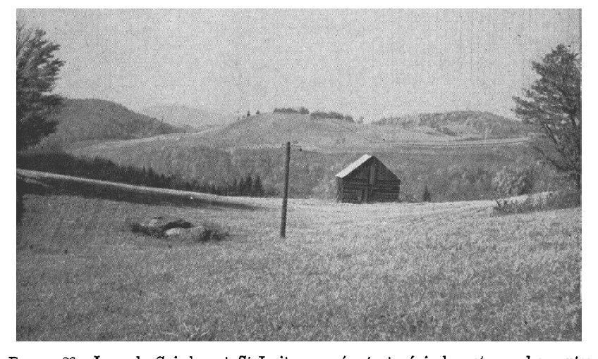
FIGURE 28.—Les sols Guindon et St-Jovite se présentent généralement sur des pentes moyennement pierreuses.
Nous n'avons reconnu qu'une unité de cartographie dans la série Guindon. La texture de la surface varie de terre franche sableuse légère à sable limoneux. La description générale qui suit représente la terre franche sableuse légère Guindon (Gu) à l'état cultivé. Ce sol appartient au groupe des podzols.
Horizon
Profondeur en pouces
Ae
4- 6
Terre franche sableuse légère, brune, contenant surtout du sable fin mais un peu de sable moyen et grossier, très peu de gravier; structure fine granuleuse très friable et monogranulaire; pH 5.2-5.6.
A2
0- 1
Restes d'une couche délavée gris clair. Dans les sols vierges, l'épaisseur de cette couche varie de 1 à 3 pouces.
Horizon
Profondeur en pouces
B21
0-2
Terre franche sableuse légère brun rougeâtre; dans les champs cultivés, cet horizon est partiellement ou complètement mélangé à la couche arable.
B22
8-12
Sable limoneux moyen à fin, brun clair à brun jaunâtre clair; gréseux, sans structure; modérément lâche; pH 5,4-5,8.
B3
12-20
Terre franche sableuse légère à sable limoneux moyen à fin brun jaunâtre devenant jaune pâle dans la partie inférieure de l'horizon; structure fine; modérément lâche à légèrement ferme; pH 5,4-5,8.
C
12-24
Terre franche sableuse légère, sable limoneux ou sable, gris brunâtre clair, les particules de sable variant en grosseur de moyennes à fines; légèrement ferme; pH 5,5-5,8.
D
Assise rocheuse ou till sablo-pierreux.
Les changements de couleur dans le profil sont graduels d'un horizon à l'autre. Il n'y a que peu de fragments de gravier dans le solum, surtout à la partie supérieure.
Agriculture
Les sols Guindon conviennent mal à l'agriculture. Les pentes raides et quelques gros boulders ou affleurements rocheux s'opposent au passage des machines lourdes. La fertilité naturelle du sol est faible. Il ne se produit que peu de récoltes et la plus grande partie du terrain est consacré aux pâturages permanents qui sont passables à pauvres. Il se cultive parfois des pommes de terre qui, selon les fertilisants employés et les pluies, donnent des rendements passables à pauvres.
Dans la culture des terrains en longue pente, il faut veiller à prévenir l'érosion par l'eau. La culture en contre-pente, en plus de prévenir l'érosion par l'eau, assure la conservation de l'eau.
Vu que le sol ne convient guère aux plantes sarclées, la meilleure amélioration consisterait probablement à augmenter la production d'herbe dans les pâturages. Pour atteindre ces objectifs, il faudrait recourir aux engrais chimiques complets et à la chaux. Étant donné la faible capacité de rétention d'eau et le peu de fertilité, il convient d'appliquer des amendements fréquemment et à petites doses. Le reboisement, surtout à la partie supérieure des pentes, devrait favoriser la conservation de l'eau.
SÉRIE BEVIN (3,730 acres)
Les sols Bevin se sont formés sur des dépôts alluvionnaires sableux, exempts de pierres, semblables à la roche-mère des sols Ivry, à des altitudes variant de 300 à 700 pieds. Le terrain est uni et il est généralement plat, ou présente des dépressions légères. Le drainage externe est modérément lent ou stagnant. Dans la majorité des cas, la nappe d'eau se maintient à un haut niveau durant presque toute la saison de végétation. Cela dû soit à la légère élévation du terrain au-dessus des cours d'eau et des lacs ou à quelque substratum imperméable. La végétation naturelle consiste principalement en conifères, comme l'épinette, le sapin, le thuya et le mélèze, avec quelques arbres à feuilles caduques principalement l'érable rouge et le peuplier.
Tous les sols Bevin figurent sur la carte comme une seule unité (Be), bien que la texture de la surface arable puisse varier de sable limoneux à terre
franche sableuse légère. Le sable limoneux est le sol le plus commun. Sa description est donnée ci-dessous. Il appartient au groupe des podzols à gley.
Horizon
Profondeur en pouces
Ao
0- 6
Sable limoneux fin brun grisâtre foncé contenant une bonne quantité de matière organique; structure granuleuse fine très friable, et structure monogranulaire; pH 5.0-5.4.
A2
6- 7
Restes d'une couche grise délavée; sable limoneux fin.
Bs1
7-14
Sable limoneux ou terre franche sableuse légère, brun rougeâtre, mouchetures de jaune et de rouille; sans structure; contenant quelques fines granules fragiles; perméables; pH 5.2-5.4.
Bs2
14-26
Terre franche sablense fine brun jaunâtre clair tacheté de gris pâle, de rouille et de brun; légèrement ferme par endroits, se brisant en fragments irréguliers; modérément perméable; pH 5.2-5.6.
C
Sable fin gris brunâtre clair avec des stries ou des mouchetures rouille; contenant à l'occasion du gravier fin, minces stratifications; sans structure; fermeté et perméabilité variables; pH 5.2-5.8.
On présume qu'en la majorité des cas la profondeur des matériaux déposés sur le till, sur les matériaux à texture fine ou sur l'assise rocheuse varie de 5 à 8 pieds. Le sol est très acide dans toute sa profondeur. C'est surtout le drainage qui varie, comme l'indiquent les mouchetures ou le gley dans tout le profil. La partie superficielle des sols les plus mal drainés est brun grisâtre foncé ou gris brunâtres, alors que dans le cas des sols mieux égouttés elle est de couleur brun moyen. D'autres variations tiennent aux différences de textures du sous-sol ou de la roche-mère.
Agriculture
Les sols Bevin se prêtent plus ou moins à l'agriculture, selon les conditions de drainage. Le mauvais drainage de certaines parties de ce terrain est la plus sérieuse entrave à la production des récoltes, et le drainage artificiel coûterait probablement plus que l'augmentation de récolte qui en résulterait. Le principal obstacle au drainage, dans certains cas, c'est la hauteur de l'eau dans les cours d'eau ou les lacs du voisinage; dans d'autres cas, c'est la barrière rocheuse qui emprisonne l'eau de drainage dans des dépressions en forme de cuvettes.
La forte acidité des sols Bevin constitue un autre facteur préjudiciable à la croissance des plantes. Sans drainage, le chaulage n'a que peu de valeur. Si l'on ne peut tenir en échec des plantes comme le Carex et le Juncus, cela signifie que le sol est trop humide pour que la culture soit profitable, de sorte que le chaulage et d'autres amendements seraient vains.
On peut produire sur les sols Bevin du foin et de l'avoine, mais on s'en sert surtout pour le pâturage. Le foin est généralement de faible qualité, spécialement dans les endroits les plus humides, et les légumineuses viennent mal sur ces sols. Les céréales ne mûrissent pas toujours; en ce cas, il peut être plus avantageux de couper le grain pour l'ensilage ou pour servir d'aliments verts. Les pâturages sont souvent envahis par le Carex et le Juncus mais, dans l'ensemble, ils fournissent une quantité passable d'herbe. La fertilité naturelle des sols Bevin laisse à désirer, même lorsque ces sols sont bien drainés, et il faut y incorporer du fumier et des engrais chimiques complets.
SÉRIE DIABLE (5,729 acres)
Les sols Diable se rencontrent principalement le long des rivières Diable et Rouge à des altitudes de 500 à 700 pieds. Ils se sont formés sur sables fins et très fins ou sur la terre franche sableuse déposée récemment par les eaux d'inondation des rivières actuelles. La ligne générale du terrain est plane, mais la micro-topographie est accentuée à cause des levées sectionnées, des bras morts et des lits de rivière abandonnés.
La terre est inondée le printemps, l'eau séjourne naturellement plus longtemps dans les dépressions ce qui retarde les semailles. Cependant, dès que la rivière revient à son niveau normal, l'eau d'inondation se retire rapidement du sol très perméable, On peut considérer le terrain comme étant généralement bien drainé, mais l'égouttement est plutôt excessif aux sommets des micro-ondulations, tandis que certaines dépressions restent trop humides pour être cultivées avec le reste du terrain. La capacité de rétention d'eau du solum est plutôt faible, mais les plantes ne souffrent pas beaucoup du manque d'humidité parce que la table d'eau du sous-sol est à faible profondeur.
La description suivante de profil est celle de la terre franche sableuse fine (Di), le seul type cartographié dans la série Diable.
Horizon
Profondeur en pouces
Ac
0-8
Terre franche sableuse fine, brune; structure granuleuse fine et structure monogranulaire; très friable; pH 5.2.
A2
L'horizon délavé est absent des sols très jeunes, mais il peut être présent dans les plus vieux profils de la série.
B2
8-14
Terre franche sableuse fine, brun foncé; sans structure; lâche et perméable; pH 5.4.
B3
14-26
Terre franche sableuse légère, fine, brun jaunâtre; sans structure; lâche et perméable; pH 5.4.
C
Sable fin à sable limoneux fin ou terre franche sableuse légère brun jaunâtre clair; sans structure et modérément perméable; pH 5.4.
La description ci-dessus représente les profils les plus mûrs (groupe des podzols) de la série, mais dans le cas des dépôts plus récents, la différenciation de profil est beaucoup moins prononcée (alluvions). Dans l'ensemble, les variations de texture de la surface sont légères, cependant, quelques petites étendues ont un profil un peu plus limoneux. La proportion d'argile dans la roche-mère est faible, mais il y a souvent plus de 30 p. 100 de limon. La fraction sable se compose en parties à peu près égales de sable fin et très fin.
Les sols Diable sont bien drainés, exempts de pierres, perméables, faciles à travailler et adaptés au jardinage ainsi qu'à la majorité des grandes cultures. Ils réagissent bien au fumier, à la chaux et aux engrais chimiques complets. Cependant, l'inondation du terrain retarde les semailles et détruit les légumineuses. Les rendements de foin sont relativement faibles à cause de la petite proportion de légumineuses. Les rendements d'avoine varient de passables à faibles dans les conditions ordinaires.
Le fumier est le seul amendement généralement employé, mais les rendements seraient beaucoup plus élevés si l'on avait recours à des applications généreuses d'engrais chimiques complets. Il faudrait chauler pour abaisser l'acidité du sol de surface et du sous-sol. De nombreuses applications seraient vrai-
semblablement requises pour produire une réaction convenable. Il conviendrait d'appliquer de la pierre à chaux magnésienne, vu que le magnésium et le calcium sont déficitaires.
ALLUVIONS NON DIFFÉRENCIÉES (10,572 acres)
Presque toutes les alluvions non différenciées des hautes terres ont une texture superficielle sableuse ou graveleuse, alors que la texture du sous-sol varie de sable ou gravier à terre franche sableuse fine ou terre franche limoneuse. De tels sols occupent généralement des dépressions ou les marges des cours d'eau à des endroits où il est difficile ou impossible de pratiquer le drainage artificiel, de sorte qu'ils n'ont à peu près aucune valeur pour l'agriculture. L'aune, l'épinette, le thuya et le mélèze sont les arbres les plus fréquemment observés. On laisse généralement croître les arbres sur ce terrain lorsqu'il ne sert pas comme pâturage non amélioré. Il ne semble pas pratique de dépenser du temps et de l'argent à améliorer pareils terrains alors qu'il reste de grandes étendues de terrain plus prometteur abandonnées ou mal exploitées.
SÉRIE PIEDMONT (12,393 acres)
Nous avons cartographié les sols Piedmont principalement dans les vallées des rivières du Nord et Rouge, où ils sont souvent associés aux sols de la série Pontiac, sur des terrains ondulés à légèrement vallonnés, à des altitudes de 300 à 800 pieds. Ils se sont formés sur des dépôts alluvionnaires de 2 à 6 pieds d'épaisseur consistant en terre franche sableuse légère ou en terre franche sableuse fine et reposant sur des matériaux de texture fine. L'alluvion de même que les matériaux sous-jacents sont exempts de pierres et de gravier.
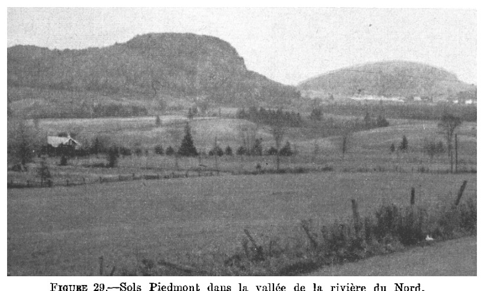
Figure 29. — Sols Piedmont dans la vallée de la rivière du Nord.
Les sols Piedmont ont un drainage modérément efficace. Le solum est perméable et sa capacité de rétention d'eau est passable. Sur les pentes les plus raides, le sol de surface est légèrement exposé à l'érosion en plaques.
La série comprend deux types, la terre franche sableuse légère (Pms) et la terre franche sableuse fine (Pm). Suit la description du profil de la terre franche sableuse fine, qui appartient au groupe des podzols.
Horizon
Profondeur en pouces
Ae
4-7
Terre franche sableuse fine à terre franche brun foncé; structure granuleuse et monogranulaire; très friable et perméable; pH 5.4-5.7.
B21
4-6
Terre franche sableuse fine à terre franche brun foncé à brun jaunâtre; structure granuleuse et monogranulaire; très friable et perméable; pH 5.4-5.8.
B22
9-18
Terre franche sableuse brun jaunâtre moyen à pâle, parfois teinté d'olive; structure granuleuse et monogranulaire; légèrement ferme par endroits; moins perméable que ci-dessus; quelques taches peu prononcées; pH 5.6-6.0.
C
10-36
Terre franche sableuse grossière brun jaunâtre clair, parfois cimentée avec des particules d'argile; tachetures occasionnelles; un peu dure à creuser lorsqu'elle est sèche; contenant quelques couches de terre franche sableuse fine et des couches de terre franche sableuse grossière et moyenne; pH 5.8-6.2.
D
Matériaux de texture fine, généralement laminés.
Agriculture
Les sols Piedmont sont tous en culture et servent principalement aux grandes cultures et dans une certaine mesure à la production des pommes de terre et d'autres légumes. La fertilité naturelle n'est pas élevée, mais il est facile de l'accroître parce que le sol a une bonne capacité de rétention des éléments nutritifs et de l'eau.
Le chaulage s'impose sur les sols Piedmont, spécialement pour le trèfle et la luzerne. Lorsqu'il y a des pommes de terre dans la rotation, il faut appliquer la chaux après la sole de pommes de terre. Les engrais chimiques doivent contenir une bonne proportion de potasse en plus du phosphore si nécessaire. Les sols Piedmont répondent bien à la chaux, au fumier et aux engrais chimiques et sont adaptés à une grande variété de cultures.
SÉRIE BRÉBEUF (4,056 acres)
Les sols Brébeuf se présentent sur des terrains ondulés à légèrement vallonnés, à des altitudes de 500 à 800 pieds. Ils sont le plus répandus le long de la rivière Rouge, dans la partie nord-ouest du comté d'Argenteuil. Le solum s'est formé sur des dépôts alluvionnaires de terre franche et de limon d'une épaisseur de 2 à 10 pieds, qui reposent souvent sur des matériaux lacustres laminés. Les deux sortes de dépôts sont exempts de gravier et de pierres.
Les sols Brébeuf sont bien drainés; ils ont une bonne capacité de rétention d'eau et leur solum est modérément perméable. Cependant, les fins matériaux limoneux s'érodent facilement durant les fortes pluies.
La description suivante de profil représente une terre franche à terre franche limoneuse Brébeuf (Bf) qui appartient au groupe des sols bruns podzoliques.
Horizon
Profondeur en pouces
Ae
0-6
Terre franche à terre franche limoneuse brun foncé; structure granuleuse très fine; très friable; pH 5.6-6.0.
B21
6-10
Terre franche à terre franche limoneuse brun foncé; très friable; structure granuleuse fine; très perméable; pH 5.8-6.2.
B22
10-14
Terre franche à terre franche limoneuse brun jaunâtre foncé ou brun olive; moins friable et perméable que ci-dessus; pH 5.8-6.2.
C
Couches minces de limon et de sable très fin olive à gris olive, avec des couches épaisses d'argile; légèrement fermes en place mais friables à la pelle; pH 5.8-6.2.
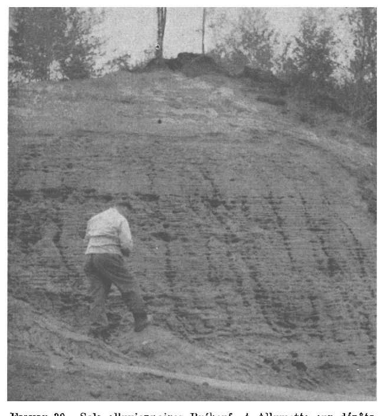
FIGURE 30.—Sols alluvionnaires Brébeuf et Allumette sur dépôts lacustres laminés.
Agriculture
Les sols Brébeuf conviennent par excellence à l'agriculture. Ils sont exempts de pierres, perméables et faciles à travailler, sauf peut-être sur les pentes les plus raides. Ils retiennent une quantité passable d'humidité et répondent bien au fumier et aux engrais chimiques. Il faut, toutefois, corriger l'acidité par le chaulage et maintenir la matière organique à un niveau approprié.
C'est généralement la culture mixte qui est en honneur. On voit à l'occasion des rendements passablement élevés de pommes de terre; de petites étendues sont aussi consacrées au jardinage pour les besoins de la famille. Les rendements des grandes cultures les plus communes sont généralement passables à bons. Les pâturages sont ordinairement compris dans la rotation des cultures et donnent un rendement passable à bon.
SÉRIE ALLUMETTE (1,220 acres)
Les sols Allumette se rencontrent le long de la vallée de la rivière Rouge près de la frontière ouest entre les comtés d'Argenteuil et de Terrebonne. Comme les sols Brébeuf, il se sont formés de matériaux sableux et limoneux très fins surmontant des dépôts lacustres laminés. Le terrain est exempt de pierres et presque uni ou légèrement déprimé avec un peu de micro-relief. Le drainage est imparfait par suite de la lenteur du ruissellement externe et de la lenteur de percolation de l'eau à l'intérieur.
La texture superficielle des sols Allumette varie de terre franche sableuse très fine à terre franche, mais la série n'est représentée que par une unité carto-
graphique (At). La description suivante est celle d'une terre franche sableuse très fine Allumette qui appartient aux podzols à gley.
Horizon
Profondeur en pouces
Ac
0-6
Terre franche sableuse fine à terre franche brun grisâtre foncé; très friable; granuleuse; pH 5.0-5.5.
A2
6-7
Restes de la couche primitive délavée; terre franche sableuse brun grisâtre clair.
Bg
7-24
Terre franche sableuse légère à terre franche sableuse fine brun jaunâtre foncé à olive; légèrement tachetée d'olive et de brun rougeâtre; structure massive et laminée; pH 5.0-5.6.
C
Matériaux gris brunâtre clair dont la texture varie de sable fin à terre franche; contenant quelques stries horizontales de rouille et des laminations; pH 5.4-6.0.
Agriculture
Grâce à l'absence de pierres, à la topographie unie du terrain et à la texture de terre franche, le sol Allumette convient passablement à l'agriculture. Cependant, il faut pratiquer le drainage artificiel pour enlever l'excès d'eau aussi vite que possible au printemps et après de fortes pluies. Il faut empêcher le piétinement par les bovins et éviter l'emploi des machines lourdes sur le terrain lorsqu'il est mou et saturé d'eau.
Les sols Allumette profitent bien des améliorations du drainage, du chaulage et de l'emploi de fumier et d'engrais chimiques complets.
SÉRIE DEMERS (848 acres)
Les sols Demers se situent principalement dans la vallée de la rivière Rouge sur du terrain uni, à des altitudes de 600 à 700 pieds. Ils se sont formés sur du limon dont le drainage naturel et défectueux en raison de la lenteur relative du ruissellement et de l'imperméabilité du substratum.
La terre franche limoneuse Demers (Dr) décrite ci-dessous est le seul type cartographié. C'est un sol gleysolique gris foncé.
Horizon
Profondeur en pouces
Ac
6-7
Terre franche limoneuse brun grisâtre; friable; structure granuleuse moyenne; contenant quelques fragments irréguliers dont la structure est laminée; pH 4.7-5.7.
Terre franche sableuse très fine à terre franche limoneuse et à terre franche argilo-limoneuse brun grisâtre à olive; tachetures de brun jaunâtre et de gris clair; matériaux massifs à travers lesquels l'eau ni les racines ne peuvent pénétrer; pH 5.5-6.3.
C
Gr
Varves ou laminations brun grisâtre de terre franche limoneuse, de terre franche argilo-limoneuse et de terre franche sableuse fine; légèrement ferme à friable; taches de rouille, d'olive et de brun grisâtre; matériaux massifs et laminés se brisant selon un plan horizontal, très légèrement perméables sur le plan vertical; pH 6.0-6.8.
Agriculture
Les sols Demers sont tous en culture. Ces sols exempts de pierre, presque unis et passablement fertiles servent aux grandes cultures. Les pâturages sont
passablement bons sauf à certains endroits occupés par les plantes hydrophiles. On ne peut faire produire ces sols au maximum qu'en améliorant le drainage, en chaulant (de préférence avec la pierre à chaux magnésienne) et en appliquant du fumier et des engrais chimiques.
La nature massive du sous-sol est cause de la défectuosité du drainage et de la lenteur de la perméabilité. Seulement une très petite proportion de l'eau de pluie peut être emmagasinée dans le solum. L'écoulement de l'eau à travers le solum pourrait s'améliorer s'il était possible de briser par un labour profond le sous-sol imperméable. Une meilleure structure du sous-sol améliorerait le drainage, mais l'addition de matière organique et de chaux aiderait aussi à améliorer la granulation du sol de surface et favoriserait par conséquent la distribution et l'emmagasinage de l'eau du sol.
SÉRIE PONTIAC (7,792 acres)
Les sols Pontiac sont situés dans les vallées des rivières du Nord et Rouge sur des terrains ondulés à légèrement vallonnés, à des altitudes de 300 à 700 pieds. Ils se sont formés sur une couche limoneuse de 2 à 15 pouces d'épaisseur sur argile.
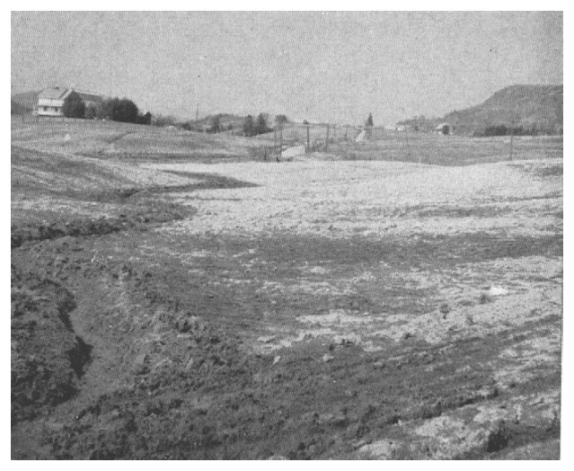
Figure 31.—Sols Pontiac dans la vallée de la rivière Rouge.
Les sols Pontiac ont un bon drainage naturel. Les matériaux de texture fine sur lesquels ils se sont formés empêchent l'eau de s'écouler rapidement en profondeur. D'un autre côté, la topographie et les nombreux cours d'eau qui sillonnent le terrain facilitent l'écoulement rapide de l'excès d'eau après que le sol perméable de surface est saturé. La capacité de rétention d'eau du sol est élevée et augmente en profondeur. Bien que les matériaux superficiels soient d'une texture un peu plus grossière que le substratum, l'échange d'eau entre les deux dépôts est favorisé par le changement graduel de texture de l'un à l'autre. L'érosion par l'eau peut être grave sur les sols Pontiac au printemps lorsque les sols de surface sont saturés et le sous-sol gelé.
Selon la profondeur du dépôt de limon au-dessus du substratum d'argile, la texture des sols cultivés varie de terre franche limoneuse à terre franche sur les dépôts les plus profonds à terre franche argilo-limoneuse ou à terre franche argileuse sur les dépôts les plus minces. La variation de profondeur peut être considérable à peu de distance, et nous n'avons pas trouvé pratique de séparer les différents types de la série. Les sols Pontiac qui figurent sur la carte sous une seule unité cartographique (Pc) comprennent toutes ces variations de texture. La description qui suit représente une terre franche limoneuse, type le plus répandu dans la région. Il appartient au groupe des podzols.
Horizon
Profondeur en pouces
Ae
6-8
Terre franche limoneuse brun foncé à brun grisâtre foncé; très friable; structure granuleuse fine; pH 5.3-6.3.
A2
La couche délavée, d'une profondeur de ¼ à 2 pouces à l'état vierge, est entièrement détruite dans les sols cultivés et mélangée à la couche superficielle ainsi qu'aux une partie de l'horizon B supérieur.
B2
4-8
Terre franche limoneuse brune à brun grisâtre ou à brun jaunâtre devenant en profondeur olive clair; très friable; structure granuleuse très fine; pH 5.6-6.6.
CD
Argile grise à gris olive; structure cuboïde anguleuse à subanguleuse; modérément ferme lorsqu'elle est humide, plastique lorsqu'elle est détrempée; pH 5.8-6.8.
Agriculture
Presque tous les sols Pontiac sont cultivés, à l'exception de certaines pentes raides le long des ravins. On devrait laisser ces pentes boisées pour empêcher l'érosion. Ces sols sont adaptés à une grande variété de cultures, mais ils servent presque uniquement aux grandes cultures. La terre, est naturellement fertile et l'on peut l'améliorer encore grandement par des moyens artificiels. Le bon drainage naturel, la capacité excellente de rétention d'eau et la texture de terre franche permettant une culture facile comptent parmi les principales caractéristiques avantageuses du sol.
Les rendements des sols Pontiac sont les plus élevés qu'on puisse obtenir sur les terres hautes et peuvent se comparer à ceux de certains bons sols des terres basses. La luzerne peut se cultiver sur les sols convenablement chaulés et peut persister durant de nombreuses années s'il ne survient pas de conditions climatiques désastreuses.
TYPES DE TERRAIN
TOURBIÈRES (1,768 acres)
Dans toute la région à l'étude, nous n'avons pas cartographié que 1,768 acres de tourbières, mais il se peut qu'une partie de ce type de terrain soit incluse dans les terrains marécageux. Les tourbières (Pt) occupent des anciens étangs ou des fonds d'anciens lacs et consistent en débris de plantes très peu décomposées qui ont encore leur aspect fibreux. La surface de ces dépôts organiques est généralement brun foncé et elle est généralement plus décomposée que les matériaux sous-jacents qui ont une couleur brun jaunâtre clair, sont très peu décomposés et atteignent parfois plus de dix pieds de profondeur. Dans les tourbières, les arbres les plus nombreux sont les mélèzes. L'orme fait généralement une croissance
chétive, alors que la mousse de sphaigne et les arbustes de la famille des éricacées croissent de façon très dense. Les tourbières ne servent pas à l'agriculture, mais la tourbe qu'on en extrait peut avoir une valeur commerciale.
Terre noire organique (7,872 acres)
Les terres noires de la région basse sont généralement bien décomposées, modérément acides ou neutres, et comme elles reposent souvent sur de l'argile, il est possible de les drainer sans frais trop onéreux. Les terres noires des hautes terres sont généralement assez bien décomposées, très acides et extrêmement difficiles à drainer parce qu'elles reposent dans des bassins de till pierreux ou sur l'assise rocheuse.
Une forte proportion des terres noires de la région basse ont été drainées et sont en culture, mais les terres noires organiques de la région élevée sont généralement laissées en forêt. La plupart des terres noires de la région basse reposent directement sur de l'argile, mais en certains cas, comme près de St-Canut, il se trouve de la marne entre la terre noire et l'argile. La marne s'est formée par l'accumulation de coquillages de petits organismes vivant dans l'eau des lacs, alors que la terre noire est un produit de décomposition des plantes qui ont poussé à l'endroit où était situé le lac après que les eaux s'en furent retirées. Certaines des terres noires de la région élevée reposent sur de la tourbe, mais cela est rarement le cas dans la région basse.
La profondeur des terres noires varie de 1 pied à plus de 10 pieds et les dépôts de moins de 2 pieds de profondeur ont été cartographiés comme terre noire organique mince (Mk-a). Les trois premiers pieds des dépôts sont généralement bruns et très bien décomposés. Au-dessous de trois pieds, les dépôts ont généralement une couleur brune à brun très foncé ou brun rougeâtre, et des restes d'arbres non décomposés se rencontrent parmi les matériaux partiellement décomposés.
Agriculture
Les terres noires organiques drainées conviennent le mieux aux cultures maraîchères, mais dans la région à l'étude on pratique plus communément des rotations avec soles de foin, de céréales et de pâturage. Les rendements des récoltes sont généralement bas, parce qu'on n'applique pas d'engrais chimique pour fournir les éléments minéraux essentiels. Beaucoup de cultivateurs ne se rendent pas compte que les sols organiques ne constituent pas naturellement un milieu équilibré qui permette la meilleure croissance de la majorité des plantes cultivées. Ils considèrent leur terre noire comme le type de sol le plus pauvre et le moins avantageux.
Le manque de connaissances sur la nature des sols organiques explique par exemple le gaspillage qui consiste à brûler la terre noire ou à la fertiliser abondamment avec du fumier seulement. Les sols organiques sont entièrement différents des sols minéraux et leurs exigences diffèrent aussi du tout au tout. Les terres noires organiques comptent parmi les plus riches dépôts naturels et le brûlage détruit l'azote et l'humus précieux. Il est vrai que le brûlage concentre les éléments minéraux et contribue à un accroissement temporaire de fertilité du dépôt organique, mais cela n'est pas avantageux qu'en apparence et constitue en réalité une perte énorme.
L'analyse chimique des terres noires et d'autres études (9) révèlent que l'élément le plus déficitaire chez cette sorte de terrain est le potassium, bien
que les oligoéléments puissent également faire défaut. La teneur moyenne en potassium des meilleurs sols organiques n'est qu'environ le dixième de la teneur moyenne dans les sols minéraux. On peut fournir le potassium seul sous forme de chlorure de potassium ou l'inclure dans les engrais chimiques complets. Les applications de fumier, si l'on en fait, doivent être petites et servir à stimuler la décomposition de la terre noire plutôt qu'à nourrir directement les plantes. Les cultivateurs qui tentent de corriger la carence de potassium et de phosphore en appliquant du fumier seulement ne peuvent obtenir économiquement de bonnes récoltes ni éviter la verse non plus que l'immaturité des céréales.
Les terres noires drainées et fertilisées se prêtent à une grande variété de cultures. Les résultats obtenus à la sous-station expérimentale de Ste-Clothilde (Châteauguay) montrent qu'il est possible d'obtenir des rendements profitables de la majorité des cultures ordinaires sur de bonnes terres noires organiques, spécialement si elles sont bien irriguées en même temps que bien drainées. Moyennant une fertilisation appropriée et le chaulage, au besoin, on peut obtenir d'excellentes récoltes de grandes cultures, mais en raison de leur réserve énorme d'azote et d'humus, les terres noires conviennent le mieux à la culture intensive. Parmi les nombreuses récoltes rentables possibles figurent le céleri, la laitue, les pommes de terre, les betteraves à sucre, les carottes et les choux.
Par contraste avec la majorité des sols minéraux, les terres noires sont extrêmement poreuses, de sorte qu'il faut éviter toutes les méthodes de culture qui tendent à en augmenter la porosité. Sur les sols organiques, il faut s'efforcer d'augmenter la compacité du sol de façon à permettre un meilleur contact des plantes avec le sol. Il est tout à fait indiqué de faire passer au bon moment le rouleau ou tout autre instrument qui sert à tasser le sol.
MARÉCAGES (8,144 acres)
Ce type de terrain comprend tous les sols qui sont recouverts d'eau assez longtemps durant la saison de végétation pour les rendre impropres à l'agriculture. Ces marécages se rencontrent généralement dans les dépressions sans aucun drainage et le long de cours d'eau paresseux. Il se rencontre beaucoup de petites étendues marécageuses dans la région élevée, spécialement dans le cas des sols de St-Colomban de Lakefield. Il n'a pas été possible de présenter séparément ces petits marécages, mais nous avons indiqué leur présence en ajoutant le symbole du marécage au symbole du sol. Les superficies de ces marécages sont comprises avec les étendues de sols qui les entourent, de sorte que le chiffre donné ci-dessus ne représente que la superficie des marécages cartographiés séparément.
La nature des sols minéraux qui gisent sous les marécages est variable. La matière organique qui se rencontre à la surface du sol est souvent peu décomposée et la quantité de matière organique ne dépasse que légèrement celle des sols minéraux environnants. Les marécages ne peuvent servir à l'agriculture à moins qu'on n'améliore beaucoup le drainage. Ces étendues sont généralement une faible source de matière organique et, à cet égard, elles sont moins précieuses que les étendues cartographiées comme terre noire ou tourbe.
PARTIE V
AGRICULTURE
Établissement agricole dans la région basse
L'établissement agricole dans les comtés d'Argenteuil, Deux-Montagnes et Terrebonne s'est fait en deux phases. Toute la région basse était pratiquement occupée avant tout établissement dans la région haute.
L'agriculture a débuté dans la partie inférieure du comté de Terrebonne le long de la rivière Mille-Îles. La seigneurie de Terrebonne a été établie en 1673 et l'occupation du terrain a commencé en 1725, alors que le curé Lepage administrait la région qui comprend aujourd'hui les paroisses de Ste-Anne-des-Plaines, Ste-Sophie, St-Jérôme, Terrebonne et une partie de St-Janvier (10). L'exploitation du sol commençait en même temps dans la seigneurie De Blainville, à l'ouest de la seigneurie de Terrebonne. Les concessions de terrain mesuraient trois arpents sur vingt (11). Au début, les progrès ont été lents, mais de 1769 à 1789, ils ont été plus rapides et le recensement de 1790 compte 794 habitants dans la seigneurie. Dans la lointaine seigneurie Desplaines au nord de la seigneurie de Terrebonne, l'occupation du terrain a commencé après 1759.
Vers 1820, presque tout le terrain compris entre Terrebonne et Duchêne et autour de Ste-Anne-des-Plaines était occupé. Cependant, cette année-là, 60 à 80 familles écossaises se sont établies sur des terres non concédées de la paroisse de Ste-Anne-des-Plaines. La seigneurie de Rivière-du-Chêne s'est formée en même temps que la seigneurie De Blainville. On présume qu'en 1820, tout le terrain était concédé en fermes de trois arpents sur trente. La seigneurie du lac des Deux-Montagnes, située à l'ouest de la seigneurie de Rivière-du-Chêne, a été administrée par les Sulpiciens depuis la date de la concession en 1717 jusqu'à la fin du régime seigneurial. La première terre a été concédée en 1783 (1) et les fermes des Sulpiciens ont enseigné aux pionniers les bonnes méthodes de culture. La seigneurie d'Argenteuil a été établie en 1682, mais ce n'est qu'en 1796 que la colonisation a débuté. Les premiers colons venaient du Vermont et se sont établis dans la région de St-André—Lachute. Le major Pat Murray, qui a obtenu la seigneurie d'Argenteuil en 1800 et est devenu le premier seigneur résident, y a amené un grand nombre de colons écossais. L'Écossais Macmillan a de même transporté en 1804 un groupe de pionniers qui se sont établis dans le comté de Grenville et Peter Dewar a fait venir 200 ou 300 immigrants qui se sont établis dans la région de St-André et le canton de Chatham.
A la suite d'une proclamation de la Grande-Bretagne en 1815 « offrant le transport gratuit, le terrain, les instruments et la nourriture aux personnes qui voudraient s'établir au Canada » (12), une foule d'immigrants sont venus en Ontario et dans certaines parties du Québec, spécialement en Argenteuil. Durant la période de 1825 à 1830 ou plus tard, les cantons de Chatham et de Grenville ont accueilli un grand nombre d'immigrants irlandais (13, 14).
Ce n'est qu'après la construction des canaux de Carillon et de Grenville que les cantons de Chatham et de Grenville ont connu leur plein essor. Plusieurs des immigrants irlandais et écossais qui ont travaillé à la construction des
canaux se sont établis dans la région. Il n'y avait que peu de bonnes terres dans le canton de Grenville, mais l'activité commerciale plus intense compensait cette lacune. Le canton de Chatham devint bientôt le centre de la population du comté d'Argenteuil, probablement en raison de la grande fertilité du sol. C'est là que se trouvaient les plus grandes étendues de bonne terre et c'est la région qui a toujours primé au point de vue agricole dans le comté.
Établissement agricole dans la région élevée
De 1840 à 1850, toute la terre était occupée dans la région basse alors que la région élevée avait à peine été touchée. Depuis un certain temps, les vieilles seigneuries étaient surpeuplées et complètement exploitées, mais l'escarpement laurentien servait de barrière naturelle à l'établissement dans la région élevée. Les premiers établissements suivaient naturellement les bords de l'escarpement où les sols sont pierreux et impropres à l'agriculture. C'est pourquoi la majorité de ces établissements précoces n'ont pas réussi. C'est plus au nord, spécialement dans la vallée de la rivière du Nord vers Ste-Adèle et dans la vallée des rivières Rouge et du Diable près d'Harrington, Arundel, Brébeuf et St-Jovite que se trouvaient des sols plus propices à l'agriculture.
Vers 1850, le comté de Deux-Montagnes était entièrement exploité. Comme il se trouve presque en entier dans la région basse, pratiquement tout le terrain convient à l'agriculture et même aujourd'hui c'est le comté le plus essentiellement agricole de la province. Par contre, seulement le quart du comté de Terrebonne, soit la partie qui se trouve dans la région basse, était exploité en 1850. A la fin du XIXe siècle, la partie située dans la région élevée n'était pas encore complètement exploitée. Seule une petite portion du comté, d'Argenteuil se trouve dans la région basse et, avec l'arrivée de nombreux colons dans la première moitié du XIXe siècle, les établissements se sont bientôt répandus dans toute la région basse. Comme pour les autres comtés, il y a eu durant un certain temps un excédent de population, mais il y a lieu de croire que plusieurs habitants se sont dirigés vers le nord et établis dans les régions hautes d'Harrington et d'Arundel. A part ces deux régions et une étroite bande de terre le long de la rivière Rouge, la partie haute du comté a toujours eu une population clairsemée.
Pendant la période de colonisation, sous l'impulsion du curé Labelle, prêtre colonisateur de St-Jérôme, on s'est rendu compte que les sols des Laurentides ne peuvent faire vivre une aussi forte population que ceux des terres basses. Cependant, la colonisation des hautes terres a aidé à résoudre le problème du surpeuplement dans les terres basses et a arrêté l'exode des cultivateurs vers les États-Unis. Dans les terres hautes de Terrebonne, ainsi que dans Argenteuil, l'agriculture seule ne peut généralement faire vivre une famille et il a toujours fallu avoir recours à l'exploitation forestière et à d'autres travaux en plus de ceux de la ferme.
Depuis 1920 environ, la partie haute de Terrebonne est devenue un centre touristique et récréatif d'importance croissante. La villégiature a augmenté le marché des produits de la ferme et beaucoup de maisons rurales se sont transformées en pensions ou en auberges. De nombreux cultivateurs tirent une partie de leurs revenus du tourisme.
Dans le comté d'Argenteuil, le tourisme est beaucoup moins important que dans Terrebonne, mais l'industrie est plus prospère dans Argenteuil que dans Deux-Montagnes.
Exploitation du terrain par les pionniers
Les pionniers devaient d'abord enlever les arbres, de sorte que l'exploitation forestière et l'agriculture ont marché de pair. Dans le comté de Terrebonne, on coupait le bois pour le compte de la marine royale française et plus tard, on a exporté en Angleterre du bois équarri. Simultanément, l'extraction de la potasse des cendres de bois constituait une petite industrie prospère qui aidait à défrayer le défrichement du terrain. En général, les parties pierreuses et montagneuses n'étaient pas défrichées et c'est là que l'industrie des produits de l'érable a commencé à s'établir.
Une fois les arbres enlevés, on semait à la volée, parmi les souches, du blé, de l'avoine, des rutabagas, etc. On prélevait généralement deux récoltes de cette façon et on les faisait suivre par quatre ans de foin et deux ans de pâturage. Au bout de huit ans, on enlevait les souches pourries et on labourait la terre. La terre arable était consacrée aux céréales, aux racines, au foin et aux pâturages et l'on ne se préoccupons que peu de la conservation de la fertilité du sol. On n'appliquait au sol que le peu de fumier qu'on avait.
Exploitation actuelle du terrain
L'exploitation actuelle du terrain est basée sur la production des grains et des fourrages destinés à nourrir le bétail qui les transformera en produits laitiers, en viande, en œufs et autres produits animaux. Le tableau 6 indique la façon générale dont la terre cultivée est exploitée. Il est évident que la plus grande étendue cultivée dans les trois comtés est consacrée au foin, suivie de l'avoine, du maïs d'ensilage et des céréales en mélange. Une superficie considérable est consacrée à la production des pommes de terre et l'on cultive aussi des racines, mais les cultures commerciales comme le tabac sont limitées.
TABLEAU 6. — ÉTENDUES EN GRANDES CULTURES, 19561
Argenteuil
Deux-Montagnes
Terrebonne
Blé...
1,485
60
167
Avoine pour le grain...
13,270
25,739
13,327
Orge...
211
718
500
Céréales en mélange...
290
2,386
808
Seigle...
60
-
5
Graine de lin...
14
-
1
Maïs pour le grain...
49
252
360
Sarrasin...
150
1,062
898
Pois de grande culture (secs)...
-
6
14
Haricots de grande culture (secs)...
1
34
46
Soja...
4
1
3
Foin...
26,042
38,842
28,460
Maïs d'ensilage...
1,375
2,314
1,298
Autres cultures fourragères...
3,178
613
1,035
Pommes de terre...
320
1,258
1,385
Navets, rutabagas, betteraves fourragères...
31
20
84
Tabac...
-
5
-
Autres grandes cultures...
-
10
1
1Recensement du Canada.
Comme ailleurs, le nombre de chevaux dans les trois comtés a diminué. Depuis 1951, la baisse a été de 30 à 35 p. 100. D'un autre côté, le nombre de vaches a augmenté, la hausse étant de 15 p. 100 en Argenteuil, de 19 p. 100 dans Deux-Montagnes et de 2 p. 100 dans Terrebonne depuis 1951. C'est dans Terrebonne, suivi de Deux-Montagnes et d'Argenteuil (Tableau 7), que se trouve le plus grand nombre de poules, poulets et dindes.
119
TABLEAU 7. — NOMBRE D'ANIMAUX SUR LES FERMES, 19561
Argenteuil
Deux-Montagnes
Terrebonne
Chevaux.
1,958
2,029
1,885
Bovins.
17,683
24,635
13,581
Porcs.
2,816
8,277
11,897
Moutons.
1,177
381
1,102
Poules et poulets.
79,459
124,879
190,877
Dindes.
1,655
7,692
25,456
Canards.
63
56
329
Oies.
293
10
29
1 Recensement du Canada.
Les revenus bruts de la ferme, comme le montre le Tableau 8, indiquent quelles sont les exploitations les plus importantes. Dans le comté d'Argenteuil, les produits laitiers viennent en tête (35.6 p. 100), suivis des bovins (14.8 p. 100), des chevaux, des moutons et de la laine (12.0 p. 100) et des produits forestiers (8.4 p. 100).
Dans le comté des Deux-Montagnes, ce sont encore les produits laitiers qui viennent en tête (38.9 p. 100), suivis des bovins (12.3 p. 100) et des porcs (7.8 p. 100). Les produits forestiers n'ont que peu d'importance relative (1.7 p. 100), vu que le comté se trouve presque entièrement dans la région basse. Les arbres fruitiers (5 p. 100) et les petits fruits (3 p. 100) sont plus importants que dans les deux autres comtés.
Dans le comté de Terrebonne, les produits laitiers l'emportent (25.4 p. 100), mais ils sont relativement moins importants que dans les deux autres comtés. Les œufs et les volailles (12 p. 100) viennent en second lieu, suivis des porcs (11 p. 100), des bovins (10.3 p. 100) et des produits forestiers (7.6 p. 100).
L'utilisation du terrain dans les terres hautes diffère considérablement de celle de la région basse. Dans les hautes terres, il n'y a pratiquement pas de vergers ni de cultures maraîchères; l'industrie laitière est limitée, mais la production des bovins de boucherie est importante, et les pâturages sont situés dans de petites clairières parmi les terrains boisés. Dans plusieurs fermes de la région élevée, la sylviculture est plus importante que l'agriculture.
TABLEAU 8. — REVENUS BRUTS DE LA FERME, 19501
Argenteuil
Deux-Montagnes
Terrebonne
%
$
%
$
%
$
Céréales.
0.5
16,331
1.9
91,793
1.6
64,742
Foin et cultures fourragères.
0.8
24,234
2.7
132,530
2.4
99,585
Pommes de terre, racines et grandes cultures.
0.3
7,394
1.6
75,328
1.3
53,380
Légumes.
0.1
2,108
2.0
95,178
4.2
172,789
Arbres fruitiers.
0.4
4,142
5.0
241,780
0.1
3,111
Petits fruits.
0.1
1,476
3.0
145,023
2.6
108,784
Produits de serre.
-2
-2
-2
-2
0.7
30,150
Produits de pépinière.
-2
-2
-2
-2
-2
-2
Bovins.
14.8
438,784
12.3
596,080
10.3
427,981
Produits laitiers.
35.6
1,051,628
38.9
1,890,524
25.4
1,051,025
Œufs et volailles.
5.6
163,979
6.2
303,022
12.0
494,635
Porcs.
5.4
160,654
7.8
379,031
11.0
455,657
Chevaux, moutons et laine.
12.0
355,207
0.4
20,536
0.5
22,526
Miel et cire d'abeille.
-2
-2
0.1
5,010
0.1
2,528
Produits forestiers.
8.4
248,924
1.7
83,765
7.6
316,032
Produits de l'érable.
1.1
30,955
2.6
124,668
0.9
37,559
Animaux à fourrure.
0.7
19,770
-2
-2
0.1
2,030
Produits consommés sur la ferme.
14.6
431,000
13.8
672,000
19.2
795,000
100.0
2,956,586
100.0
4,856,268
100.0
4,137,514
1 Recensement du Canada, 1951, pourcentages calculés d'après les données du recensement. 2 Données insuffisantes — moins de trois fermes ont fait rapport.
Rendements des récoltes et méthodes de culture en honneur
En général, les rendements de la majorité des récoltes ne sont que passables et il y a matière à beaucoup d'amélioration dans l'exploitation du sol. Le tableau 9 donne les rendements de certaines récoltes en 1950, mais on ne peut tirer de conclusion définitive des rendements durant une seule année.
TABLEAU 9. — RENDEMENTS DES RÉCOLTES EN 19501
Unité
Argenteuil
Deux-Montagnes
Terrebonne
Céréales
Avoine...
Boiss. à l'acre
30
33
25
Orge...
“
24
34
30
Céréales mélangées...
“
35
28
23
Maïs...
“
17
22
27
Sarrasin...
“
21
22
22
Pois secs...
“
15
15
12
Haricots secs...
“
2
12
10
Soja...
“
. . . . . . . . . . . .
16
. . . . . . . . . . . .
Seigle d'automne...
“
. . . . . . . . . . . .
28
. . . . . . . . . . . .
Seigle de printemps...
“
. . . . . . . . . . . .
24
. . . . . . . . . . . .
Cultures fourragères
Foin...
tonnes à l'acre
1.2
1.1
1.0
Luzerne...
“
1.3
1.7
1.4
Avoine pour le foin...
“
1.4
1.4
1.3
Maïs d'ensilage on foin...
“
8.5
10.0
9.4
Pommes de terre, racines et tabac
Pommes de terre...
boiss. à l'acre
165
167
168
Navets, betteraves fourragères et rutabagas...
tonnes à l'acre
9.7
8.3
9.0
Betteraves à sucre...
“
11.9
13.3
10.5
Tabac...
livres à l'acre
. . . . . . . . . . . .
487
598
1Recensement du Canada 1951.
La rotation de 6 ans est celle qui se pratique le plus communément dans la région à l'étude. La première année, on produit des cultures sarclées et quelques céréales comme le sarrasin, les pois et l'avoine; la seconde année, des céréales; la troisième et la quatrième année, du trèfle et du foin de fléole, et la cinquième et sixième année, du foin ou du pâturage. Le maïs d'ensilage est la récolte sarclée la plus importante, alors que l'avoine est la principale céréale. Lorsque les pâturages ne sont pas inclus dans la rotation, le cycle est réduit à 4 ou 5 ans ou bien la sole de foin est prolongée.
De nombreux cultivateurs essaient de maintenir la fertilité de leurs sols avec le fumier de leur ferme, seulement. La quantité de fumier varie selon le nombre et l'espèce d'animaux. On l'applique principalement sur les cultures sarclées et les prairies, en couverture. Souvent, les cultivateurs ne se rendent pas compte de la nécessité de recourir aux engrais chimiques pour produire des récoltes plus abondantes et de façon plus économique. Les quantités d'engrais chimiques employées varient considérablement d'une ferme à l'autre; les cultures maraîchères et les vergers sont presque suffisamment fertilisés, mais les terrains qui servent à la culture mixte, spécialement dans les hautes terres ne le sont certainement pas assez. Dans le passé, on employait le plus communément les engrais chimiques 4-8-10 et 2-12-6, mais on les a remplacés par des formules plus concentrées. Parmi les engrais chimiques simples, le phosphate a été le plus populaire et il a servi surtout pour les céréales et les pâturages sur les sols à fine texture, qui sont généralement riches en potasse. Le bore a été employé soit seul soit avec des engrais chimiques en vue de corriger la carence qui cause le
cœur liégeois des pommes ou le cœur brun des rutabagas. Cette carence se rencontre le plus communément dans le cas des plantes cultivées sur les sols riches en chaux des séries St-Bernard, Laval, Dorval, Oka, Farmington, Terrebonne et St-Joseph.
A l'exception des sols que nous venons de mentionner, pratiquement tout le terrain à l'étude a une acidité très élevée et doit être chaulé. Jusqu'ici, toutefois, la qualité de chaux employée est loin d'être suffisante. Quelques cultivateurs bien avisés ont corrigé l'acidité du sol et amélioré les rendements de leurs cultures, mais beaucoup d'autres doivent emboîter le pas et chauler une partie de leurs terres chaque année. Dans les descriptions des sols en particulier, nous avons souligné cette carence de chaux dans chaque sol qui en manque généralement.
Groupement des sols selon leur adaptabilité aux diverses cultures, l'exploitation du terrain, et les exigences d'exploitation
Les sols de la région à l'étude peuvent se répartir en cinq classes différentes selon leur adaptabilité aux différentes cultures. Le tableau 10 groupe les sols moins selon leur fertilité naturelle, que selon l'éventail d'adaptation aux différents genres de cultures. Dans cette classification, les sols qui se prêtent au plus grand nombre de cultures viennent en tête, alors que les sols dont l'adaptabilité est limitée ou qui sont impropres à l'agriculture occupent le dernier rang. Bien que la fertilité naturelle soit importante, elle ne détermine pas par elle-même le succès de la culture, à moins que le sol ne soit consacré aux cultures auxquelles il est adapté. Un maraîcher préfère une terre franche bien drainée de fertilité moyenne ou même faible à un sol argileux mal drainé dont la fertilité est grande. Dans un sol où se pratique la culture maraîchère, la fertilité naturelle n'est pas aussi importante que les bonnes propriétés physiques, car le maraîcher peut ajouter tous les éléments requis de fertilité. D'un autre côté, la fertilité naturelle du sol est très importante en grande culture où, du fait que les revenus nets sont comparativement bas, la quantité d'engrais chimique ne peut être aussi forte qu'en culture maraîchère.
Les normes accordées au tableau 10 sont basées sur les renseignements donnés par les cultivateurs et les agronomes, ainsi que sur les aptitudes naturelles du sol, déterminées par les classificateurs.
TABLEAU 10.—GROUPEMENT DES SOLS SELON LEUR ADAPTABILITÉ AUX GRANDES CULTURES, AUX CULTURES MARAÎCHÈRES ET AUX VERGERS 1
Groupements
Nom des séries et des types de sols
Soins spéciaux à donner 2
Grandes cultures
Cultures maraîchères
Vergers (pommiers)
Foin (trèfle et fléole)
Luzerne
Maïs d'ensilage et racines
Avoine et orge
Pâturages
Maïs sucré
Pommes de terre et carottes
Laitue et choux
Tomates
Haricots mange-tout
Petits fruits
I Sols convenant aux grandes cultures, aux cultures maraîchères et aux vergers.
Belle-Rivière
P.L.Fm.Fc.
3-2
2-1
1-2
2-1
2
2
2
2-3
2
2
...
1
Brébeuf
L.Fm.Fc.
2
2
1-2
1-2
2
1
1
2-3
2
2-3
...
2
Châteauguay
...
2
1
1
1
2
1
2
2-1
1
1
1
2-1
Chicot
Fm.Fc.
2-3
2
2-1
2
2
1-2
2-1
2-1
2
2
2
2-1
Dorval
P.
2
1
2
2
2
2
3
2
2
1
1
2-1
Lachute
L.Fm.Fc.
1-2
2-3
1-2
1
2
1-2
1-2
2
2
2
2
4-3
Laval
P.Fm.
2
1
1
2
2
2
2-3
2
2
2
...
1
Oka
Fm.Fc.
2-1
1
1
1-2
2
1
2
2
2
1
...
1
Pontiac
L.Fm.Fc.
2
2
1-2
2-1
2-1
1
1-2
2
2-3
2-3
...
3-4
St-Bernard
P.Fm.
2
1
1
2
2
1
2-1
2
2
1
1
1
Ste-Jovite
Pb.L.Fm.Fc.
2
2
2-1
2
2-1
2-1
2-1
2
2
2-3
1
2-3
II Sols convenant mieux aux grandes cultures qu'aux cultures maraîchères. Impropres aux vergers.
Baudette
D.L.
2
3-2
2-1
2
2
2-3
3-2
3
2-3
3
2
4-3
Bearbrook
D.G.
1
3
3
2
1-2
4
4
4
3-4
3-4
3-4
4
Brandon
D.L.
1
3-4
2-3
2-3
1-2
3
4
3
3-2
2
3
4
Dalhousie
...
1
2
2
1
1-2
2
2-4
2-3
2
2
2
3-4
Duchêne
D.
1
2
2
1
1
2
3-2
3
2
2
3-4
4
Laplaine
D.Fc.
1-2
3-4
4-3
2-3
2-3
3-4
3-4
2
2-3
3
3
4
Macdonald
D.
1
2-3
2-3
2
1-2
3
1-2
3
3
2
2-3
3-4
Rideau
G.L.
1-2
3
2-3
2
2-3
3
4
3-4
3
2-3
2-3
4
Ste-Rosalie
D.L.
1
3-4
2-3
1-2
1-2
3
4-3
3
3-2
2-3
2-3
4
St-Vincent
D.P.
1
4
3
3-2
2
3
3
3
3
3
2
4
St-Urbain
D.
2
2
1-2
2
1-2
3
4
3
3-2
2-3
2-3
4
Terrebonne
D.
1
2
3
2
1-2
3
4-3
3-2
3-2
3-2
2-3
4
Wendover
G.
2
2-3
3
2
3-2
3
4
4
4
3-4
3
4
III Sols convenant mieux aux cultures maraîchères qu'aux grandes cultures. Impropres aux vergers.
Achigan
D.L.Fm.Fc.
3
4
3
3-2
3
3
2
3
3-2
3-2
1-2
4
Allumette
D.L.Fm.Fc.
3
4
3
3-2
3
4
2
3
3-2
3-2
1-2
4
Bevin
D.L.Fm.Fc.
4
4
4
4
4
3
3
3
3-4
3-4
2
4
Botreaux
D.Fc.
3
4
3
3
3
3
3-2
3
3
3
2-3
4
Coteau
L.Fm.Fc.
2-3
2-3
3
2-3
2-3
3
1
3
2
2
2
3-2
Courval
L.D.Fc.
3-2
4
3-4
3
3-2
3-4
3-2
3-2
3-2
3-2
3-2
4
Demers
L.D.Fc.
2-3
4
3
3
3-2
3
3
3
3-2
3-2
3
4
1
2
3
4
5
6
7
8
9
10
11
12
Diable
L.Fm.Fc.
3-4
4
3-2
3
3-2
3-2
2-1
3-2
3-2
3-2
4
4
Guindon
L.Fm.Fc.Pb.
4-3
3-2
4-3
3-4
4-3
4-3
2
3-4
3-4
3
1-2
3
Lesage
L.Fm.Fc.
3-2
3-2
4-3
3-2
3
3
2-3
3-4
3-2
3
1-2
3
Muck
D.Fc.
3
4-3
3
3
3
3-2
2-1
1
2
2
2
4
Piedmont
L.Fm.Fc.
3
3-2
3-2
3
3
2
2-1
3
3
2-3
1-2
3
St-Amable
D.L.Fm.Fc.
3-4
4
4
3
3-4
3
3-2
4
4
3
3-3
4
St-Damase
L.Fm.Fc.
3
3-2
3
3
3
2
2-3
3-4
3
3
2
4-3
St-Jude
D.L.Fm.Fc.
3
4
3-4
3
3
2
2-3
3
3
3
2
4
Soulanges
D.L.Fc.
2-3
3-4
3
3-2
3-2
3
2-3
3-2
3-2
3-2
3-2
4
Vaudreuil
D.L.Fc.
3
4
4
3
3
4
3
2-1
3-2
3-2
3-2
4
IV Sols se prêtant très peu aux cultures.
Argenteuil
L.P.Fm.Fc.
3-4
3
3-4
3
3-2
4-3
3
3-4
3-4
3-4
2
1-2
Carillon
Fm.Fc.
3
2-1
3-4
3-4
3-4
3-4
3
4
4
3-4
1
1
Farmington
Fm.
3-4
2
3-4
4
3-2
4-3
4
3-4
3-4
3-4
3-2
4
Ivry
L.Fm.Fc.E.I.
4
3
4-3
4
4
4-3
2
4
4
3-4
2
3
Marelau
D.L.Pb.Fc.
3
4
4-3
3-4
3
4-3
4-3
3
3
3
3
4
Mille-Iles
L.Fm.Fc.I.
4
3-4
4
4
4
4
3-2
4
4
4
2-3
2-1
Mont-Rolland
L.Fm.Fc.
3
3
3
3
3-4
3
3-2
4
4
4
2
3
Morin
L.Fm.Fc.I.
4
3
4-3
4
4
4-3
2-3
4
4
3-4
2-3
3
Perrot
L.Fm.Fc.Pb.
3
3
4
4
3-2
3-4
3-4
4-3
4-3
4-3
2
3-2
Rigaud
L.Pb.
3
3
4
3-4
3
4
4
4
4
4
2
2-1
St-Benoit
L.Fm.Fc.
3
2
3-4
3
3
2
4
3-4
3-4
3-4
2
2-1
St-Faustin
L.P.Fm.Fc.
4
3
4-3
3-4
3-4
4
3-4
4
4
4
3
3-2
St-Gabriel
L.Fm.Fc.
3
3-2
3-4
3-4
3-4
3
3-4
3-4
3-4
3
2
3
St-Joseph
Fm.Fc.
3-4
1-2
3-4
3-4
3
3
3-4
3-4
3-4
3-4
2
1
St-Thomas
L.Fm.Fc.E.I.
3-4
3
3-4
3-4
4
3
2
3-4
3-4
3-4
2
3-2
Ste-Philomène
Fm.Fc.
3
1
3-2
3-4
4
2
2-3
3-4
3
3
2
1-2
Stonefield
Fm.Fc.L.
3
3
4
4
4-3
4-3
4
4-3
4-3
4-3
3-2
4
Uplands
L.Fm.Fc.E.I.
4
4-3
4
4
4
3-4
3-2
4
4
3-4
3-2
3
V Sols impropres à la culture.
Lanoraie
Lakefield
Larose
NOTA.—Pour l'utilisation de ces sols, se référer à l'étude générale des classes IV et V ou aux descriptions des sols en particulier.
Peat
Ste-Agathe
St-Colomban
Marécages
Alluvium non différencié
1Classement :—1 très bon; 2 bon; 3 passable; 4 pauvre.
2Les soins spéciaux à donner ou restrictions:
D. Une amélioration considérable de drainage s'impose
E. Il est nécessaire de combattre l'érosion éolienne
Fc. Exige des applications généreuses d'engrais chimique
Fm. Exige des applications généreuses de fumier ou d'engrais vert
G. Structure granuleuse difficile à maintenir
I. Récoltes sujettes à manquer sans irrigation
L. Sols acides, doivent être chaulés
P. Beaucoup de pierres à enlever
Pb. Affleurements fréquents ou boulders énormes.
Sols de la classe 1
Les sols de la classe 1 occupent environ 16 p. 100 de la région basse et environ 3 p. 100 des terres hautes. Ils sont bien drainés et arénés sur une profondeur de 2 à 4 pieds. Leur texture ou leur structure granuleuse facilite les façons culturales superficielles et contribue à assurer l'humidité du sol et la fertilité dans le profil. Bien que la terre soit généralement assez unie pour permettre le passage des machines agricoles, il y a par endroits des pentes raides ou des étendues pierreuses où la culture est difficile. Beaucoup de sols du groupe comptent parmi les plus sujets à l'érosion par l'eau, danger que les cultures sarclées contribuent à aggraver. De simples mesures de précaution, comme par exemple la culture en contre-pente, suffisent généralement à empêcher l'érosion.
Les sols de la classe 1 ont le plus vaste éventail d'adaptabilité aux diverses cultures. Ils se prêtent aux cultures maraîchères aussi bien qu'aux grandes cultures et, à l'exception de la série Pontiac, dont le sous-sol a une texture fine, et de la série Lachute, qui s'inonde périodiquement, ils se prêtent tous aux vergers et à la culture maraîchère des primeurs. Les pommes se cultivent principalement sur les sols Oka, mais on voit aussi d'excellents vergers sur les sols Belle-Rivière et St-Bernard. Tous les sols de cette classe conviennent très bien au maïs d'ensilage. Les séries Châteauguay, Chicot, Dorval, Laval, Oka et St-Bernard sont très propices à la luzerne, mais les autres sols de cette classe doivent être chaulés pour produire le maximum de légumineuses.
Bien que la fertilité naturelle de cette classe ne soit que modérée dans l'ensemble, le cultivateur peut généralement compter sur des rendements assez élevés dans les conditions climatiques ordinaires et moyennant des applications modérées de fumier et d'engrais chimiques. Ces sols sont moins sensibles aux variations excessives de climat que les sols de toute autre classe. Ce sont de tous les sols cartographiés, ceux qui assurent la meilleure réaction aux engrais chimiques et aux bons soins. La teneur en matière organique des sols n'est que modérée c'est pourquoi tout programme d'exploitation doit comporter la conservation et, si la chose est possible, l'augmentation de la matière organique. On peut ajouter le bore séparément ou avec les engrais chimiques pour corriger la carence observée dans les sols calcaires St-Bernard, Dorval, Oka et Laval.
Sols de la classe 2
Les sols de la classe 2 occupent environ 26 p. 100 de la région basse et moins de 1 p. 100 de la région haute. Ils sont presque tous formés de matériaux à texture fine et présentent une topographie unie ou presque unie. A de très rares exceptions près, ils requièrent un drainage artificiel. Certains sous-sols ont une structure modérément bonne, mais d'autres sont massifs et relativement imperméables à l'eau, à l'air et aux racines. La majorité de ces sols ont une grande capacité de rétention d'eau et une perméabilité lente. Ces sols ne doivent être travaillés qu'au niveau où l'humidité est convenable si l'on veut maintenir une structure granuleuse souhaitable. Sur ces sols, les bons rendements dépendent plus des bonnes conditions climatiques que sur les sols de la classe 1. La culture exige beaucoup de puissance, mais l'emploi des machines est facilité par la topographie unie et la fermeté du terrain et par l'absence de pierres, sauf sur les sols St-Vincent.
Aucun de ces sols ne convient aux vergers à cause du peu d'aération et de la défectuosité du drainage du sous-sol ou de l'inondation du terrain, comme
cela se produit dans la série Duchêne. Certains sols, toutefois, conviendraient
modérément aux vergers s’ils étaient égouttés au moyen de drains souterrains.
Les sols de cette classe sont généralement mieux adaptés aux grandes cultures
qu’aux cultures maraîchères. Ils varient de bons à excellents pour les pâturages,
les céréales et le foin de trèfle et de fléole, mais plusieurs de ces sols conviennent
plus ou moins à la luzerne. Le succès du maïs d’ensilage varie et dépend des
conditions climatiques, de la structure du sol et du drainage. Le lin à filasse et
la betterave à sucre sont des cultures commerciales indiquées, mais les conditions
climatiques adverses ou le manque d’expérience rendent souvent ces récoltes
peu rémunératrices. Bien que ces sols aient la plus forte fertilité potentielle de
tous les sols énumérés, on ne peut s’attendre que les rendements moyens sur
une longue période d’années dépassent les rendements moyens des sols bien
exploités de la classe 1.
Les sols de la classe 2 réagissent beaucoup moins aux engrais chimiques que
les sols de toutes les autres classes. Le fumier, toutefois, joue un rôle important
en maintenant une structure convenable dans le sol de surface. Sauf chez les
séries Rideau et Wendover, la teneur en matière organique du sol de surface
est très élevée, ce qui contribue pour beaucoup à la grande fertilité de ces sols.
Il importe au plus haut point de maintenir la matière organique à un niveau
élevé dans ces sols à texture fine, sans quoi les conditions physiques ne per-
mettent pas la bonne croissance des plantes et les rendements diminuent rapide-
ment. Sur les sols riches en humus, il ne faut fournir de l'azote aux céréales
qu'avec discrétion pour éviter la verse. L'emploi d'engrais chimiques devrait ce-
pendant être profitable aux cultures sarclées qui demandent une abondante pro-
vision d'aliments nutritifs assimilables au début de leur croissance. A l'exception
de la série Laplaine, ces sols ont une quantité passable à bonne de potasse, de
sorte que les engrais chimiques peuvent contenir moins de potasse que ceux
qu'on incorpore aux sols de toutes les autres classes. En ce qui concerne les
exigences en engrais chimiques, la série Laplaine doit être traitée comme les
terres noires et recevoir de fortes quantités de potasse, à moins que la couche
initiale de matière organique n'ait été pratiquement toute détruite par le feu
ou d'autres agents. En général, le phosphore est l'élément le plus déficitaire et
qui limite la croissance des plantes sur ces sols. Les engrais phosphatés donnent
les augmentations les plus significatives des rendements des grandes cultures.
Sur les fermes laitières où se pratique la culture mixte, le phosphore est l'élément
qui s'épuise le plus rapidement si on ne le renouvelle pas. Sur les sols à fine
texture Rideau et Wendover qui ne contiennent que peu de matière organique,
les engrais chimiques relativement riches en azote devraient se montrer plus
avantageux pour les grandes cultures ainsi que pour les cultures sarclées. Ces
sols profiteraient beaucoup de l'addition de matière organique et les cultivateurs
ne pourraient faire un meilleur usage de tous leurs déchets organiques ou des
dépôts organiques que de les incorporer à ces sols. Tous les sols acides de cette
classe devraient être chaulés avant d'essayer d'en obtenir des rendements maxi-
mums par l'emploi de fumier, d'engrais chimiques et d'amendements organiques.
Sols de la classe 3
Les sols de la classe 3 occupent environ 26 p. 100 de la région basse et 6 p.
100 de la région haute. Ils sont formés de sable limoneux, de terre franche
sableuse fine et de terre franche sablo-graveleuse, dont la plus grande partie
repose sur un substratum imperméable à fine texture. Cette classe comprend
aussi les terres noires.
Le drainage sur la grande majorité de ces sols est imparfait à médiocre; le terrain est uni ou en pente légère et exempt de pierres. Ils sont faciles à cultiver, mais à cause de leur manque de fermeté, les machines lourdes ne peuvent faire un bon travail lorsque la terre est saturée d'eau. Lorsqu'ils sont convenablement drainés et chaulés, ces sols peuvent servir aux grandes cultures, mais ils sont mieux adaptés à certaines cultures commerciales spéciales ou aux cultures maraîchères abondamment fertilisées. Les légumineuses, et spécialement la luzerne, se ressentent des conditions adresses sur les sols imparfaitement à mal drainés, mais la croissance varie généralement de passable à bonne sur les sols modérément bien drainés, comme ceux des séries St-Damase, Coteau, Piedmont et Lesage, lorsque le chaulage et la fertilisation sont appropriés.
La fertilité naturelle de ces sols est faible et toutes les cultures doivent être fertilisées pour produire des rendements normaux. Beaucoup d'endroits où la fertilisation a été négligée reviennent vite à la végétation sauvage, après avoir été cultivés pendant quelque temps. Le besoin de fortes quantités d'engrais chimiques rend l'emploi de ces sols plus coûteux que celui des sols de la première et de la seconde classe de sorte que ces sols devraient être affectés à des cultures commerciales qui peuvent défrayer le coût des engrais chimiques, tout en assurant un certain bénéfice au producteur. Sur des fermes qui ne comprennent que ces sols, l'industrie laitière et la culture mixte ne peuvent être rentables que si l'on y ajoute certaines cultures commerciales.
Les récoltes ne peuvent tirer tout le parti possible des engrais chimiques, à moins que le sol ne soit bien drainé et chaulé au besoin. Il est important de fumer ces sols, mais il faut y ajouter des engrais chimiques complets. Les terres noires, comprises dans cette classe, doivent recevoir des engrais chimiques spécialement riches en potasse.
Sols de la classe 4
Les sols de la classe 4 occupent environ 17 p. 100 de la région basse et 25 p. 100 des terres hautes. Bien que non mentionnées, les phases les moins
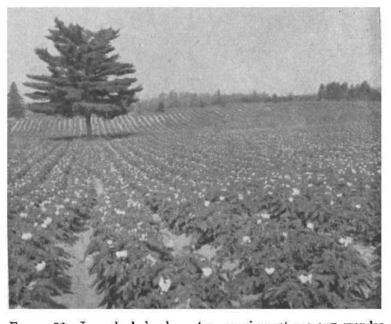
FIGURE 32.—Les sols de la classe 4 ne conviennent pas aux grandes cultures, mais ils se prêtent à certaines cultures spéciales.
pierreuses et les moins abruptes des séries Lakefield, Larose et Ste-Agathe pourraient appartenir à cette classe; les phases très pierreuses, rocheuses ou escarpées de ces séries appartiennent à la classe 5. Les sols de la classe 4 dérivent de matériaux sableux et graveleux à drainage naturel généralement excessif, à très basse capacité de rétention d'eau et à faible fertilité. Beaucoup de sols sont très pierreux et se présentent sur des pentes raides, ce qui rend très difficile l'emploi des machines agricoles.
Ces sols ne sont pas adaptés aux grandes cultures en général, mais ils se prêtent plus ou moins bien à certaines des cultures suivantes : pâturages précoces, luzerne, petits fruits, culture maraîchère de primeurs, pommes, pommes de terre et tabac à cigarettes.
La fertilité naturelle est faible ou très faible. Les effets du fumier et des engrais chimiques sont marqués mais de peu de durée, de sorte qu'il faut des applications fréquentes mais plutôt faibles d'engrais chimiques. A l'état naturel, la surface du sol ne contient qu'une faible proportion de matière organique. Si, par de généreuses applications de fumier de ferme ou d'engrais verts, de terre noire ou d'autres matériaux organiques, on augmente considérablement la teneur en humus du sol de surface, on peut doubler ou tripler la fertilité parce que le sol peut alors emmagasiner une quantité beaucoup plus forte d'eau et d'éléments nutritifs. Cette fertilité améliorée ne peut se maintenir que par une gestion prévoyante, car la terre tend à revenir à son bas niveau de matière organique. Le chaulage est nécessaire sur la majorité de ces sols, mais sur les sols Farmington, St-Joseph et Ste-Philomène, la forte proportion de chaux naturellement présente peut nuire à l'assimilation du bore. Il convient de demander aux agronomes des conseils sur la fertilisation des cultures spéciales.
Sols de la classe 5
Les sols de la classe 5 ne peuvent pas, de façon générale, servir à l'agriculture, soit parce qu'ils sont trop pierreux, trop secs, trop humides ou trop peu fertiles. Certains sols sont sujets à l'érosion éolienne, alors que d'autres sont sujets à l'érosion par l'eau. Dans la plupart des cas, il faut garder ces sols boisés ou les reboiser.
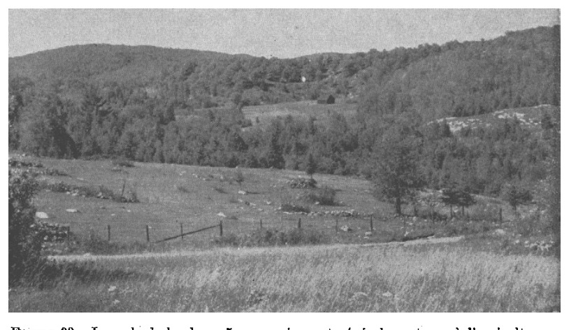
FIGURE 33. — Les sols de la classe 5 ne conviennent généralement pas à l'agriculture; les parties défrichées servent souvent de pâturages non améliorés.
De petites portions de l'alluvion indifférenciée et des tills pierreux peuvent servir de pâturages grossiers, mais pareils terrains conviennent mieux à la croissance des arbres. Il faut toujours se rappeler que la couverture naturelle des sols de cette région est une forêt riche et diversifiée. Les arbres rapportent généralement plus de profits que les cultures dans les cas où le manque de fertilité naturelle, l'érosion par le vent ou par l'eau, le trop grand nombre de pierres ou un mauvais relief nuisent à l'agriculture. Il y a avantage à reboiser pour empêcher le décapage du sol et aider à combattre le ruissellement. Des terrains qui n'auraient jamais dû être défrichés ont subi une érosion désastreuse et ont été ruinés; mais on peut espérer qu'avec l'accroissement de la valeur des produits de la forêt et grâce à une meilleure connaissance de l'exploitation appropriée du terrain, on évitera de pareilles erreurs à l'avenir.
RÉFÉRENCES
———————— Annuaire statistique du Québec, 1942-1943-1948-1949.
Sanderson, Marie — 1948, The climates of Canada according to the new Thornthwaite Classification. Scientific Agriculture, vol. 28, No. 11.
Dansereau, Pierre, 1945, Les conditions de l'acériculture. Agriculture, vol. 2.
Marie-Victorin, 1935. Flore Laurentienne.
Dresser, J. S. et T. C. Denis, 1946. Géologie du Québec, vol. 1, ministère des Mines, Québec.
Osborne, F. R., 1936, Rapport annuel, Partie 2, ministère des Mines, Québec.
McGerrigle, H. W., 1936, Rapport annuel, Partie 2, ministère des Mines, Québec.
Millette, J.-F.-G., Loess and loess-like deposits of the Susquehanna River Valley of Pennsylvania and a section of the Laurentians in Canada. Pennsylvania State University, Ph.D. Thesis, 1955.
McKibbin, R. R. et P. C. Stobbe, 1936. Sols organiques du sud-ouest du Québec, ministère de l'Agriculture du Canada.
Auclair, abbé Elie-J. 1940 et 1944, Les origines de Ste-Thérèse-de-Blainville et de Terrebonne, les Masson, leur château. Soc. Royale du Canada, 3e série, vol. 34 et vol. 38.
Bouchette, ———————Londres, 1831—Dictionnaire de la province du Bas-Canada.
————————— Toronto 1931—The Storied Province of Quebec, vol. 2.
Thomas, C., Histoire des comtés d'Argenteuil et de Prescott.
—————————Toronto, 1914, Canada and its Provinces, vol. 16, Province de Québec II.
Doughty, J. L., 1941, Scientific Agriculture, vol. 22, n° 3, p. 155.
Bouyoucos, J. G. 1936, Soil Science, vol. 42, p. 225.
Schollenberger, S. S. 1945, Soil Science, vol. 59.
————————— A.O.A.C. 1940, Methods of Analysis.
Truog, Emil, 1930, The determination of the readily available phosphorus of soils, Journal of American Society of Agronomy, vol. 22, p. 874.
Division de la chimie, Service des sciences, ministère de l'Agriculture du Canada 1946, Méthodes chimiques d'analyse des sols.
APPENDICE
Étendues des divers sols dans chaque comté
Les étendues occupées par chaque série de sol ont été calculées pour chacun des trois comtés et figurent au tableau 11. Dans les cas où les unités de cartographie comprennent deux sols, on attribue 70 p. 100 en étendue au premier et 30 p. 100 au second. Lorsque les unités cartographiées comprennent trois sols, on attribue 60 p. 100 au premier, 30 p. 100 au second et 10 p. 100 au troisième. Pareilles estimations peuvent n'être pas exactes pour chaque unité cartographiée, mais dans l'ensemble on peut les considérer comme représentatives.
Méthodes et données analytiques
Le tableau 12 consigne les analyses physiques et chimiques de certains sols de la région cartographiée.
Réaction (pH).—Pour déterminer le pH, nous nous sommes servi d'une électrode de verre Beckman, lecture faite sur une pâte aussi épaisse que sa manipulation le permettait et préparée 15 minutes au préalable (15).
Gravier.—Nous avons déterminé la fraction gravier en faisant passer l'échantillon de sol séché à l'air à travers un tamis à trous ronds de deux millimètres. La fraction qualifiée gravier varie en grosseur d'un pouce (2.5 cm) à deux millimètres et est exprimée en pourcentage de la quantité totale de tout le sol recueilli dans le champ et séché à l'air.
Fraction sable.—Les fractions sable ont été obtenues à partir de l'échantillon séché à l'air employé pour les analyses d'après la méthode Bouyoucos. Après la lecture finale à l'hydromètre, nous avons recueilli et fait sécher à l'air la fraction sable, pour la passer ensuite successivement à travers des tamis de 40, 60 et 140 mailles. Les fractions retenues sur ces tamis sont classées respectivement comme sable grossier, moyen ou fin. La fraction de sable très fin est représentée par la différence entre la fraction totale de sable déterminée par la méthode de l'hydromètre et la somme des sables grossiers, moyens et fins déterminée par les tamis. Nous n'avons fractionné le sable que dans le cas des sols très sableux d'intérêt spécial. Les données sont rapportées comme pourcentages de sol exempt de gravier et séché à l'air.
Méthodes analytiques.—Méthode Bouyoucos.—Nous avons déterminé les fractions totales, sable, limon et argile, de tous les échantillons, sauf les terres noires et les graviers. Nous avons employé la méthode hydrométrique Bouyoucos (16) sans détruire la matière organique. Les données sont exprimées en pourcentages de sol exempt de gravier et séché à l'air.
Carbone organique total.—Le carbone organique total a été déterminé par la méthode de combustion à l'état humide (17). La teneur en carbone organique constitue une mesure de la teneur en matière organique du sol qui contient
environ 58 p. 100 de carbone (carbone organique × 1.724 = matière organique). Les analyses ont porté sur des matériaux broyés passés à travers un tamis de cent mailles au pouce. Les données sont exprimées en pourcentages de sol séché au four.
Azote total — La détermination de l'azote total a été effectuée sur le sol finement pulvérisé, par la méthode Kjeldahl (18). Les données sont rapportées sur la base de sol séché au four.
Potassium total — Le potassium total a été déterminé en adaptant de la méthode chloroplatinique de J. L. Smith (9), à l'analyse d'échantillons finement pulvérisés. Les résultats sont exprimés en pourcentages du sol séché au four.
Phosphore total — Nous avons extrait le phosphore total par la méthode du nitrate de magnésium (18) appliquée à des échantillons finement moulus et nous avons employé la méthode Truog (19) pour déterminer la teneur en phosphore. Les données sont rapportées sur la base de sol séché au four.
Phosphore assimilable — Nous avons déterminé le phosphore assimilable du sol exempt de gravier et séché à l'air au moyen de la méthode Truog (19); les résultats sont exprimés en millionième de P2O5. Pour convertir ces données en livres à l'acre, il faut multiplier par le facteur 0.873. (Millièmes de P2O5× 0.873 = livres de P2O5 à l'acre).
Potassium, calcium et magnésium échangeables — Nous avons extrait le potassium, le calcium et le magnésium échangeables au moyen d'une solution normale neutre d'acétate d'ammonium (20) en utilisant du sol exempt de gravier et séché à l'air et nous avons exprimé les résultats en milli-équivalents de chaque élément par cent grammes de sol. Chaque milli-équivalent par cent grammes de K, Ca et Mg équivaut à 782, 401 et 253 livres à l'acre de ces éléments, respectivement.
TABLEAU 11.—SUPERFICIES DES SÉRIES DE SOLS DANS LES COMTÉS
D'ARGENTEUIL, DEUX-MONTAGNES ET TERREBONNE
Sols
Argenteuil
Deux-Montagnes
Terrebonne
Superficie totale
Super-ficie
Pourcentage du total
Super-ficie
Pourcentage du total
Super-ficie
Pourcentage du total
Super-ficie
Pourcentage du total
SOLS DE LA RÉGION BASSE........................................
86,220
17.2
155,840
87.3
104,419
20.9
346,479
29.4
Achigan........................................
960
0.5
5,197
1.1
6,157
0.5
Alluvions non différenciées.........
3,000
0.6
3,591
2.0
750
0.2
7,341
0.6
Argenteuil...................................
3,726
0.7
3,726
0.3
Baudette.....................................
390
0.1
122
0.0
512
0.0
Bearbrook...................................
1,024
0.6
1,024
0.1
Belle-Rivière..............................
3,563
0.7
13,803
7.7
17,366
1.5
Botreaux.....................................
2,035
1.2
2,035
0.2
Carillon.......................................
2,714
0.5
787
0.4
3,501
0.1
Châteauguay..............................
210
0.1
1,635
0.9
2,675
0.5
4,520
0.4
Chicot........................................
985
0.2
3,367
1.9
1,927
0.4
6,279
0.5
Coteau.......................................
200
0.0
253
0.1
220
0.1
673
0.1
Courval......................................
1,024
0.2
973
0.5
614
0.1
2,611
0.2
Dalhousie...................................
781
0.1
6,266
3.5
1,894
0.4
8,941
0.8
Dorval........................................
1,548
0.3
1,548
0.1
Duchêne.....................................
2,611
1.5
2,611
0.2
Farmington................................
1,402
0.3
300
0.2
403
0.1
2,105
0.2
Lachute......................................
992
0.2
1,306
0.7
2,298
0.2
Lanoraie.....................................
1,805
0.4
1,760
1.0
3,565
0.3
Laplaine.....................................
237
0.1
3,865
2.2
1,690
0.3
5,792
0.5
Laval..........................................
845
0.2
845
0.1
Macdonald.................................
941
0.5
128
0.0
1,069
0.1
Marelian.....................................
966
0.2
966
0.1
Mille-Îles....................................
70
0.0
1,632
0.9
1,702
0.1
Muck........................................
1,700
0.3
3,352
1.9
320
0.1
5,372
0.5
Oka...........................................
2,099
1.2
2,099
0.2
Peat..........................................
384
0.1
312
0.2
64
0.0
760
0.1
Perrot........................................
68
0.0
7,995
4.5
8,063
0.7
Rideau.......................................
11,189
2.2
14,856
8.3
11,378
2.3
37,423
3.2
Rigaud.......................................
1,280
0.3
2,747
1.5
4,027
0.3
St-Amable..................................
7,426
1.5
9,000
5.0
12,526
2.5
28,952
2.4
St-Benoît....................................
1,836
0.4
1,200
0.7
192
0.0
3,228
0.3
St-Bernard..................................
8,066
1.6
11,472
6.4
4,749
0.9
24,287
2.1
St-Damase..................................
3,550
0.7
4,058
2.3
4,837
0.9
12,445
0.9
St-Joseph...................................
2,662
1.5
2,662
0.2
St-Jude.......................................
2,940
0.6
832
0.5
18,640
3.7
22,412
1.9
Ste-Philomène............................
1,088
0.2
294
0.1
1,382
0.1
Ste-Rosalie.................................
11,482
2.3
35,528
19.9
12,878
2.6
59,888
5.1
St-Thomas.................................
848
0.5
3,329
0.7
4,177
0.4
St-Urbain....................................
576
0.1
576
0.0
St-Vincent...................................
3,160
0.6
1,510
0.8
4,670
0.4
Soulanges..................................
640
0.1
128
0.1
141
0.0
909
0.1
Stonefield...................................
1,568
0.3
1,568
0.1
Terrain marécageux.....................
700
0.1
3,104
1.7
1,500
0.3
5,304
0.5
Terrebonne................................
580
0.1
580
0.0
Uplands.....................................
4,838
1.0
5,825
3.3
11,395
2.3
22,058
1.9
Vaudreuil....................................
2,240
0.5
1,075
0.6
2,457
0.5
5,772
0.5
Wendover...................................
128
0.1
550
0.1
678
0.1
SOLS DE LA RÉGION HAUTE.......................................
414,900
82.8
22,720
12.7
396,061
79.1
833,681
70.6
Allumette....................................
500
0.1
720
0.2
1,220
0.1
Alluvions non différenciées.........
4,240
0.8
6,332
1.3
10,572
0.9
Bevin..........................................
1,260
0.3
845
0.5
1,625
0.3
3,730
0.3
Brandon......................................
3,917
0.8
3,917
0.3
Brébeuf......................................
2,827
0.6
1,229
0.3
4,056
0.3
Demers......................................
368
0.1
480
0.1
848
0.1
Diable.........................................
883
0.2
4,646
0.9
5,529
0.5
Guindon.....................................
8,522
1.7
6,252
1.3
14,774
1.3
Ivry............................................
5,760
1.1
180
0.1
11,623
2.3
7,563
1.5
Lakefield....................................
115,200
23.0
4,260
2.4
19,200
3.8
138,660
11.7
Larose.......................................
24,988
5.0
403
0.2
160
0.0
25,551
2.2
Lesage.......................................
2,048
0.4
2,163
0.4
4,211
0.4
TABLEAU 11.—SUPERFICIES DES SÉRIES DE SOL D'ANS LES COMTÉS
D'ARGENTEUIL, DEUX-MONTAGNES ET TERREBONNE (fin)
ANALYSES CHIMIQUES
Échantillons séchés au four
C total.................................................. (%)
N total.................................................. (%)
K2O total............................................... (%)
P2O5 total............................................... (%)
3.08 .15 3.36 .14
0.22 .00 3.97 .12
0.06 .00 3.57 .15
2.56 .21 2.50 .22
0.25 .05 2.83 .16
0.15 .02 2.87 .18
22.85 .14 1.35 .12
4.48 .15 2.43 .01
0.25 .04 2.86 .07
0.32 .01 2.51 .09
0.17 .00 2.52 .08
Échantillons séchés à l'air
P2O5 assimilable (millionièmes)...........
K échangeable (m.e./100 gms).............
Ca échangeable (m.e./100 gms)..........
Mg échangeable (m.e./100 gms).........
143 .25 6.52 2.63
1150
2025
130 .31 21.76 6.90
600
710
67 1.12 13.80 2.63
17
16
20
21
Type de sol et emplacement
Terre franche sableuse fine Ste-Agathe; 1½ mille au sud-est de Mont-Rolland
Sable fin St-Amable; 2½ milles au nord-ouest de St-Hermas
Sable fin St-Amable; 3 milles au nord-ouest de St-Maurice
143
Ao
B21
B22
C
Ao
Bg
C
Ac
Bg1
Bg2
C
Profondeur en pouces
0-3
6-12
12-20
26-36
0-6
6-20
20-30
0-6
6-16
16-30
30-36
pH
4.0
5.3
5.3
5.6
6.0
6.0
6.9
5.5
5.5
5.3
5.6
ANALYSES PHYSIQUES Pourcentage de gravier de tout le sol
4
28
26
16
0
0
0
0
0
0
0
Fractions déterminées au tamis
Sable grossier (%)
Sable moyen (%)
Sable fin (%)
Sable très fin (%)
0 1 70 16
0 0 84 11
0 1 86 10
3 9 66 14
0 14 71 12
0 12 72 10
0 7 60 23
Bouyoucos
Sable (total) (%)
Limon (%)
Argile (%)
53 37 10
62 32 6
59 35 6
62 33 5
87 10 3
95 4 1
97 2 1
92 7 1
97 2 1
94 4 2
90 7 3
ANALYSES CHIMIQUES
Échantillons séchés au four
C total (%)
N total (%)
K2O total (%)
P2O5 total (%)
Échantillons séchés à l'air
P2O5 assimilable (millionièmes)
K échangeable (m.e./100 gms)
Ca échangeable (m.e./100 gms)
Mg échangeable (m.e./100 gms)
19.50 .85 1.57 .06
22 .72 11.62 1.29
3.48 .22 1.80 .08
11 ... ... ...
1.39 .11 1.91 .06
14 ... ... ...
0.06 .01 1.93 .04
16 ... ... ...
2.70 .19 1.76 .16
25 .25 2.32 .54
0.36 .04 1.83 .17
43 ... ... ...
0.04 .02 2.05 .17
51 ... ... ...
1.69 .03 1.91 .17
37 .16 3.08 .29
0.20 .00 2.04 .14
4 ... ... ...
0.20 .00 1.96 .15
12 ... ... ...
0.11 .00 2.01 .15
80 ... ... ...
TABLEAU 12.—ANALYSES DES SOLS DE LA RÉGION CARTOGRAPHIÉE—Suite
Type de sol et emplacement
Sable limoneux St-Benoît 2½ milles au sud-est de Côte-Rouge
Terre franche sableuse fine St-Bernard; 1¼ mille au nord-est de Grenville
Terre franche St-Bernard; 1 mille au nord-ouest de Grand Chicot
Terre franche St-Bernard; 2 milles au nord-ouest de St-Janvier
144
$\text{A}_\text{c}$
$\text{B}_{21}$
$\text{B}_{22}$
$\text{C}$
$\text{A}_\text{o}$
$\text{B}_2$
$\text{C}$
$\text{A}_\text{o}$
$\text{B}_2$
$\text{C}$
$\text{A}_\text{c}$
$\text{B}_{21}$
$\text{B}_{22}$
0-4
4-18
18-40
40-45
0-6
6-18
18-24
0-6
6-30
30-36
0-6
6-18
18-26
Profondeur en pouces pH
6.3
6.9
7.5
7.6
6.1
6.6
7.5
7.5
7.7
7.8
7.8
7.6
8.1
Analyses physiques Pourcentage de gravier de tout le sol
0
0
3
6
12
21
38
14
33
25
12
8
6
Fractions déterminées au tamis
Sable grossier (%)
Sable moyen (%)
Sable fin (%)
Sable très fin (%)
6 34 29 11
8 34 32 7
8 51 30 1
5 44 37 8
Bouyoucos
Sable (total) (%)
Limon (%)
Argile (%)
80 16 4
81 17 2
90 8 2
94 4 2
55 35 10
53 37 10
53 37 10
46 35 19
46 35 19
38 44 18
44 35 21
41 40 19
28 56 16
Analyses chimiques
Échantillons séchés au four
C total (%)
N total (%)
$\text{K}_2\text{O}$ total (%)
$\text{P}_2\text{O}_5$ total (%)
3.80 .28 1.80 .04
1.59 .11 1.85 .08
0.74 .02 1.75 .06
0.43 .00 2.16 .07
3.20 .31 2.93 .20
0.69 .07 2.03 .13
0.20 .06 2.68 .12
3.85 .34 4.82 .21
0.73 .06 3.94 .18
0.58 .05 4.67 .23
2.67 .18 3.63 .15
1.06 .09 4.90 .18
0.17 .01 2.87 .20
Échantillons séchés à l'air
$\text{P}_2\text{O}_5$ assimilable (millionièmes)
K échangeable (m.e./100 gms)
Ca échangeable (m.e./100 gms)
Mg échangeable (m.e./100 gms)
10 4.88 15.78 2.43
120
135
130
335 .29 9.64 1.39
925
39
118 .33 26.78 5.16
200
160
41 .16 22.34 3.42
73
12
TABLEAU 12.—ANALYSES DES SOLS DE LA RÉGION CARTOGRAPHIÉE—Suite
TABLEAU 12.—ANALYSES DES SOLS DE LA RÉGION CARTOGRAPHIÉE—Suite
Type de sol et emplacement
Terre franche sableuse St-Damase; 1½ mille au nord de Geneva
Sable limoneux fin St- Damase; Val Gagnon
Terre franche sableuse St- Faustin; 2 milles au nord-est de St-Faustin
Terre franche sableuse St-Gabriel; 1½ mille au nord-ouest du Lac Supérieur
145
Ac
B22
B3
Ac
B2
B3
Ac
B21
B22
C
Ac
B21
B22
Profondeur en pouces
0–6
12–17
17–24
0–7
7–14
14–36
0–6
6–14
14–26
26–36
0–3
3–5
5–18
pH
5.8
5.9
6.1
5.6
6.3
6.4
5.0
5.2
5.3
5.3
4.5
4.8
4.9
ANALYSES PHYSIQUES
Pourcentage de gravier de tout le sol
4
0
0
0
0
0
22
35
30
70
14
30
76
Fractions déterminées au tamis
Sable grossier (%)
2
3
5
0
0
0
21
Sable moyen (%)
7
7
7
5
11
5
11
Sable fin (%)
47
45
64
57
60
80
17
Sable très fin (%)
20
25
13
22
9
10
19
Bouyoucos
Sable (total) (%)
76
80
92
84
90
95
67
74
82
68
.65
Limon (%)
18
14
5
13
7
4
29
21
14
30
30
Argile (%)
6
6
3
3
3
1
4
5
4
2
5
ANALYSES CHIMIQUES
Échantillons séchés au four
C total (%)
3.70
0.68
0.17
2.14
1.55
0.30
5.86
1.70
0.92
0.20
3.27
2.06
N total (%)
.18
.03
.02
.13
.07
.01
.36
.03
.03
.01
.18
.07
K2O total (%)
2.41
2.37
2.38
2.14
2.13
2.25
2.62
2.46
2.85
2.80
2.71
2.54
P2O5 total (%)
.12
.21
.21
.11
.13
.12
.06
.08
.07
.06
.04
.04
Échantillons séchés à l'air
P2O5 assimilable (millionièmes)
17
22
67
8
2
4
19
19
14
16
22
17
21
K échangeable (m.e./100 gms)
.93
.10
.74
5.26
Ca échangeable (m.e./100 gms)
2.15
5.02
2.78
1.79
Mg échangeable (m.e./100 gms)
.84
1.24
.84
.44
TABLEAU 12.—ANALYSES DES SOLS DE LA RÉGION CARTOGRAPHIÉE—*Suite*
Type de sol et emplacement
Sable limoneux graveleux St-Gabriel; 1½ mille au nord-est de Marelán
Terre franche sableuse très fine St-Jovite; ¾ mille au sud de St-Jovite
Sable fin St-Jude; 1½ mille au nord de Stonefield
Terre franche sableuse St-Jude; 2 milles à l'ouest de Lachute
146
Ao
B2
C
Ao
B2
B3
CD
Ac
Bg
C
Ac
Bg1
Bg2
C
Profondeur en pouces...........................
0-6
6-36
36-40
0-5
5-14
14-42
42-48
0-7
7-30
30-36
0-8
8-16
16-36
36-40
pH.............................................
5.7
5.9
5.9
5.4
5.7
6.0
5.7
5.8
6.0
6.2
4.8
5.8
6.3
7.4
ANALYSES PHYSIQUES
Pourcentage de gravier de tout le sol.
48
31
75
0
0
0
32
0
0
0
0
0
0
0
Fractions déterminées au tamis
Sable grossier........................... (%)
32
46
0
0
0
0
0
0
0
Sable moyen............................ (%)
21
23
3
1
6
1
1
0
1
Sable fin................................ (%)
19
16
70
76
85
36
35
37
65
Sable très fin........................... (%)
9
5
15
14
4
37
41
42
19
Bouyoucos
Sable (total)............................ (%)
81
90
49
42
25
67
88
91
95
74
77
79
85
Limon.................................... (%)
17
8
47
53
68
26
9
5
2
23
19
17
4
Argile................................... (%)
2
2
4
5
6
7
3
4
3
3
4
4
11
ANALYSES CHIMIQUES
Échantillons séchés au four
C total.................................. (%)
2.71
1.18
0.00
1.94
0.82
0.26
0.09
1.27
0.06
0.00
2.53
2.17
0.31
0.97
N total.................................. (%)
.18
.09
.02
.08
.05
.00
.00
.10
.02
.01
.17
.07
.02
.01
K2O total.............................. (%)
2.68
2.37
3.18
2.70
2.90
2.76
2.70
1.93
2.10
2.19
2.18
2.10
2.09
2.44
P2O5 total............................. (%)
.10
.13
.14
.10
.09
.10
.08
.22
.23
.14
.11
.23
.26
.17
Échantillons séchés à l'air
P2O5 assimilable (millionièmes)..
17
15
22
19
38
46
74
69
117
104
33
49
110
180
K échangeable (m.e./100 gms)....
.29
4.24
.36
1.16
Ca échangeable (m.e./100 gms)..
4.69
3.58
3.15
3.08
Mg échangeable (m.e./100 gms)..
.59
.39
.29
.49
TABLEAU 12.—ANALYSES DES SOLS DE LA RÉGION CARTOGRAPHIÉE–Suite
Type de sol et emplacement
Argile Ste-Rosalie; ¾ mille au sud de Browns Gore
Argile Ste-Rosalie; 2½ milles au nord- ouest de St-Placide
Argile Ste-Rosalie; St-Hermas-Station
Terre franche Soulanges; ½ mille à l'est de Calumet
Ao
G
C
Ao
G
C
Ao
G
C
Ao
Bg
C
Profondeur en pouces
0-6
8-16
16-22
0-6
6-24
24-30
0-8
8-15
15-24
0-7
7-18
28-36
pH
5.2
6.5
7.8
5.7
6.6
7.3
6.0
6.2
7.1
6.0
5.7
5.6
ANALYSES PHYSIQUES
Pourcentage de gravier de tout le sol
0
0
0
0
0
0
0
0
0
0
0
0
Fractions déterminées au tamis
Sable grossier (%)
2
Sable moyen (%)
10
Sable fin (%)
51
Sable très fin (%)
24
Bouyoucos
Sable (total) (%)
27
12
9
26
12
10
20
15
13
39
39
87
Limon (%)
37
29
31
30
26
27
32
35
22
48
45
9
Argile (%)
36
59
60
44
62
63
48
50
65
13
16
4
ANALYSES CHIMIQUES
Échantillons séchés au four
C total (%)
2.41
0.44
0.09
2.39
0.63
0.16
4.85
1.04
0.24
2.85
0.31
0.15
N total (%)
.15
.04
.04
.17
.05
.03
.27
.06
.03
.23
.03
.02
K2O total (%)
2.41
2.83
2.64
2.66
2.92
3.11
2.45
2.44
2.77
2.46
2.49
2.38
P2O5 total (%)
.14
.10
.12
.17
.15
.17
.26
.13
.13
.25
.15
.18
Échantillons séchés à l'air
P2O5 assimilable (millionièmes)
51
445
630
92
515
750
220
760
760
57
190
920
K échangeable (m.e./100 gms)
.93
.29
.82
.50
Ca échangeable (m.e./100 gms)
4.32
7.88
11.54
4.90
Mg échangeable (m.e./100 gms)
2.13
4.12
6.16
.79
TABLEAU 12.—ANALYSES DES SOLS DE LA RÉGION CARTOGRAPHIÉE—Fin
Type de sol et emplacement
Sable fin Uplands; 1¼ mille au nord-ouest de St-Maurice
Sable fin Uplands; 1 mille à l'ouest de Lachute
Argile Wendover; 3 milles à l'ouest de Terrebonne
148
A0
A2
B21
B22
C
Ac
B21
B22
C
Ac
C
Profondeur en pouces
0-2
2-4
4-7
7-26
30-36
0-6
6-15
51-28
28-36
0-5
14-16
pH
4.9
4.9
4.9
5.4
5.2
5.7
6.8
7.0
7.1
5.5
6.0
ANALYSES PHYSIQUES
Pourcentage de gravier de tout le sol
0
0
0
0
0
0
0
0
0
0
0
Fractions déterminées au tamis
Sable grossier (%)
Sable moyen (%)
Sable fin (%)
Sable très fin (%)
. . . .
2 8 61 17
0 13 59 16
0 11 73 12
0 2 82 14
0 4 75 10
0 6 78 13
0 9 74 11
0 3 83 11
Bouyoucos
Sable (total) (%)
Limon (%)
Argile (%)
79 17 4
88 10 2
88 10 2
96 2 2
98 2 0
89 7 4
97 2 1
94 4 2
97 2 1
15 40 45
12 25 63
ANALYSES CHIMIQUES
Échantillons séchés au four
C total (%)
N total (%)
K2O total (%)
P2O5 total (%)
4.80 .25 1.67 .06
1.15 .03 2.04 .05
3.95 .14 1.93 .10
0.49 .02 2.03 .11
0.08 .00 2.27 .13
1.88 .10 1.90 .13
0.51 .04 2.02 .17
0.16 .02 1.86 .21
0.07 .01 1.97 .21
2.15 .21 2.92 .14
0.31 .05 3.20 .09
Échantillons séchés à l'air
P2O5 assimilable (millionièmes)
K échangeable (m.e./100 gms)
Ca échangeable (m.e./100 gms)
Mg échangeable (m.e./100 gms)